例句：She wears comfortable blue jeans while browsing through colorful books at the local store.
她在當地書店瀏覽彩色書籍時，穿著舒適的藍色牛仔褲。
檢視 1:1 發光看板概念插畫 Prompt
Stylized high-detail digital concept art illustration of 'jeans'. A vibrant indie bookstore with tall wooden shelves, a young woman in stylish jeans reaching for a book. In the prominent view or overhead, an illuminated glowing sign, neon board, digital terminal, or storefront plaque clearly displays 'VINTAGE JEANS'. Characters in modern stylish attire engaging in joyful, relatable actions. Sunlit glass windows, warm ambient lighting, beautiful color harmony. Crisp linework, vibrant daylight lighting, clean cel-shading with smooth reflections, rich architectural perspective, exact stylized concept art aesthetic, 1:1 square composition.
例句：We sip hot cocoa in January while planning our garden for the coming spring.
我們在一月啜飲熱可可，同時為即將到來的春天規劃花園。
檢視 1:1 發光看板概念插畫 Prompt
Stylized high-detail digital concept art illustration of 'january'. A cozy sunlit cafe interior with frost patterns on windows, a group of friends reviewing a gardening journal. In the prominent view or overhead, an illuminated glowing sign, neon board, digital terminal, or storefront plaque clearly displays 'WELCOME JANUARY'. Characters in modern stylish attire engaging in joyful, relatable actions. Sunlit glass windows, warm ambient lighting, beautiful color harmony. Crisp linework, vibrant daylight lighting, clean cel-shading with smooth reflections, rich architectural perspective, exact stylized concept art aesthetic, 1:1 square composition.
例句：We listened to upbeat jazz tunes while waiting out the evening city traffic jam.
我們在等待傍晚城市交通堵塞時，聽著輕快的爵士樂。
檢視 1:1 發光看板概念插畫 Prompt
Stylized high-detail digital concept art illustration of 'jam'. Two friends sitting inside a sleek modern car during sunset, smiling while waiting in a line of traffic. In the prominent view or overhead, an illuminated glowing sign, neon board, digital terminal, or storefront plaque clearly displays 'TRAFFIC JAM'. Characters in modern stylish attire engaging in joyful, relatable actions. Sunlit glass windows, warm ambient lighting, beautiful color harmony. Crisp linework, vibrant daylight lighting, clean cel-shading with smooth reflections, rich architectural perspective, exact stylized concept art aesthetic, 1:1 square composition.
例句：He grabbed his favorite denim jacket before heading out to the botanical garden walk.
他在前往植物園散步前，隨手拿起了他最愛的那件丹寧外套。
檢視 1:1 發光看板概念插畫 Prompt
Stylized high-detail digital concept art illustration of 'jacket'. A stylish man grabbing his denim jacket from a minimalist wooden coat rack in a sunlit modern hallway. In the prominent view or overhead, an illuminated glowing sign, neon board, digital terminal, or storefront plaque clearly displays 'NEW JACKET'. Characters in modern stylish attire engaging in joyful, relatable actions. Sunlit glass windows, warm ambient lighting, beautiful color harmony. Crisp linework, vibrant daylight lighting, clean cel-shading with smooth reflections, rich architectural perspective, exact stylized concept art aesthetic, 1:1 square composition.
例句：The pottery studio itself feels like a peaceful sanctuary hidden within the busy city.
這間陶藝工作室本身就像是隱藏在繁忙城市中的寧靜避風港。
檢視 1:1 發光看板概念插畫 Prompt
Stylized high-detail digital concept art illustration of 'itself'. A bright, airy pottery studio with shelves of clay pots and sun rays streaming through large windows. In the prominent view or overhead, an illuminated glowing sign, neon board, digital terminal, or storefront plaque clearly displays 'THE STUDIO ITSELF'. Characters in modern stylish attire engaging in joyful, relatable actions. Sunlit glass windows, warm ambient lighting, beautiful color harmony. Crisp linework, vibrant daylight lighting, clean cel-shading with smooth reflections, rich architectural perspective, exact stylized concept art aesthetic, 1:1 square composition.
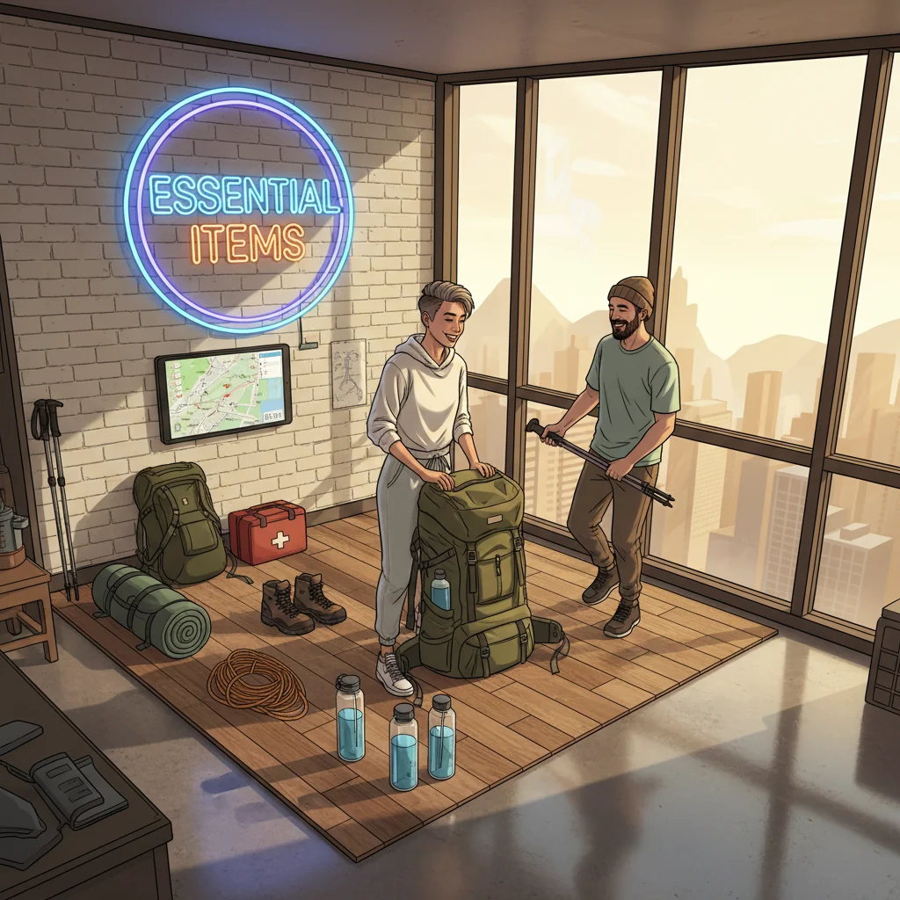
生活具象例句：She carefully organized all the essential items into her backpack for the mountain hike.
她將所有必需物品仔細整理進背包，準備去登山健行。
檢視 1:1 發光看板概念插畫 Prompt
Stylized high-detail digital concept art illustration of 'items'. A young woman in an airy modern studio apartment packing a backpack with hiking gear and water bottles. In the prominent view or overhead, an illuminated glowing sign, neon board, digital terminal, or storefront plaque clearly displays 'ESSENTIAL ITEMS'. Characters in modern stylish attire engaging in joyful, relatable actions. Sunlit glass windows, warm ambient lighting, beautiful color harmony. Crisp linework, vibrant daylight lighting, clean cel-shading with smooth reflections, rich architectural perspective, exact stylized concept art aesthetic, 1:1 square composition.
例句：Picking the perfect vintage item at this quirky weekend farmers market is so rewarding.
在這個古怪的週末農夫市場挑選完美的復古物品真是太棒了。
檢視 1:1 發光看板概念插畫 Prompt
Stylized high-detail digital concept art illustration of 'item'. A stylish shopper holds up a unique handcrafted ceramic bowl at a vibrant outdoor weekend market stall. In the prominent view or overhead, an illuminated glowing sign, neon board, digital terminal, or storefront plaque clearly displays 'UNIQUE ITEM'. Characters in modern stylish attire engaging in joyful, relatable actions. Sunlit glass windows, warm ambient lighting, beautiful color harmony. Crisp linework, vibrant daylight lighting, clean cel-shading with smooth reflections, rich architectural perspective, exact stylized concept art aesthetic, 1:1 square composition.
例句：We discussed environmental issues while relaxing on the soft grass of the city park.
我們在城市公園柔軟的草地上放鬆時，討論了環境議題。
檢視 1:1 發光看板概念插畫 Prompt
Stylized high-detail digital concept art illustration of 'issues'. A group of diverse friends sitting on a picnic blanket in a lush city park during a golden afternoon. In the prominent view or overhead, an illuminated glowing sign, neon board, digital terminal, or storefront plaque clearly displays 'GLOBAL ISSUES'. Characters in modern stylish attire engaging in joyful, relatable actions. Sunlit glass windows, warm ambient lighting, beautiful color harmony. Crisp linework, vibrant daylight lighting, clean cel-shading with smooth reflections, rich architectural perspective, exact stylized concept art aesthetic, 1:1 square composition.
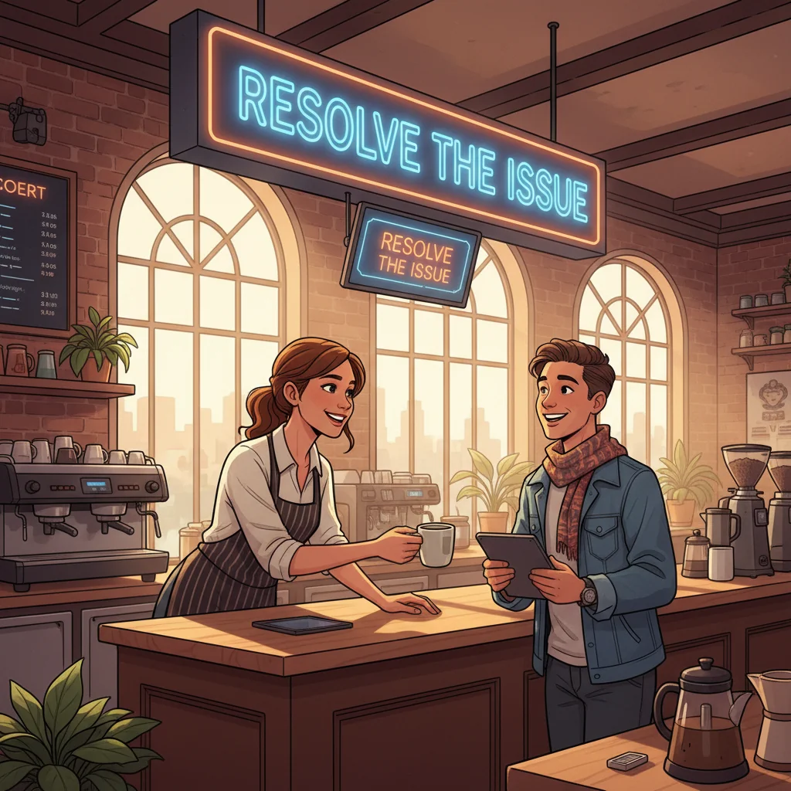
生活具象例句：The barista helped me resolve the minor issue with my morning latte loyalty card.
咖啡師幫我解決了早晨拿鐵集點卡的小問題。
檢視 1:1 發光看板概念插畫 Prompt
Stylized high-detail digital concept art illustration of 'issue'. A friendly barista in a cozy sunlit cafe assists a smiling customer at the counter. In the prominent view or overhead, an illuminated glowing sign, neon board, digital terminal, or storefront plaque clearly displays 'RESOLVE THE ISSUE'. Characters in modern stylish attire engaging in joyful, relatable actions. Sunlit glass windows, warm ambient lighting, beautiful color harmony. Crisp linework, vibrant daylight lighting, clean cel-shading with smooth reflections, rich architectural perspective, exact stylized concept art aesthetic, 1:1 square composition.
例句：They spent their vacation relaxing on a small, sunny island near the rocky harbor.
他們在岩石港口附近的一個陽光充足的小島上度過了假期。
檢視 1:1 發光看板概念插畫 Prompt
Stylized high-detail digital concept art illustration of 'island'. A bright coastal ferry station overlooking blue water, a vibrant storefront plaque displays 'ISLAND ESCAPE'. A traveler in modern summer vacation attire checking a map with a happy smile. Sunlit glass windows, warm ambient lighting, beautiful color harmony. Crisp linework, vibrant daylight lighting, clean cel-shading with smooth reflections, rich architectural perspective, exact stylized concept art aesthetic, 1:1 square composition.
例句：Training for a half marathon involves daily morning jogs through the lush city park.
為半程馬拉松訓練需要每天早上在蔥鬱的城市公園裡慢跑。
檢視 1:1 發光看板概念插畫 Prompt
Stylized high-detail digital concept art illustration of 'involves'. A scenic city park path in the morning, a glowing sign on a park lamp displays 'EXERCISE INVOLVES FUN'. A jogger in modern activewear smiling while running past flowering trees. Sunlit glass windows, warm ambient lighting, beautiful color harmony. Crisp linework, vibrant daylight lighting, clean cel-shading with smooth reflections, rich architectural perspective, exact stylized concept art aesthetic, 1:1 square composition.
例句：Modern urban community gardens often involve neighbors growing fresh vegetables together every single weekend.
現代都市社區花園通常包含鄰居們每個週末聚在一起種植新鮮蔬菜。
檢視 1:1 發光看板概念插畫 Prompt
Stylized high-detail digital concept art illustration of 'involve'. A vibrant community garden with raised beds, a wooden plaque clearly displays 'INVOLVE NATURE'. Diverse people in stylish casual wear planting seedlings in the soil. Sunlit glass windows, warm ambient lighting, beautiful color harmony. Crisp linework, vibrant daylight lighting, clean cel-shading with smooth reflections, rich architectural perspective, exact stylized concept art aesthetic, 1:1 square composition.
例句：The local artisan checked the final invoice before sending the handmade crafts to customers.
當地工匠在將手工藝品寄給顧客前，仔細檢查了最終發票。
檢視 1:1 發光看板概念插畫 Prompt
Stylized high-detail digital concept art illustration of 'invoice'. A tidy, sun-drenched artisan workshop filled with crafts, a digital terminal on a desk displays 'FINAL INVOICE'. A focused craftsman in a modern denim shirt reviewing a tablet document. Sunlit glass windows, warm ambient lighting, beautiful color harmony. Crisp linework, vibrant daylight lighting, clean cel-shading with smooth reflections, rich architectural perspective, exact stylized concept art aesthetic, 1:1 square composition.
例句：She felt delighted to be invited to the cozy neighborhood rooftop dinner party tonight.
她很高興被邀請參加今晚鄰里間舒適的屋頂晚餐派對。
檢視 1:1 發光看板概念插畫 Prompt
Stylized high-detail digital concept art illustration of 'invited'. A scenic rooftop terrace garden at sunset, a glowing neon board displays 'YOU ARE INVITED'. A group of stylish young adults sharing wine and laughter around a table. Sunlit glass windows, warm ambient lighting, beautiful color harmony. Crisp linework, vibrant daylight lighting, clean cel-shading with smooth reflections, rich architectural perspective, exact stylized concept art aesthetic, 1:1 square composition.
例句：I want to invite my best friends for a fun pottery session this weekend.
我想邀請我最好的朋友們這個週末一起參加有趣的陶藝課程。
檢視 1:1 發光看板概念插畫 Prompt
Stylized high-detail digital concept art illustration of 'invite'. A bright creative pottery studio with clay pots, a storefront plaque clearly displays 'POTTERY INVITE'. Two friends in modern stylish aprons laughing while shaping clay on a wheel. Sunlit glass windows, warm ambient lighting, beautiful color harmony. Crisp linework, vibrant daylight lighting, clean cel-shading with smooth reflections, rich architectural perspective, exact stylized concept art aesthetic, 1:1 square composition.
例句：Colorful invitations to the summer garden party were scattered across the wooden cafe table.
夏季花園派對的彩色邀請函散落在木製咖啡桌上。
檢視 1:1 發光看板概念插畫 Prompt
Stylized high-detail digital concept art illustration of 'invitations'. A sunlit cozy cafe corner with floral arrangements, an illuminated glowing sign on the wall displays 'GARDEN INVITATIONS'. A stylish woman in a linen dress happily sorting elegant paper cards. Sunlit glass windows, warm ambient lighting, beautiful color harmony. Crisp linework, vibrant daylight lighting, clean cel-shading with smooth reflections, rich architectural perspective, exact stylized concept art aesthetic, 1:1 square composition.
例句：I received a digital invitation to the grand opening of the new botanical bakery.
我收到了一份數位邀請函，邀請我參加那間植物系麵包店的開幕典禮。
檢視 1:1 發光看板概念插畫 Prompt
Stylized high-detail digital concept art illustration of 'invitation'. A cozy indie bookstore with a digital tablet showing a floral invitation screen. An illuminated neon sign displays 'OPEN INVITATION'. A person holding a pastry smiling in a sunlit corner. Sunlit glass windows, warm ambient lighting, beautiful color harmony, crisp linework, vibrant daylight lighting, clean cel-shading with smooth reflections, rich architectural perspective, exact stylized concept art aesthetic, 1:1 square composition.
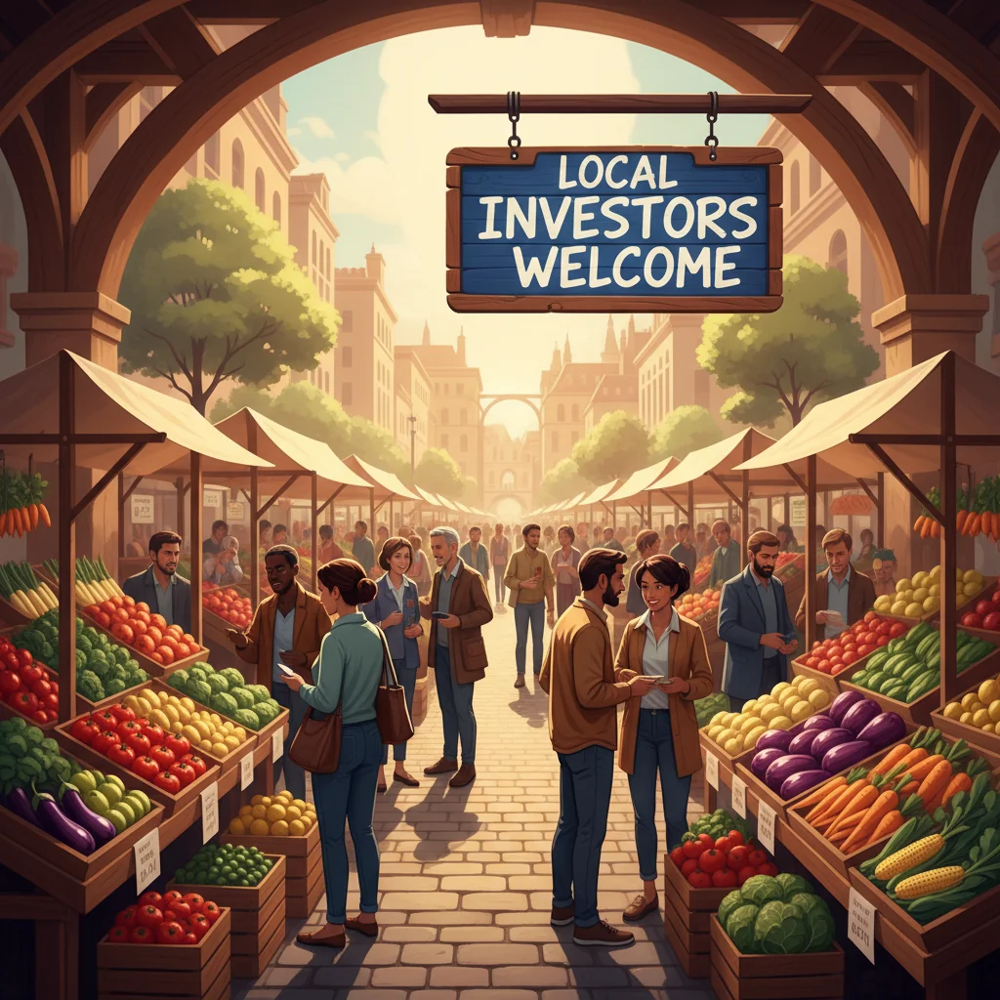
生活具象例句：Local investors gathered at the farmers market to support the new sustainable farm initiative.
當地的投資者聚集在農夫市集，支持這項新的永續農場計畫。
檢視 1:1 發光看板概念插畫 Prompt
Stylized high-detail digital concept art illustration of 'investors'. A bustling farmers market with stalls overflowing with colorful vegetables. A storefront plaque displays 'LOCAL INVESTORS WELCOME'. People chatting over fresh organic produce. Sunlit open air, warm ambient lighting, beautiful color harmony, crisp linework, vibrant daylight lighting, clean cel-shading with smooth reflections, rich architectural perspective, exact stylized concept art aesthetic, 1:1 square composition.
例句：Buying a high-quality mountain bike is a great investment for your weekend hiking adventures.
購買一台高品質登山車是你週末徒步冒險的一項絕佳投資。
檢視 1:1 發光看板概念插畫 Prompt
Stylized high-detail digital concept art illustration of 'investment'. A modern garage studio with a shiny mountain bike being prepared for a trip. A digital terminal on the wall displays 'INVESTMENT IN ADVENTURE'. A happy cyclist adjusting gear with tools. Sunlit glass windows, warm ambient lighting, beautiful color harmony, crisp linework, vibrant daylight lighting, clean cel-shading with smooth reflections, rich architectural perspective, exact stylized concept art aesthetic, 1:1 square composition.
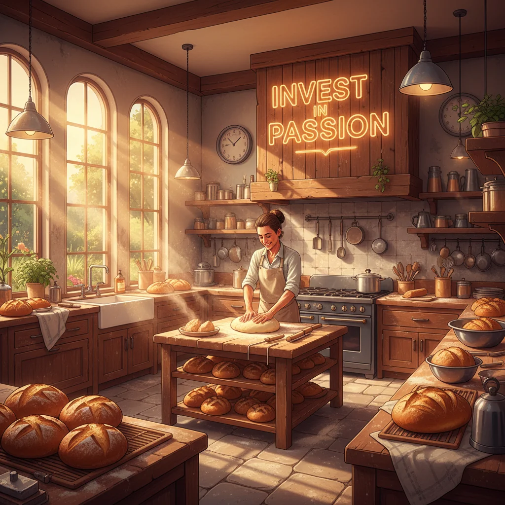
生活具象例句：It is wise to invest time in learning how to bake artisan sourdough bread.
花時間學習如何烘焙手工酸種麵包是明智的投資。
檢視 1:1 發光看板概念插畫 Prompt
Stylized high-detail digital concept art illustration of 'invest'. A cozy home kitchen filled with flour and fresh bread loaves. On the wall, an illuminated sign displays 'INVEST IN PASSION'. A person joyfully kneading dough under warm sunlight. Sunlit glass windows, warm ambient lighting, beautiful color harmony, crisp linework, vibrant daylight lighting, clean cel-shading with smooth reflections, rich architectural perspective, exact stylized concept art aesthetic, 1:1 square composition.
例句：The museum guide gave a brief introduction to the pottery workshop's ancient clay techniques.
博物館導覽員為陶藝工作坊的古老陶土技法做了簡單的介紹。
檢視 1:1 發光看板概念插畫 Prompt
Stylized high-detail digital concept art illustration of 'introduction'. An instructor standing in a sunlit pottery studio surrounded by clay vases. On the wall, a neon board displays 'INTRODUCTION TO POTTERY'. Creative students listen intently while holding clay tools. Sunlit glass windows, warm ambient lighting, beautiful color harmony, crisp linework, vibrant daylight lighting, clean cel-shading with smooth reflections, rich architectural perspective, exact stylized concept art aesthetic, 1:1 square composition.
例句：She is introducing her rescued golden retriever to the local community garden members today.
她今天正帶著她救援回來的黃金獵犬認識社區花園的夥伴們。
檢視 1:1 發光看板概念插畫 Prompt
Stylized high-detail digital concept art illustration of 'introducing'. A young woman smiling while holding a leash in a blooming community garden. In the overhead, a wooden plaque displays 'INTRODUCING OUR NEWEST FRIEND'. A friendly golden retriever greets a gardener. Sunlit glass greenhouse nearby, warm ambient lighting, beautiful color harmony, crisp linework, vibrant daylight lighting, clean cel-shading with smooth reflections, rich architectural perspective, exact stylized concept art aesthetic, 1:1 square composition.
例句：The friendly barista introduced a new organic coffee blend to the morning cafe crowd.
親切的咖啡師向早晨的咖啡客介紹了一款新的有機咖啡豆。
檢視 1:1 發光看板概念插畫 Prompt
Stylized high-detail digital concept art illustration of 'introduced'. A cheerful barista pouring latte art in a sunlit boutique cafe. In the prominent view, an illuminated glowing sign displays 'INTRODUCED NEW BLENDS'. Stylish customers smile while holding steaming ceramic mugs. Sunlit glass windows, warm ambient lighting, beautiful color harmony, crisp linework, vibrant daylight lighting, clean cel-shading with smooth reflections, rich architectural perspective, exact stylized concept art aesthetic, 1:1 square composition.
例句：I want to introduce my best friend to this amazing organic rooftop vegetable garden.
我想把我的好友介紹給這座很棒的有機屋頂菜園。
檢視 1:1 發光看板概念插畫 Prompt
Stylized high-detail digital concept art illustration of 'introduce'. Two friends stand on a lush rooftop garden overlooking a city, pointing at plants. An illuminated glowing sign clearly displays 'INTRODUCE NATURE'. People are gardening in the background in modern leisure wear. Sunlit glass windows, warm ambient lighting, beautiful color harmony. Crisp linework, vibrant daylight lighting, clean cel-shading with smooth reflections, rich architectural perspective, exact stylized concept art aesthetic, 1:1 square composition.
例句：He is really into hiking mountain trails during his quiet weekend morning park visits.
他真的很喜歡在週末安靜的早晨去公園健行山徑。
檢視 1:1 發光看板概念插畫 Prompt
Stylized high-detail digital concept art illustration of 'into'. A man in athletic gear prepares his backpack at the entrance of a vibrant city park. A neon board clearly displays 'INTO THE WILD'. Other hikers and cyclists are moving through the sunlit path. Sunlit glass windows, warm ambient lighting, beautiful color harmony. Crisp linework, vibrant daylight lighting, clean cel-shading with smooth reflections, rich architectural perspective, exact stylized concept art aesthetic, 1:1 square composition.
例句：She conducts interviews with local artists for the weekend arts and culture community podcast.
她為週末的藝術文化社區播客節目採訪當地的藝術家們。
檢視 1:1 發光看板概念插畫 Prompt
Stylized high-detail digital concept art illustration of 'interviews'. A woman with a microphone sits in a lush community garden, recording a chat with a painter. A storefront plaque clearly displays 'ARTS INTERVIEWS LIVE'. People in trendy outfits are relaxing in the park nearby. Sunlit glass windows, warm ambient lighting, beautiful color harmony. Crisp linework, vibrant daylight lighting, clean cel-shading with smooth reflections, rich architectural perspective, exact stylized concept art aesthetic, 1:1 square composition.
例句：A creative team is interviewing talented designers for their new summer fashion pop-up event.
創意團隊正在為他們新的夏季時尚快閃活動面試有才華的設計師。
檢視 1:1 發光看板概念插畫 Prompt
Stylized high-detail digital concept art illustration of 'interviewing'. A group of fashion designers sits in a chic, open-plan workspace filled with fabric swatches. An illuminated glowing sign clearly displays 'INTERVIEWING NOW'. Candidates in stylish streetwear are holding portfolios. Sunlit glass windows, warm ambient lighting, beautiful color harmony. Crisp linework, vibrant daylight lighting, clean cel-shading with smooth reflections, rich architectural perspective, exact stylized concept art aesthetic, 1:1 square composition.
例句：The enthusiastic candidate was interviewed by the friendly owner of the local bakery shop.
這位熱情的候選人在當地烘焙坊被友善的老闆面試了。
檢視 1:1 發光看板概念插畫 Prompt
Stylized high-detail digital concept art illustration of 'interviewed'. An applicant sits at a wooden table in a bustling, fragrant bakery, chatting with the owner. On the wall, a neon board clearly displays 'INTERVIEWED CANDIDATE'. Staff in modern aprons are preparing pastries in the background. Sunlit glass windows, warm ambient lighting, beautiful color harmony. Crisp linework, vibrant daylight lighting, clean cel-shading with smooth reflections, rich architectural perspective, exact stylized concept art aesthetic, 1:1 square composition.
例句：He prepared well for the job interview at a trendy creative design studio today.
他今天為一家時尚創意設計工作室的工作面試做了充分準備。
檢視 1:1 發光看板概念插畫 Prompt
Stylized high-detail digital concept art illustration of 'interview'. A confident young man sits in a bright, modern creative studio with colorful plants and design sketches. In the overhead view, a digital terminal clearly displays 'JOB INTERVIEW START'. Stylish professionals in casual chic attire are smiling and shaking hands. Sunlit glass windows, warm ambient lighting, beautiful color harmony. Crisp linework, vibrant daylight lighting, clean cel-shading with smooth reflections, rich architectural perspective, exact stylized concept art aesthetic, 1:1 square composition.
例句：She browses the fast internet while sipping an iced latte at the cozy cafe.
她在舒適的咖啡館裡喝著冰拿鐵，同時瀏覽著快速的網際網路。
檢視 1:1 發光看板概念插畫 Prompt
Stylized high-detail digital concept art illustration of 'internet'. A young woman relaxes on a plush velvet sofa in a sunlit botanical cafe, browsing her tablet. In the prominent view, an illuminated glowing sign clearly displays 'GLOBAL INTERNET CONNECT'. Characters in modern stylish attire are reading and chatting. Sunlit glass windows, warm ambient lighting, beautiful color harmony. Crisp linework, vibrant daylight lighting, clean cel-shading with smooth reflections, rich architectural perspective, exact stylized concept art aesthetic, 1:1 square composition.
例句：The cafe serves international coffee blends to customers from all across the globe today.
這間咖啡館今天為來自全球各地的顧客供應國際咖啡豆調配。
檢視 1:1 發光看板概念插畫 Prompt
Stylized high-detail digital concept art illustration of 'international'. A bustling, chic coffee shop with a world map wall. In the prominent view, a glowing neon sign displays 'INTERNATIONAL BREWS'. A diverse group of stylish people enjoying coffee together. Sunlit glass windows, warm ambient lighting, beautiful color harmony. Crisp linework, vibrant daylight lighting, clean cel-shading with smooth reflections, rich architectural perspective, exact stylized concept art aesthetic, 1:1 square composition.
例句：Joining the hiking club allowed him to pursue his interests alongside his best friends.
加入登山社讓他能夠與最好的朋友們一起追求自己的愛好。
檢視 1:1 發光看板概念插畫 Prompt
Stylized high-detail digital concept art illustration of 'interests'. A vibrant fitness gym and community space. In the prominent view, a glowing storefront sign displays 'SHARED INTERESTS'. A group of hikers in stylish outdoor gear prepare for a weekend trip. Sunlit glass windows, warm ambient lighting, beautiful color harmony. Crisp linework, vibrant daylight lighting, clean cel-shading with smooth reflections, rich architectural perspective, exact stylized concept art aesthetic, 1:1 square composition.
例句：They discovered an interesting bookstore tucked away in a quiet, charming city alleyway.
他們在安靜迷人的城市巷弄中，發現了一間有趣的書店。
檢視 1:1 發光看板概念插畫 Prompt
Stylized high-detail digital concept art illustration of 'interesting'. A cozy indie bookstore interior with floor-to-ceiling shelves. In the prominent view, an illuminated brass plaque displays 'INTERESTING READS'. A stylish couple chats while browsing vintage books. Sunlit glass windows, warm ambient lighting, beautiful color harmony. Crisp linework, vibrant daylight lighting, clean cel-shading with smooth reflections, rich architectural perspective, exact stylized concept art aesthetic, 1:1 square composition.
例句：The museum curator was interested in the ancient pottery found at the local site.
博物館館長對當地發現的古代陶器感到非常感興趣。
檢視 1:1 發光看板概念插畫 Prompt
Stylized high-detail digital concept art illustration of 'interested'. A modern ceramics studio where an artist examines a new sculpture. In the prominent view, a neon board displays 'STAY INTERESTED'. A curious young man in a clean studio apron examines a clay vase. Sunlit glass windows, warm ambient lighting, beautiful color harmony. Crisp linework, vibrant daylight lighting, clean cel-shading with smooth reflections, rich architectural perspective, exact stylized concept art aesthetic, 1:1 square composition.
例句：Her growing interest in gardening led her to plant colorful flowers in the park.
她對園藝日益增長的興趣，促使她在公園裡種植了鮮花。
檢視 1:1 發光看板概念插畫 Prompt
Stylized high-detail digital concept art illustration of 'interest'. A community garden scene where people are planting flowers together. In the prominent view, a rustic wooden sign displays 'GARDEN INTEREST'. A joyful woman in a floral dress tends to a patch of sunflowers. Sunlit glass windows, warm ambient lighting, beautiful color harmony. Crisp linework, vibrant daylight lighting, clean cel-shading with smooth reflections, rich architectural perspective, exact stylized concept art aesthetic, 1:1 square composition.
例句：He purchased travel insurance before his solo backpacking trip across the scenic mountain trails.
他在獨自前往山間步道背包旅行前，購買了旅遊保險。
檢視 1:1 發光看板概念插畫 Prompt
Stylized high-detail digital concept art illustration of 'insurance'. A traveler at a modern airport terminal kiosk checking travel documents. In the prominent view, an illuminated digital terminal displays 'TRAVEL INSURANCE'. A young man with a backpack looks confident and prepared. Sunlit glass windows, warm ambient lighting, beautiful color harmony. Crisp linework, vibrant daylight lighting, clean cel-shading with smooth reflections, rich architectural perspective, exact stylized concept art aesthetic, 1:1 square composition.
例句：She carefully followed the baking instructions to create the perfect loaf of sourdough bread.
她仔細遵循烘焙說明，製作出完美的酸種麵包。
檢視 1:1 發光看板概念插畫 Prompt
Stylized high-detail digital concept art illustration of 'instructions'. A home baker in a sunlit kitchen reads a recipe card by a vintage stand mixer. In the prominent view, a wooden wall plaque displays 'BAKING INSTRUCTIONS'. A stylish young woman wearing an apron smiles while dusting flour. Sunlit glass windows, warm ambient lighting, beautiful color harmony. Crisp linework, vibrant daylight lighting, clean cel-shading with smooth reflections, rich architectural perspective, exact stylized concept art aesthetic, 1:1 square composition.
例句：The pottery teacher gave a clear instruction on how to shape the clay bowl.
陶藝老師針對如何塑形陶碗，給予了清晰的指導。
檢視 1:1 發光看板概念插畫 Prompt
Stylized high-detail digital concept art illustration of 'instruction'. A sunlit, creative pottery studio with clay-covered tables and spinning wheels. In the prominent view or overhead, an illuminated glowing sign, neon board, digital terminal, or storefront plaque clearly displays 'POTTERY INSTRUCTION'. A mentor with a kind expression is showing a student the proper hand placement. Sunlit glass windows, warm ambient lighting, beautiful color harmony. Crisp linework, vibrant daylight lighting, clean cel-shading with smooth reflections, rich architectural perspective, exact stylized concept art aesthetic, 1:1 square composition.
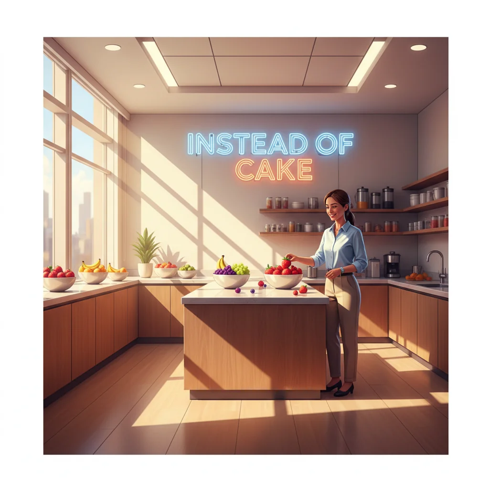
生活具象例句：She chose fresh fruit instead of cake for her healthy afternoon office snack time.
她選擇吃新鮮水果，而不是蛋糕，作為她健康的下午辦公室點心時間。
檢視 1:1 發光看板概念插畫 Prompt
Stylized high-detail digital concept art illustration of 'instead of'. A bright, airy modern office pantry with colorful fruit bowls and sunlight streaming in. In the prominent view or overhead, an illuminated glowing sign, neon board, digital terminal, or storefront plaque clearly displays 'INSTEAD OF CAKE'. A cheerful professional in modern casual clothing picks a ripe strawberry. Sunlit glass windows, warm ambient lighting, beautiful color harmony. Crisp linework, vibrant daylight lighting, clean cel-shading with smooth reflections, rich architectural perspective, exact stylized concept art aesthetic, 1:1 square composition.
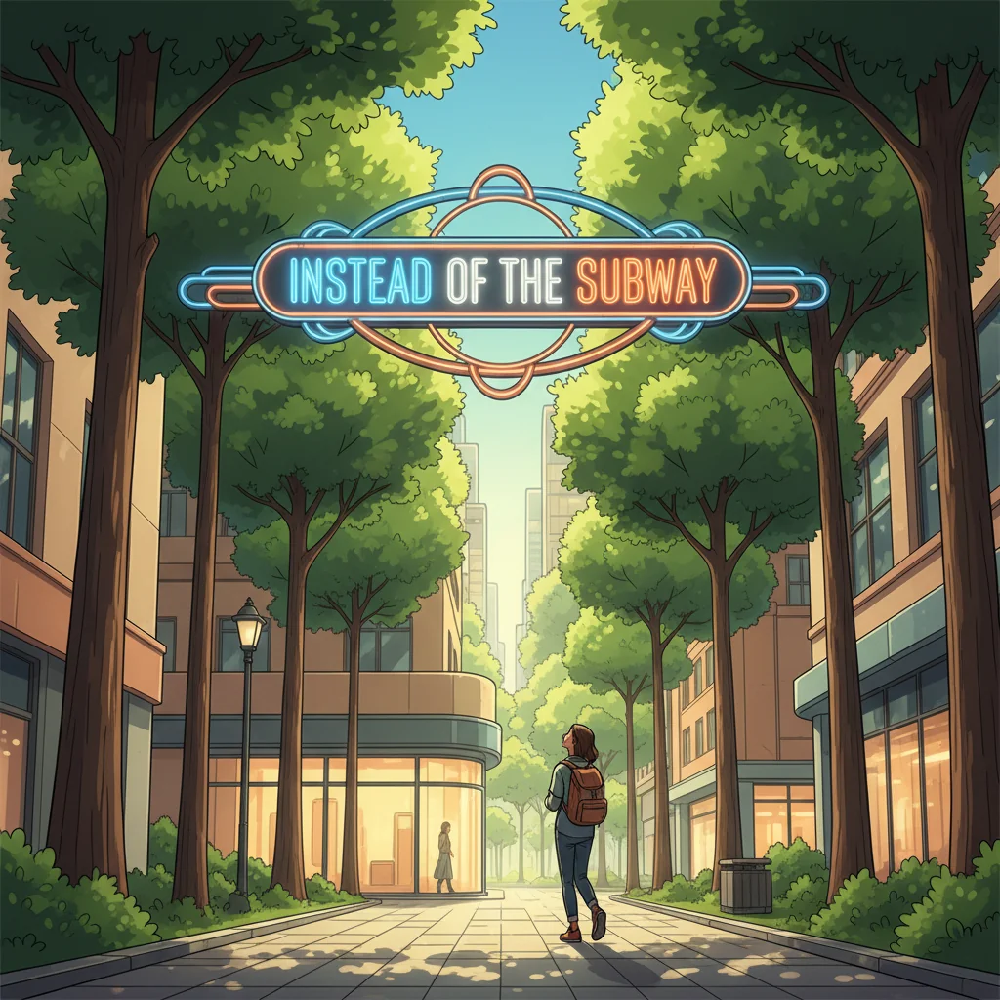
生活具象例句：I walked through the park instead of taking the subway on this sunny morning.
在這個陽光明媚的早晨，我選擇穿過公園，而不是搭乘地鐵。
檢視 1:1 發光看板概念插畫 Prompt
Stylized high-detail digital concept art illustration of 'instead'. A beautiful, lush city park pathway with tall trees and dappled sunlight. In the prominent view or overhead, an illuminated glowing sign, neon board, digital terminal, or storefront plaque clearly displays 'INSTEAD OF THE SUBWAY'. A person with a stylish backpack is enjoying a peaceful walk. Sunlit glass windows, warm ambient lighting, beautiful color harmony. Crisp linework, vibrant daylight lighting, clean cel-shading with smooth reflections, rich architectural perspective, exact stylized concept art aesthetic, 1:1 square composition.
例句：My friends helped me install the new solar lights in my cozy backyard garden.
朋友們幫我在舒適的後院花園裡安裝了新的太陽能燈。
檢視 1:1 發光看板概念插畫 Prompt
Stylized high-detail digital concept art illustration of 'install'. A modern, artistic backyard garden at golden hour with lush plants. In the prominent view or overhead, an illuminated glowing sign, neon board, digital terminal, or storefront plaque clearly displays 'INSTALL STATION'. Two friends in stylish outdoor gear are laughing while mounting light fixtures. Sunlit glass windows, warm ambient lighting, beautiful color harmony. Crisp linework, vibrant daylight lighting, clean cel-shading with smooth reflections, rich architectural perspective, exact stylized concept art aesthetic, 1:1 square composition.
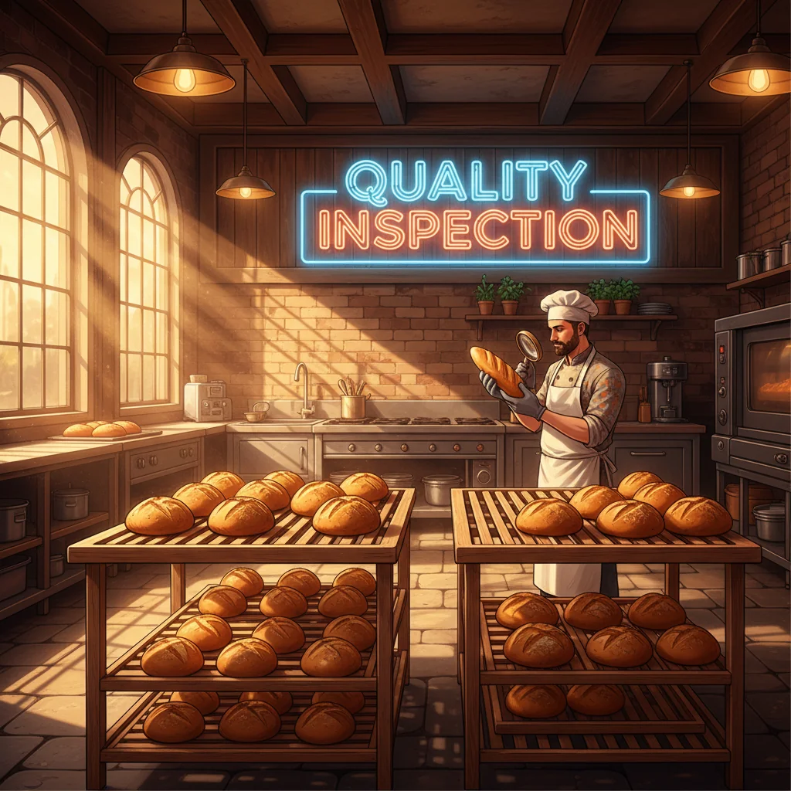
生活具象例句：The master baker conducted a final inspection of the fresh sourdough loaves before sale.
麵包大師在販售前，對剛出爐的酸種麵包進行了最後的檢查。
檢視 1:1 發光看板概念插畫 Prompt
Stylized high-detail digital concept art illustration of 'inspection'. A professional yet rustic sunlit bakery kitchen with golden loaves on wooden cooling racks. In the prominent view or overhead, an illuminated glowing sign, neon board, digital terminal, or storefront plaque clearly displays 'QUALITY INSPECTION'. A baker in a clean apron is carefully observing the crust of a loaf. Sunlit glass windows, warm ambient lighting, beautiful color harmony. Crisp linework, vibrant daylight lighting, clean cel-shading with smooth reflections, rich architectural perspective, exact stylized concept art aesthetic, 1:1 square composition.
例句：We found a tiny, secret garden hidden inside the bustling city’s historic brick alleyway.
我們在繁忙城市的歷史紅磚巷弄內，發現了一座隱藏的小小秘密花園。
檢視 1:1 發光看板概念插畫 Prompt
Stylized high-detail digital concept art illustration of 'inside'. A vibrant, sun-drenched courtyard hidden behind a brick wall in a busy city. In the prominent view or overhead, an illuminated glowing sign, neon board, digital terminal, or storefront plaque clearly displays 'INSIDE THE GARDEN'. A group of joyful friends is relaxing on modern outdoor furniture amidst blooming flowers. Sunlit glass windows, warm ambient lighting, beautiful color harmony. Crisp linework, vibrant daylight lighting, clean cel-shading with smooth reflections, rich architectural perspective, exact stylized concept art aesthetic, 1:1 square composition.
例句：The friendly librarian handled my inquiry about rare botanical books with a warm smile.
圖書館員友善地處理了我關於珍稀植物圖書的詢問，並露出了溫暖的笑容。
檢視 1:1 發光看板概念插畫 Prompt
Stylized high-detail digital concept art illustration of 'inquiry'. A cozy indie bookstore with floor-to-ceiling wooden shelves filled with greenery and books. In the prominent view or overhead, an illuminated glowing sign, neon board, digital terminal, or storefront plaque clearly displays 'LIBRARY INQUIRY DESK'. A stylish student in a soft knit sweater is asking a librarian a question. Sunlit glass windows, warm ambient lighting, beautiful color harmony. Crisp linework, vibrant daylight lighting, clean cel-shading with smooth reflections, rich architectural perspective, exact stylized concept art aesthetic, 1:1 square composition.
例句：Check the information board for the latest schedule at this busy modern train station.
查看這個繁忙現代火車站的資訊看板，獲取最新的時刻表。
檢視 1:1 發光看板概念插畫 Prompt
Stylized high-detail digital concept art illustration of 'information'. A bright, spacious modern train station terminal with high ceilings and glass walls. In the prominent view or overhead, an illuminated glowing sign, neon board, digital terminal, or storefront plaque clearly displays 'TRAVEL INFORMATION'. Characters in modern stylish attire engaging in joyful, relatable actions. Sunlit glass windows, warm ambient lighting, beautiful color harmony. Crisp linework, vibrant daylight lighting, clean cel-shading with smooth reflections, rich architectural perspective, exact stylized concept art aesthetic, 1:1 square composition.
例句：The friendly guide will inform tourists about the historical seaside harbor tour schedule today.
友善的導遊將告知遊客關於今天歷史海港導覽的時間表。
檢視 1:1 發光看板概念插畫 Prompt
Stylized high-detail digital concept art illustration of 'inform'. A scenic harbor side welcome center where a guide talks to a group of travelers near the water. In the prominent view or overhead, an illuminated glowing sign, neon board, digital terminal, or storefront plaque clearly displays 'INFORMING GUESTS'. Characters in modern stylish attire engaging in joyful, relatable actions. Sunlit glass windows, warm ambient lighting, beautiful color harmony. Crisp linework, vibrant daylight lighting, clean cel-shading with smooth reflections, rich architectural perspective, exact stylized concept art aesthetic, 1:1 square composition.
例句：The smart digital terminal provides useful info about hiking trails at the park entrance.
智慧數位終端機在公園入口處提供關於登山步道的實用資訊。
檢視 1:1 發光看板概念插畫 Prompt
Stylized high-detail digital concept art illustration of 'info'. A sleek, modern digital kiosk situated at a lush city park entrance surrounded by blooming flowers. In the prominent view or overhead, an illuminated glowing sign, neon board, digital terminal, or storefront plaque clearly displays 'TRAIL INFO'. Characters in modern stylish attire engaging in joyful, relatable actions. Sunlit glass windows, warm ambient lighting, beautiful color harmony. Crisp linework, vibrant daylight lighting, clean cel-shading with smooth reflections, rich architectural perspective, exact stylized concept art aesthetic, 1:1 square composition.
例句：Her artistic style exerts a positive influence on the community mural project in town.
她的藝術風格對鎮上的社區壁畫計畫產生了正面的影響。
檢視 1:1 發光看板概念插畫 Prompt
Stylized high-detail digital concept art illustration of 'influence'. A lively outdoor city park wall where artists and residents work together on a large, colorful mural. In the prominent view or overhead, an illuminated glowing sign, neon board, digital terminal, or storefront plaque clearly displays 'POSITIVE INFLUENCE'. Characters in modern stylish attire engaging in joyful, relatable actions. Sunlit glass windows, warm ambient lighting, beautiful color harmony. Crisp linework, vibrant daylight lighting, clean cel-shading with smooth reflections, rich architectural perspective, exact stylized concept art aesthetic, 1:1 square composition.
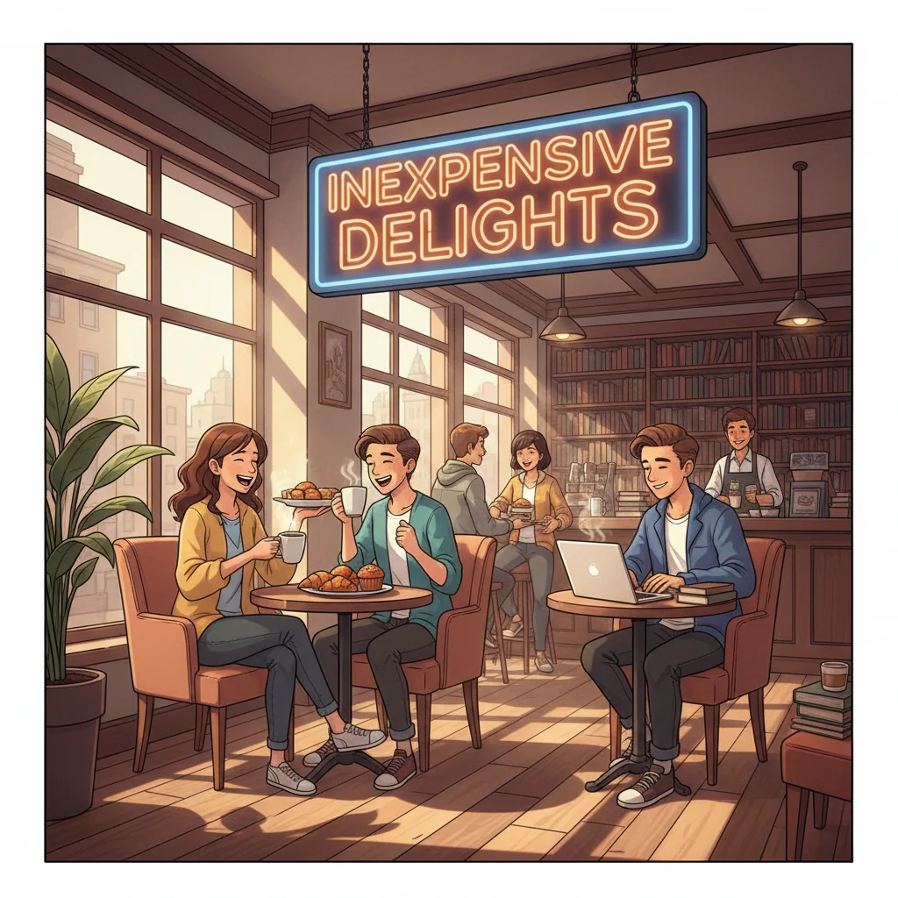
生活具象例句：We found an inexpensive yet delicious brunch spot hidden inside the charming old bookstore.
我們在迷人的舊書店裡發現了一家價格親民又美味的早午餐店。
檢視 1:1 發光看板概念插畫 Prompt
Stylized high-detail digital concept art illustration of 'inexpensive'. A cozy, sun-drenched bookstore cafe corner with students enjoying affordable coffee and pastries. In the prominent view or overhead, an illuminated glowing sign, neon board, digital terminal, or storefront plaque clearly displays 'INEXPENSIVE DELIGHTS'. Characters in modern stylish attire engaging in joyful, relatable actions. Sunlit glass windows, warm ambient lighting, beautiful color harmony. Crisp linework, vibrant daylight lighting, clean cel-shading with smooth reflections, rich architectural perspective, exact stylized concept art aesthetic, 1:1 square composition.
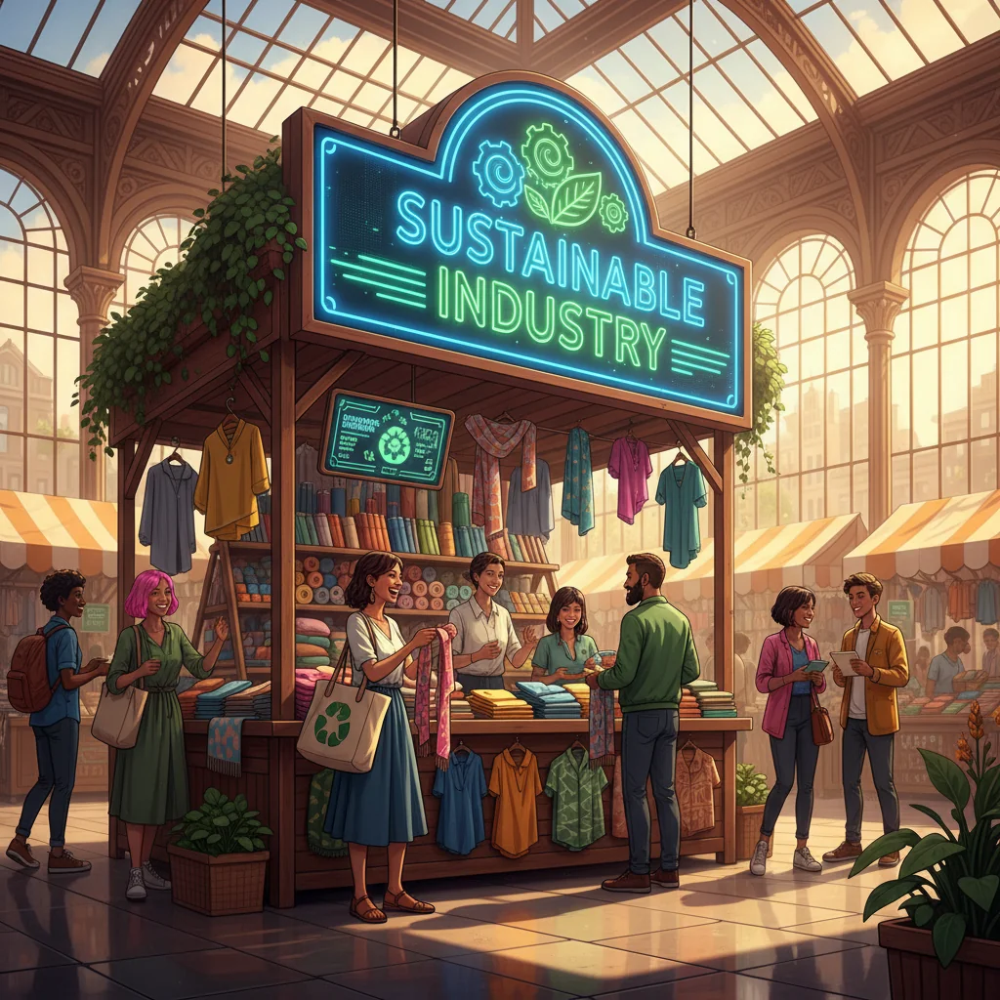
生活具象例句：The local sustainable fashion industry showcases handmade textiles at the vibrant weekend farmers market.
當地永續時尚產業在充滿活力的週末農夫市集展示手工紡織品。
檢視 1:1 發光看板概念插畫 Prompt
Stylized high-detail digital concept art illustration of 'industry'. A bustling farmers market stall displaying colorful organic fabrics and eco-friendly clothing. In the prominent view or overhead, an illuminated glowing sign, neon board, digital terminal, or storefront plaque clearly displays 'SUSTAINABLE INDUSTRY'. Characters in modern stylish attire engaging in joyful, relatable actions. Sunlit glass windows, warm ambient lighting, beautiful color harmony. Crisp linework, vibrant daylight lighting, clean cel-shading with smooth reflections, rich architectural perspective, exact stylized concept art aesthetic, 1:1 square composition.
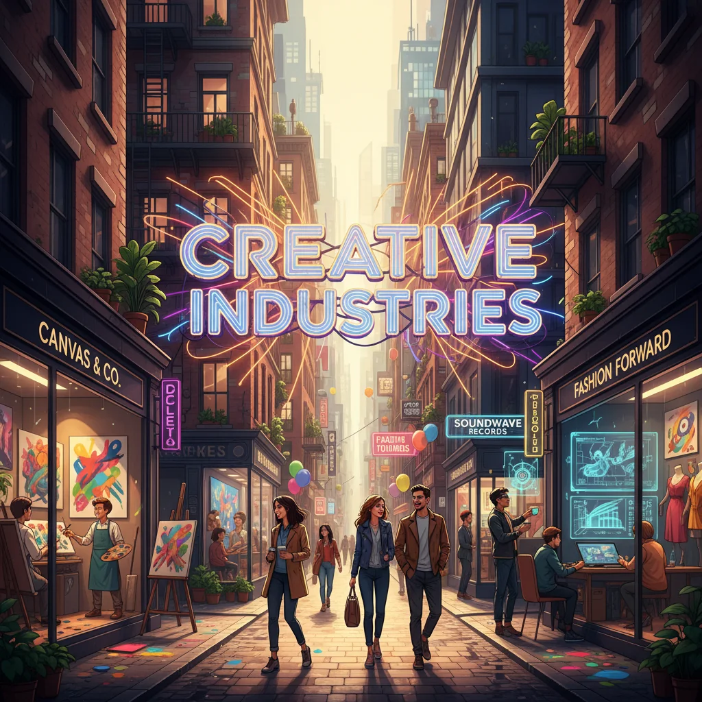
生活具象例句：Creative industries thrive in this sunny district filled with colorful studios and bustling cafes.
創意產業在這個充滿色彩工作室與繁忙咖啡館的陽光街區中蓬勃發展。
檢視 1:1 發光看板概念插畫 Prompt
Stylized high-detail digital concept art illustration of 'industries'. A vibrant neighborhood street featuring various creative studio storefronts with artists painting and designing. In the prominent view or overhead, an illuminated glowing sign, neon board, digital terminal, or storefront plaque clearly displays 'CREATIVE INDUSTRIES'. Characters in modern stylish attire engaging in joyful, relatable actions. Sunlit glass windows, warm ambient lighting, beautiful color harmony. Crisp linework, vibrant daylight lighting, clean cel-shading with smooth reflections, rich architectural perspective, exact stylized concept art aesthetic, 1:1 square composition.
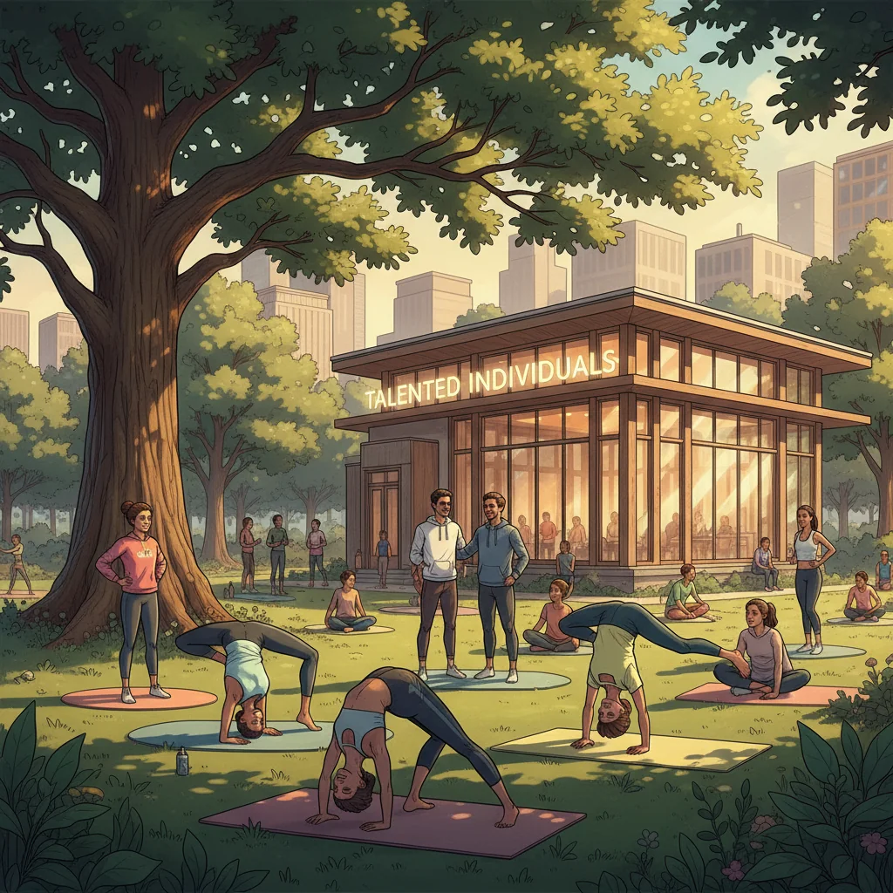
生活具象例句：These talented individuals gather at the park every weekend to practice their amazing acrobatics.
這些才華洋溢的個人每週末都會聚集在公園，練習他們驚人的特技表演。
檢視 1:1 發光看板概念插畫 Prompt
Stylized high-detail digital concept art illustration of 'individuals'. A lush green city park with people practicing yoga and acrobatics on mats. In the prominent view, an illuminated glowing sign on a park pavilion clearly displays 'TALENTED INDIVIDUALS'. Friends in modern athletic wear are laughing and stretching together under the trees. Sunlit glass windows of a nearby pavilion, warm ambient lighting, beautiful color harmony. Crisp linework, vibrant daylight lighting, clean cel-shading with smooth reflections, rich architectural perspective, exact stylized concept art aesthetic, 1:1 square composition.
例句：Each individual piece of pottery showcases the unique creative style of the talented artist.
每一件獨立的陶藝作品都展現了這位天才藝術家獨特的創作風格。
檢視 1:1 發光看板概念插畫 Prompt
Stylized high-detail digital concept art illustration of 'individual'. An airy, sunlit pottery studio filled with shelves of handmade ceramic bowls and vases. In the prominent view, an illuminated storefront plaque clearly displays 'INDIVIDUAL ARTISTRY'. An artist in artistic linen clothing is shaping clay on a wheel with a peaceful smile. Sunlit glass windows, warm ambient lighting, beautiful color harmony. Crisp linework, vibrant daylight lighting, clean cel-shading with smooth reflections, rich architectural perspective, exact stylized concept art aesthetic, 1:1 square composition.
例句：The steam rising from his mug indicates that the fresh coffee is perfectly hot.
杯中升起的熱氣顯示這杯新鮮咖啡正處於完美的熱度。
檢視 1:1 發光看板概念插畫 Prompt
Stylized high-detail digital concept art illustration of 'indicates'. A cozy, sunlit artisan coffee shop interior with minimalist wooden furniture. In the prominent view, an illuminated digital terminal on the counter clearly displays 'INDICATES TEMPERATURE'. A barista in a stylish apron smilingly serves a steaming cup to a happy customer. Sunlit glass windows, warm ambient lighting, beautiful color harmony. Crisp linework, vibrant daylight lighting, clean cel-shading with smooth reflections, rich architectural perspective, exact stylized concept art aesthetic, 1:1 square composition.
例句：The bright yellow road signs clearly indicate the path to the hidden seaside harbor.
鮮黃色的路標清楚地指示了通往那座隱蔽海港的路徑。
檢視 1:1 發光看板概念插畫 Prompt
Stylized high-detail digital concept art illustration of 'indicate'. A sun-drenched coastal path leading to a picturesque harbor with sailboats. In the prominent view, an illuminated neon board clearly displays 'INDICATE THE WAY'. Two young travelers in trendy hiking gear look at a map and point towards the ocean. Sunlit glass windows of a nearby cafe, warm ambient lighting, beautiful color harmony. Crisp linework, vibrant daylight lighting, clean cel-shading with smooth reflections, rich architectural perspective, exact stylized concept art aesthetic, 1:1 square composition.
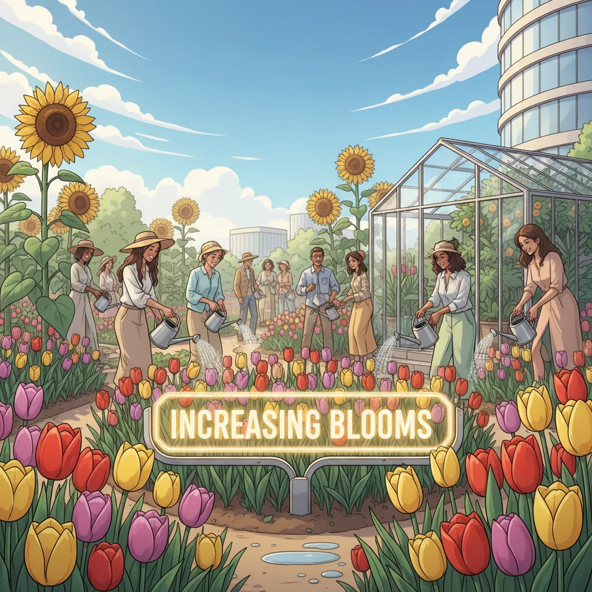
生活具象例句：The increasing number of flowers in our community garden brings joy to everyone daily.
社區花園裡不斷增加的花朵，每天都為大家帶來了無比的喜悅。
檢視 1:1 發光看板概念插畫 Prompt
Stylized high-detail digital concept art illustration of 'increasing'. A vibrant community garden filled with blooming tulips and sunflowers under a bright sky. In the prominent view, an illuminated glowing sign clearly displays 'INCREASING BLOOMS'. Happy residents in casual, stylish spring attire are watering plants together. Sunlit glass greenhouse nearby, warm ambient lighting, beautiful color harmony. Crisp linework, vibrant daylight lighting, clean cel-shading with smooth reflections, rich architectural perspective, exact stylized concept art aesthetic, 1:1 square composition.
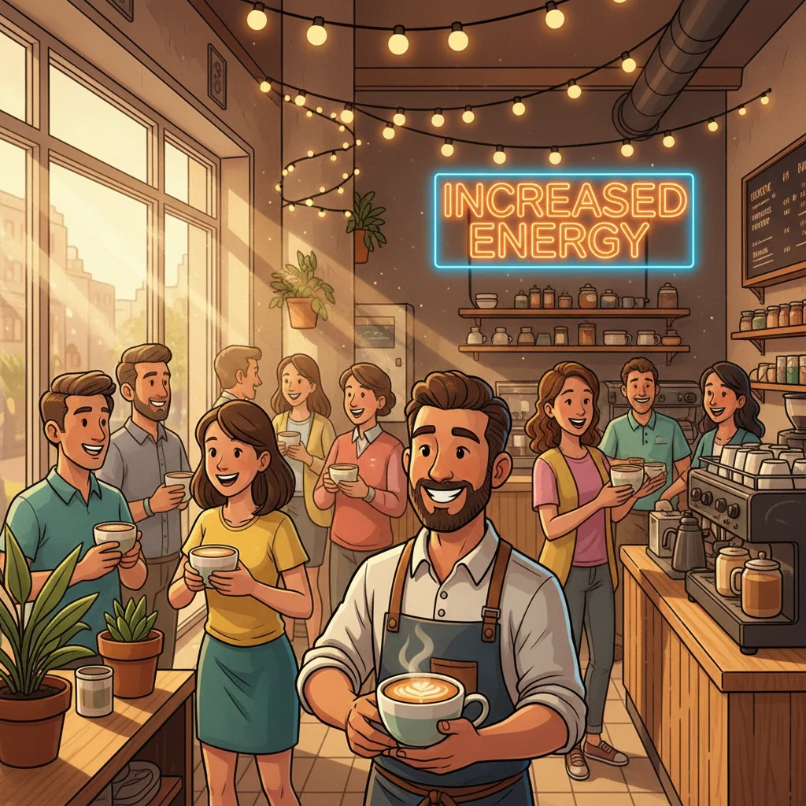
生活具象例句：We noticed increased foot traffic at our local coffee shop after the new renovation.
我們注意到重新裝修後，當地咖啡館的人流量增加了。
檢視 1:1 發光看板概念插畫 Prompt
Stylized high-detail digital concept art illustration of 'increased'. A vibrant, renovated coffee shop filled with happy customers enjoying artisan drinks. A neon board displays 'INCREASED ENERGY'. A barista smiling while serving coffee in a stylish modern space. Sunlit glass windows, warm ambient lighting, beautiful color harmony, crisp linework, vibrant daylight, clean cel-shading, 1:1 square composition.
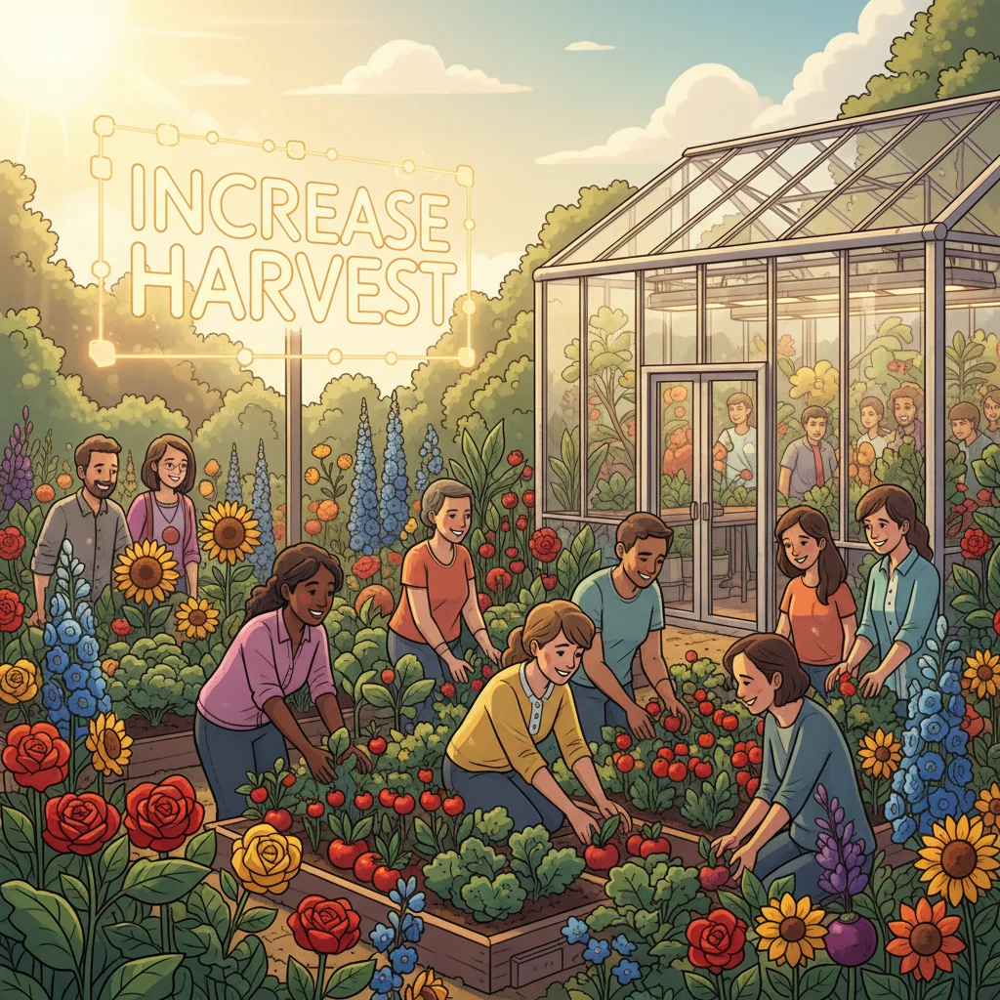
生活具象例句：The community garden team plans to increase the variety of vegetables grown this spring.
社區園藝小組計劃在今年春天增加種植蔬菜的種類。
檢視 1:1 發光看板概念插畫 Prompt
Stylized high-detail digital concept art illustration of 'increase'. A bustling community garden with people planting colorful flowers and lush vegetables. A glowing sign displays 'INCREASE HARVEST'. Enthusiastic neighbors work together in the sun. Sunlit glass windows of a modern greenhouse, warm ambient lighting, beautiful color harmony, crisp linework, vibrant daylight, clean cel-shading, 1:1 square composition.
例句：She realized the map was incorrect while hiking the beautiful mountain trail with friends.
她在和朋友徒步美麗山徑時，發現地圖標示是不正確的。
檢視 1:1 發光看板概念插畫 Prompt
Stylized high-detail digital concept art illustration of 'incorrect'. Two hikers standing on a sunny mountain trail looking at a digital tablet with a map. An illuminated neon board nearby displays 'INCORRECT PATH'. They are laughing at their adventurous mistake. Sunlit glass windows of a distant lodge, warm ambient lighting, beautiful color harmony, crisp linework, vibrant daylight, clean cel-shading, 1:1 square composition.
例句：The sudden rain delay caused a slight inconvenience during our outdoor weekend picnic trip.
突如其來的雨勢造成我們週末戶外野餐旅行的一點不便。
檢視 1:1 發光看板概念插畫 Prompt
Stylized high-detail digital concept art illustration of 'inconvenience'. A cozy city park with people laughing while huddled under colorful umbrellas during a light drizzle. A digital terminal nearby displays 'NO INCONVENIENCE'. Stylish friends smiling despite the rain, holding sandwiches and coffee. Sunlit glass windows of a nearby cafe, warm ambient lighting, beautiful color harmony, crisp linework, vibrant daylight, clean cel-shading, 1:1 square composition.
例句：The young baker uses her extra monthly income to buy rare botanical plant seeds.
這位年輕的麵包師用額外的月收入購買稀有的植物種子。
檢視 1:1 發光看板概念插畫 Prompt
Stylized high-detail digital concept art illustration of 'income'. A vibrant botanical bakery filled with lush hanging plants and golden light. In the prominent view, a glowing storefront plaque displays 'STEADY INCOME'. A joyful baker counts her earnings near a tray of fresh sourdough. Sunlit glass windows, warm ambient lighting, beautiful color harmony, crisp linework, vibrant daylight, clean cel-shading, 1:1 square composition.
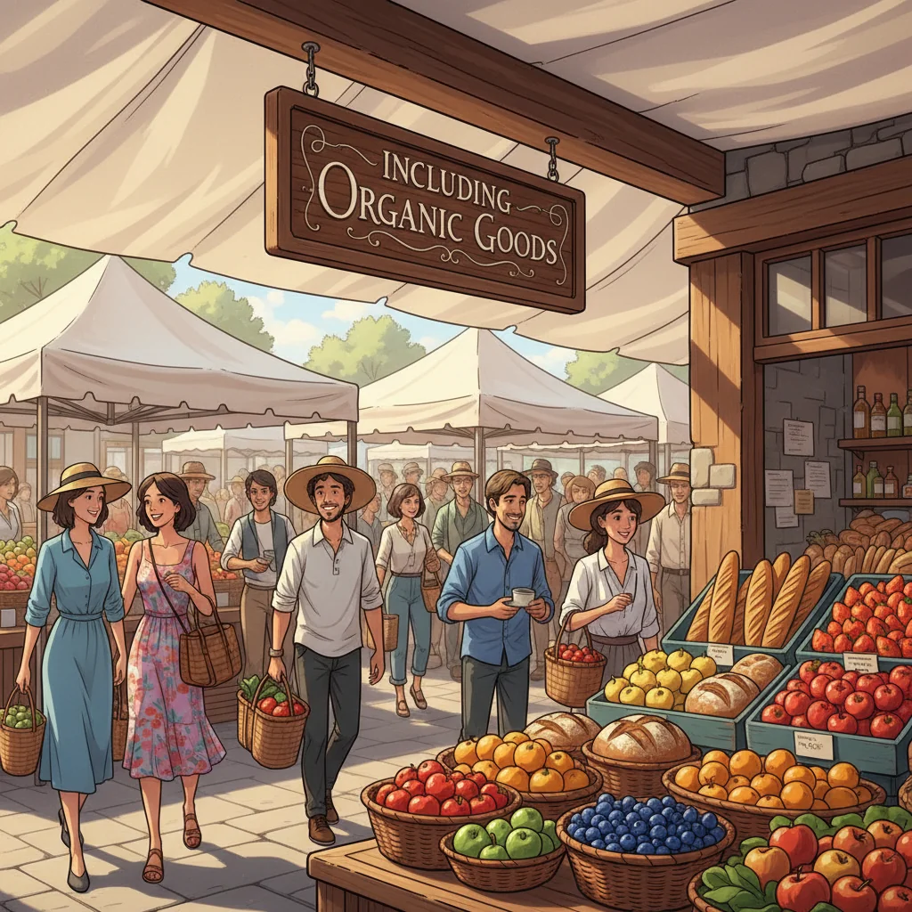
生活具象例句：The farmers market sells many organic goods, including fresh berries and handmade sourdough bread.
農夫市集販售許多有機商品，包括新鮮莓果和手工酸種麵包。
檢視 1:1 發光看板概念插畫 Prompt
Stylized high-detail digital concept art illustration of 'including'. A bustling outdoor farmers market with vendors displaying colorful fruits and artisanal bread. A hanging wooden storefront plaque clearly displays 'INCLUDING ORGANIC GOODS'. Sunlight filtering through white canvas tents, happy shoppers in stylish casual clothes. Crisp linework, vibrant daylight, clean cel-shading with smooth reflections, rich architectural perspective, exact stylized concept art aesthetic, 1:1 square composition.
例句：Our weekend fitness membership includes unlimited access to the yoga studio and sauna rooms.
我們的週末健身會籍包含瑜伽教室與三溫暖室的無限次使用權。
檢視 1:1 發光看板概念插畫 Prompt
Stylized high-detail digital concept art illustration of 'includes'. A vibrant fitness gym scene with people stretching and laughing in a sunlit, modern studio. A glowing sign on the wall clearly displays 'MEMBERSHIP INCLUDES YOGA'. Warm ambient lighting, lush greenery indoors, beautiful color harmony. Crisp linework, vibrant daylight, clean cel-shading with smooth reflections, rich architectural perspective, exact stylized concept art aesthetic, 1:1 square composition.
例句：The museum ticket price has included a guided tour of the famous art gallery.
博物館門票費用已包含著名美術館的導覽服務。
檢視 1:1 發光看板概念插畫 Prompt
Stylized high-detail digital concept art illustration of 'included'. A group of friends smiling at a museum entrance as they receive their tour badges. Near the ticket booth, an illuminated storefront plaque clearly displays 'TOUR INCLUDED'. Modern architecture with high glass ceilings and bright, airy spaces. Crisp linework, vibrant daylight, clean cel-shading with smooth reflections, rich architectural perspective, exact stylized concept art aesthetic, 1:1 square composition.
例句：Be sure to include fresh basil leaves when you toss the pasta in cooking.
在烹飪攪拌義大利麵時，一定要記得加入新鮮羅勒葉。
檢視 1:1 發光看板概念插畫 Prompt
Stylized high-detail digital concept art illustration of 'include'. A cheerful chef in a bright, modern open kitchen adding fresh herbs to a colorful pasta dish. Above the stove, a sleek digital terminal display clearly reads 'INCLUDE FRESH HERBS'. Sunlit glass windows showing a lush garden, warm ambient lighting, beautiful color harmony. Crisp linework, vibrant daylight, clean cel-shading with smooth reflections, rich architectural perspective, exact stylized concept art aesthetic, 1:1 square composition.
例句：She checked her inbox while sipping a latte at the quiet corner bookstore cafe.
她在安靜的書店咖啡館一邊啜飲拿鐵，一邊查看電子郵件收件匣。
檢視 1:1 發光看板概念插畫 Prompt
Stylized high-detail digital concept art illustration of 'inbox'. A young woman relaxing in a cozy, sunlit bookstore cafe with a tablet, a steaming latte on the table. In the prominent view, an illuminated neon sign clearly displays 'CHECK YOUR INBOX'. A warm, inviting atmosphere with wooden shelves and soft ambient lighting. Crisp linework, vibrant daylight, clean cel-shading with smooth reflections, rich architectural perspective, exact stylized concept art aesthetic, 1:1 square composition.
例句：The firm is looking to expand its market share by acquiring several foreign competitors.
該公司正尋求透過收購幾家外國競爭對手來擴大市場佔有率。
檢視 1:1 發光看板概念插畫 Prompt
例句：He is traveling to Singapore for business to negotiate a new partnership agreement.
他正為了商業目的前往新加坡，以協商一份新的合作協議。
檢視 1:1 發光看板概念插畫 Prompt
例句：The presentation was followed by a productive Q&A session where stakeholders discussed the project timeline.
簡報結束後進行了一場富有成效的問答環節，利害關係人討論了專案時程。
檢視 1:1 發光看板概念插畫 Prompt
例句：The sales representative sent a follow-up email to the prospect to confirm the meeting details.
業務代表寄了一封後續跟進郵件給潛在客戶，以確認會議細節。
檢視 1:1 發光看板概念插畫 Prompt
例句：Please organize all the project invoices into the blue folder before the audit begins tomorrow morning.
請在明天早上審計開始前，將所有專案發票整理到藍色資料夾中。
檢視 1:1 發光看板概念插畫 Prompt
例句：The business traveler missed his flight due to heavy traffic on the way to the airport.
那位商務旅客因為前往機場的路上交通擁堵而錯過了航班。
檢視 1:1 發光看板概念插畫 Prompt
例句：Our company offers a flexible work schedule to help employees maintain a better work-life balance.
我們公司提供彈性的工作時間，以幫助員工維持更好的工作與生活平衡。
檢視 1:1 發光看板概念插畫 Prompt
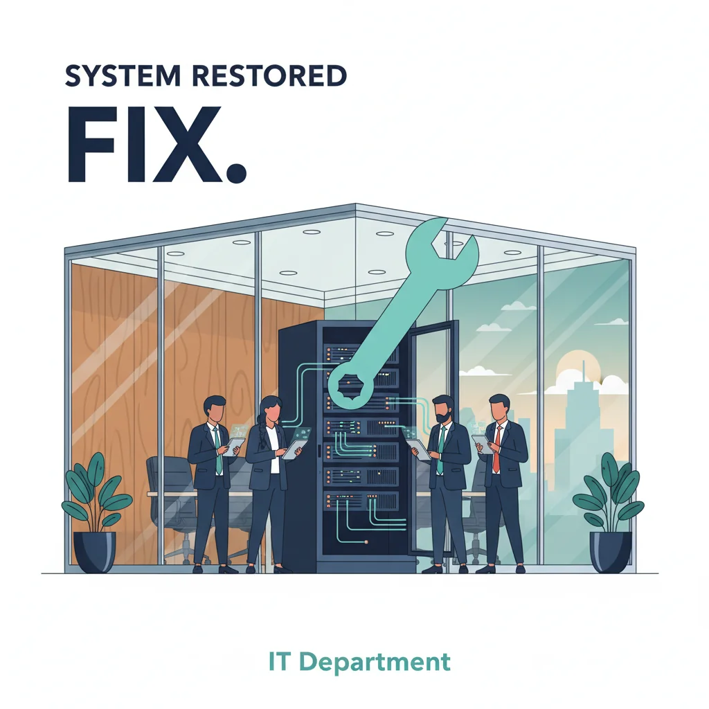
科技與技術支援例句：The IT department is working to fix the server issue that caused the network outage this morning.
資訊部門正在努力修復導致今天早上網路中斷的伺服器問題。
檢視 1:1 發光看板概念插畫 Prompt
例句：Please submit your final report by the end of the business day for the manager's review.
請在下班前提交您的最終報告，以供經理審閱。
檢視 1:1 發光看板概念插畫 Prompt
例句：Make sure to file the tax documents before the deadline to avoid any penalties.
請務必在截止日期前歸檔稅務文件，以避免任何罰款。
檢視 1:1 發光看板概念插畫 Prompt
例句：Please do not disturb the printer while it is in use, as it may cause a paper jam.
印表機正在使用中時請勿干擾，以免造成卡紙。
檢視 1:1 發光看板概念插畫 Prompt
例句：The project budget, in total, amounts to five hundred thousand dollars including all operational expenses.
該專案預算總計為五十萬美元，包含所有營運費用。
檢視 1:1 發光看板概念插畫 Prompt
例句：In the past, the company relied solely on traditional advertising, but now it focuses primarily on digital marketing.
在過去，公司完全依賴傳統廣告，但現在主要專注於數位行銷。
檢視 1:1 發光看板概念插畫 Prompt
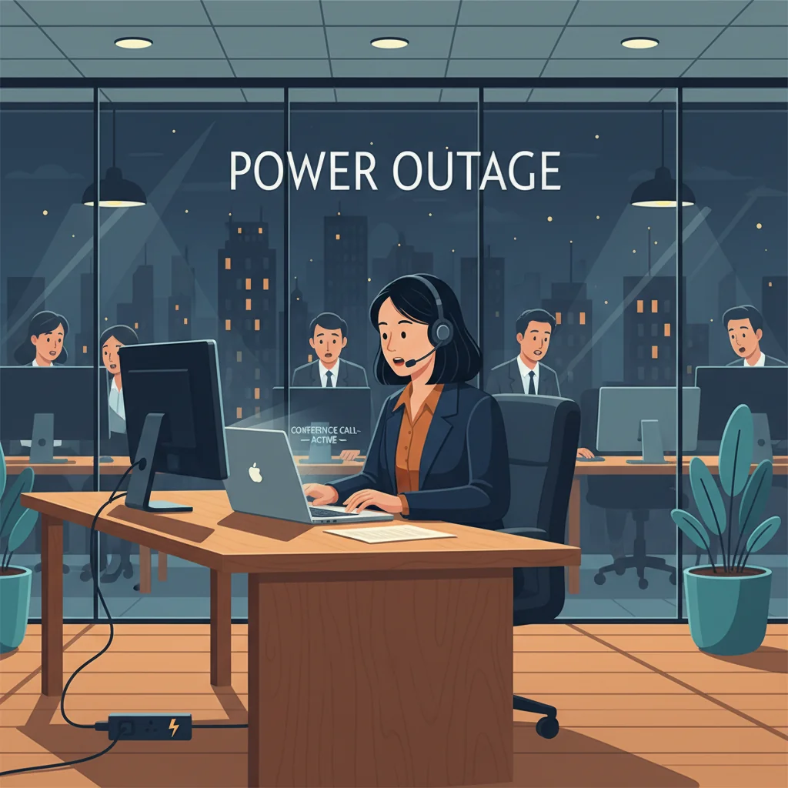
辦公日常例句：The manager was in the middle of a conference call when the power outage occurred.
經理在停電發生時，正處於電話會議中。
檢視 1:1 發光看板概念插畫 Prompt
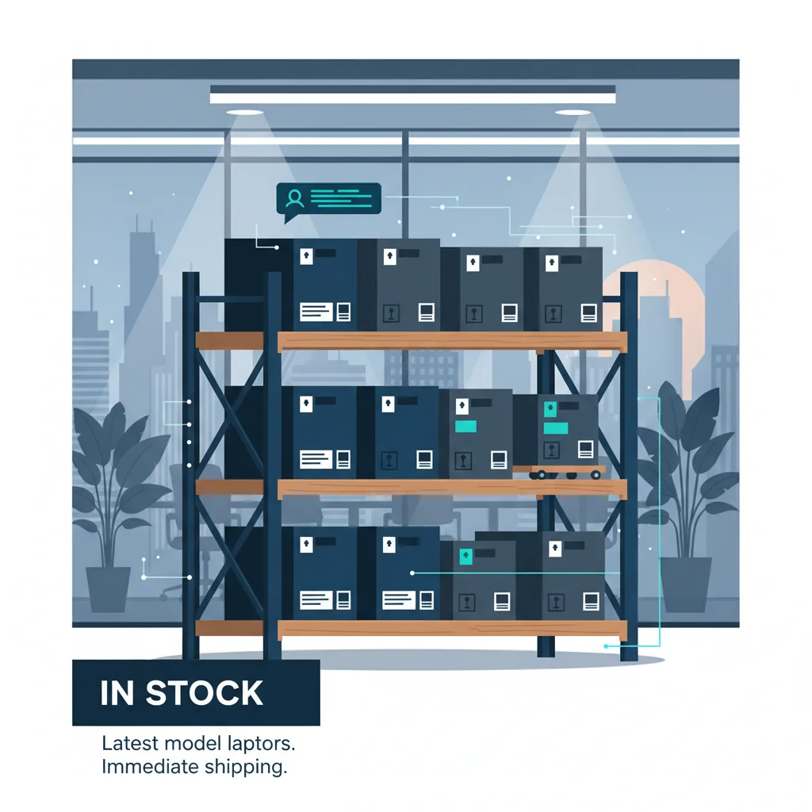
採購與物流例句：We currently have the latest model of the laptop in stock and can ship it immediately upon receipt of payment.
我們目前有最新款筆記型電腦的現貨，收到付款後即可立即出貨。
檢視 1:1 發光看板概念插畫 Prompt
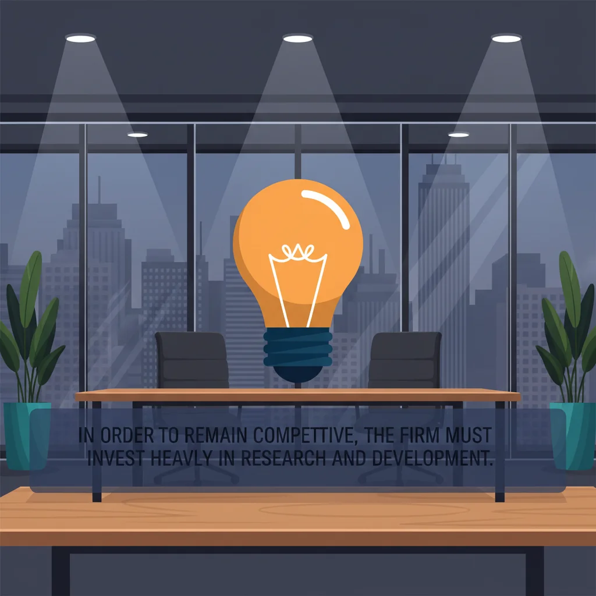
辦公日常例句：In order to remain competitive, the firm must invest heavily in research and development.
為了保持競爭力，該公司必須在研發方面投入大量資金。
檢視 1:1 發光看板概念插畫 Prompt
例句：Ms. Tanaka is currently in charge of the regional expansion project and reports directly to the vice president.
田中小姐目前負責區域擴張專案，並直接向副總裁報告。
檢視 1:1 發光看板概念插畫 Prompt
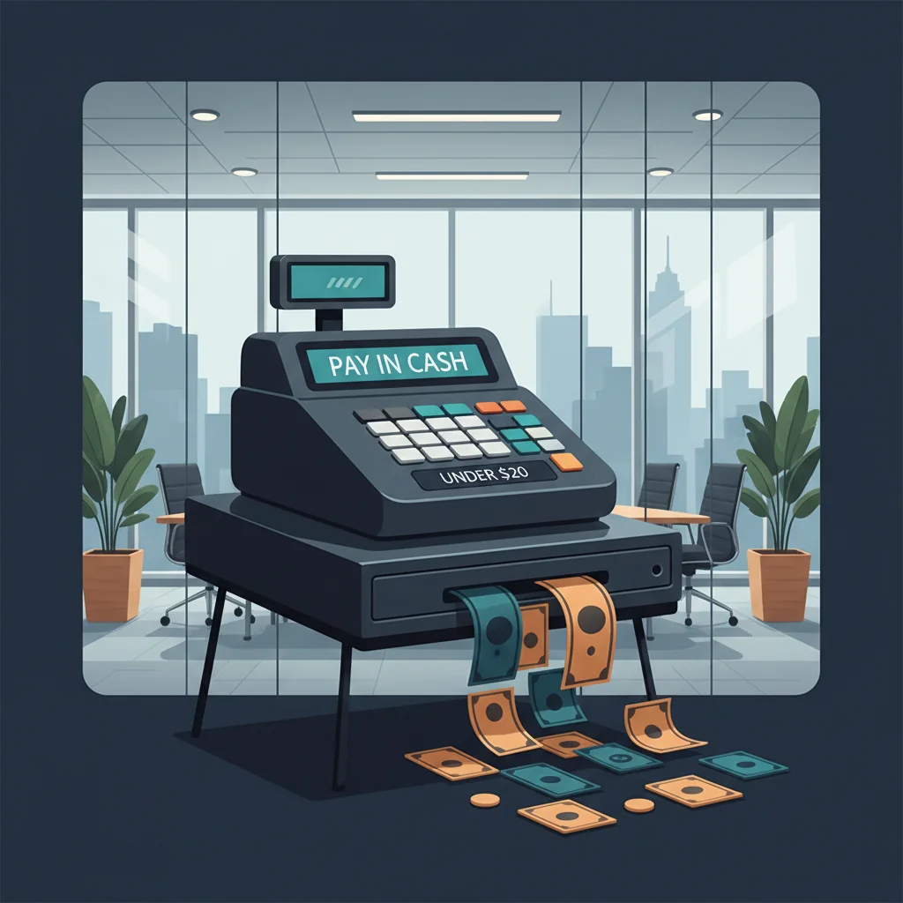
金融與會計例句：The small retail shop prefers customers to pay in cash for transactions under twenty dollars.
這家小型零售店偏好顧客在二十美元以下的交易以現金支付。
檢視 1:1 發光看板概念插畫 Prompt
例句：Please confirm your attendance for the annual conference in advance so we can finalize the catering arrangements.
請提前確認您是否參加年度會議，以便我們敲定餐飲安排。
檢視 1:1 發光看板概念插畫 Prompt
例句：In addition to the base salary, the company offers a comprehensive benefits package including health insurance and stock options.
除了基本薪資外，公司還提供包含健康保險和股票選擇權在內的全面福利方案。
檢視 1:1 發光看板概念插畫 Prompt
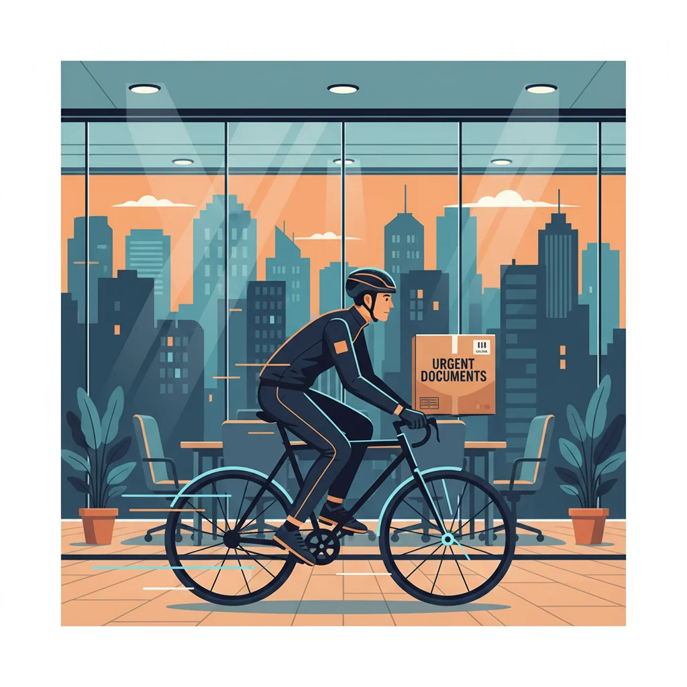
辦公日常例句：The courier was in a hurry to deliver the urgent documents before the post office closed for the day.
快遞員趕時間要在郵局當天關門前送達緊急文件。
檢視 1:1 發光看板概念插畫 Prompt
例句：The company is committed to improving its sustainability practices by reducing carbon emissions in its logistics chain.
公司致力於透過減少物流鏈中的碳排放來改善其永續發展實踐。
檢視 1:1 發光看板概念插畫 Prompt
例句：Regular training not only improves employee skills but also boosts morale across the entire department.
定期培訓不僅能提升員工技能，還能提振整個部門的士氣。
檢視 1:1 發光看板概念插畫 Prompt
例句：The facility manager suggested several improvements to the building's security system to ensure employee safety.
設施經理針對大樓的安全系統提出了幾項改進建議，以確保員工安全。
檢視 1:1 發光看板概念插畫 Prompt
例句：There has been a noticeable improvement in overall productivity since the office moved to a hybrid work model.
自從辦公室改為混合辦公模式以來，整體生產力有了顯著的改善。
檢視 1:1 發光看板概念插畫 Prompt
例句：The improved software interface has significantly reduced the time required for employees to complete their daily tasks.
經過改良的軟體介面顯著減少了員工完成日常工作所需的時間。
檢視 1:1 發光看板概念插畫 Prompt
例句：We are implementing a new feedback system to improve the efficiency of our customer service operations.
我們正在實施一套新的回饋系統，以提升客戶服務營運的效率。
檢視 1:1 發光看板概念插畫 Prompt
例句：Meeting the deadline seems impossible given the current staffing shortages in the production department.
鑑於生產部門目前的人力短缺，要在期限內完成任務似乎是不可能的。
檢視 1:1 發光看板概念插畫 Prompt
例句：It is important to review the contract terms thoroughly before signing any binding agreements with new vendors.
在與新供應商簽署任何具約束力的協議之前，徹底審閱合約條款是非常重要的。
檢視 1:1 發光看板概念插畫 Prompt
例句：The CEO emphasized the importance of maintaining strong relationships with our key stakeholders during the quarterly meeting.
執行長在季度會議中強調了與關鍵利害關係人維持穩固關係的重要性。
檢視 1:1 發光看板概念插畫 Prompt
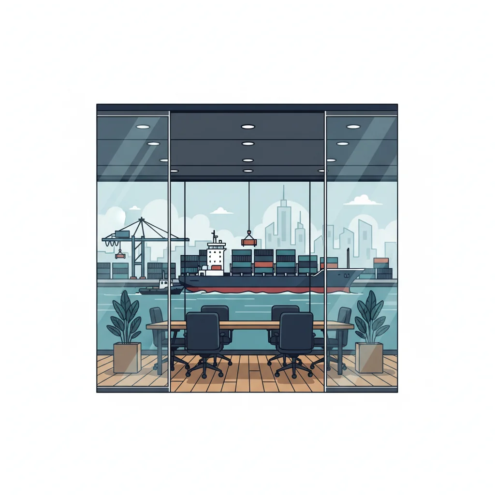
採購與物流例句：The company plans to import high-grade raw materials from overseas to maintain the quality of its manufacturing process.
公司計畫從海外進口高等級原料，以維持其製造流程的品質。
檢視 1:1 發光看板概念插畫 Prompt
例句：Please notify the IT department immediately if you encounter any connectivity issues with the new server.
如果您在連接新伺服器時遇到任何問題，請立即通知資訊部門。
檢視 1:1 發光看板概念插畫 Prompt
例句：It is difficult to imagine how the industry will evolve over the next decade without significant investment in artificial intelligence.
很難想像如果沒有對人工智慧進行重大投資，該產業在未來十年將會如何演變。
檢視 1:1 發光看板概念插畫 Prompt
例句：The marketing team uploaded high-quality images of the new product line to the cloud server for the upcoming campaign.
行銷團隊將新產品線的高品質影像上傳至雲端伺服器，以準備即將到來的宣傳活動。
檢視 1:1 發光看板概念插畫 Prompt
例句：The graphic designer adjusted the resolution of the company logo image to ensure it looks sharp on the new website.
平面設計師調整了公司標誌影像的解析度，以確保它在新網站上看起來清晰銳利。
檢視 1:1 發光看板概念插畫 Prompt
例句：The brainstorming session generated several innovative ideas for the upcoming product launch.
腦力激盪會議為即將到來的產品發表會產生了幾個創新構想。
檢視 1:1 發光看板概念插畫 Prompt
例句：The CEO liked the idea of implementing a flexible work schedule to improve employee morale.
執行長很喜歡實施彈性工作時間以提升員工士氣的想法。
檢視 1:1 發光看板概念插畫 Prompt
例句：The catering service provided a large container of ice to keep the beverages cold during the outdoor event.
餐飲服務提供了一個大冰桶，以在戶外活動期間保持飲料冰涼。
檢視 1:1 發光看板概念插畫 Prompt
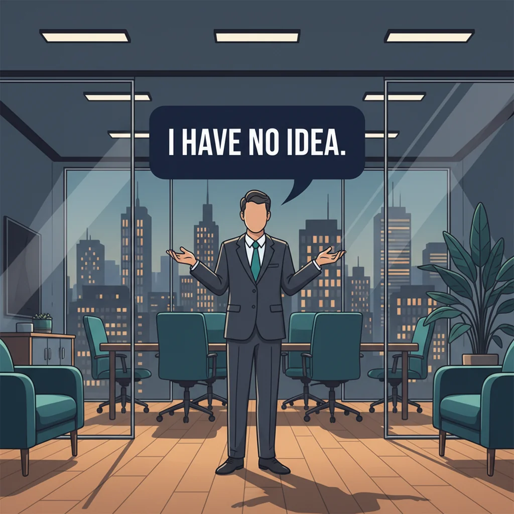
溝通互動例句：When asked about the merger details, the manager replied, 'I have no idea,' as the information is still confidential.
當被問及合併細節時，經理回答：「我完全不知道」，因為該資訊目前仍屬機密。
檢視 1:1 發光看板概念插畫 Prompt
例句：The sudden supply chain disruption could hurt our ability to meet the delivery deadlines.
突如其來的供應鏈中斷可能會損害我們達成交貨期限的能力。
檢視 1:1 發光看板概念插畫 Prompt
例句：There is no need to hurry the production process; quality assurance remains our top priority.
無需催促生產流程；品質保證仍是我們的首要任務。
檢視 1:1 發光看板概念插畫 Prompt
例句：The startup is hungry for growth and is actively seeking new partnerships in the Asian market.
這家新創公司渴望成長，並正積極在亞洲市場尋求新的合作夥伴。
檢視 1:1 發光看板概念插畫 Prompt
例句：Hundreds of resumes were submitted for the internship program within the first week of posting.
實習計畫公告後的第一週內，就收到了數百份履歷。
檢視 1:1 發光看板概念插畫 Prompt
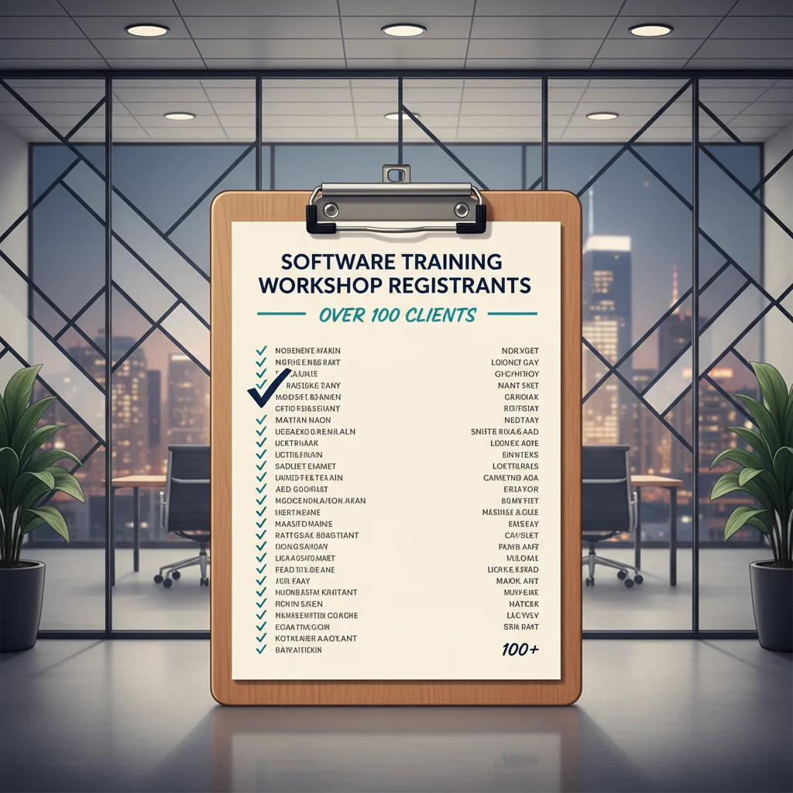
一般專業例句：We have over one hundred clients registered for the upcoming software training workshop.
我們有超過一百位客戶報名參加即將到來的軟體培訓研討會。
檢視 1:1 發光看板概念插畫 Prompt
例句：The software is designed to be intuitive for humans, requiring minimal training for new employees.
該軟體設計直觀，適合人類使用，新進員工僅需極少的培訓即可上手。
檢視 1:1 發光看板概念插畫 Prompt
例句：The human resources department is currently reviewing applications for the senior project manager position.
人力資源部門目前正在審核資深專案經理職位的申請。
檢視 1:1 發光看板概念插畫 Prompt
例句：We must ensure that our automated systems still allow for human oversight to maintain quality control.
我們必須確保自動化系統仍保留人工監督，以維持品質控管。
檢視 1:1 發光看板概念插畫 Prompt
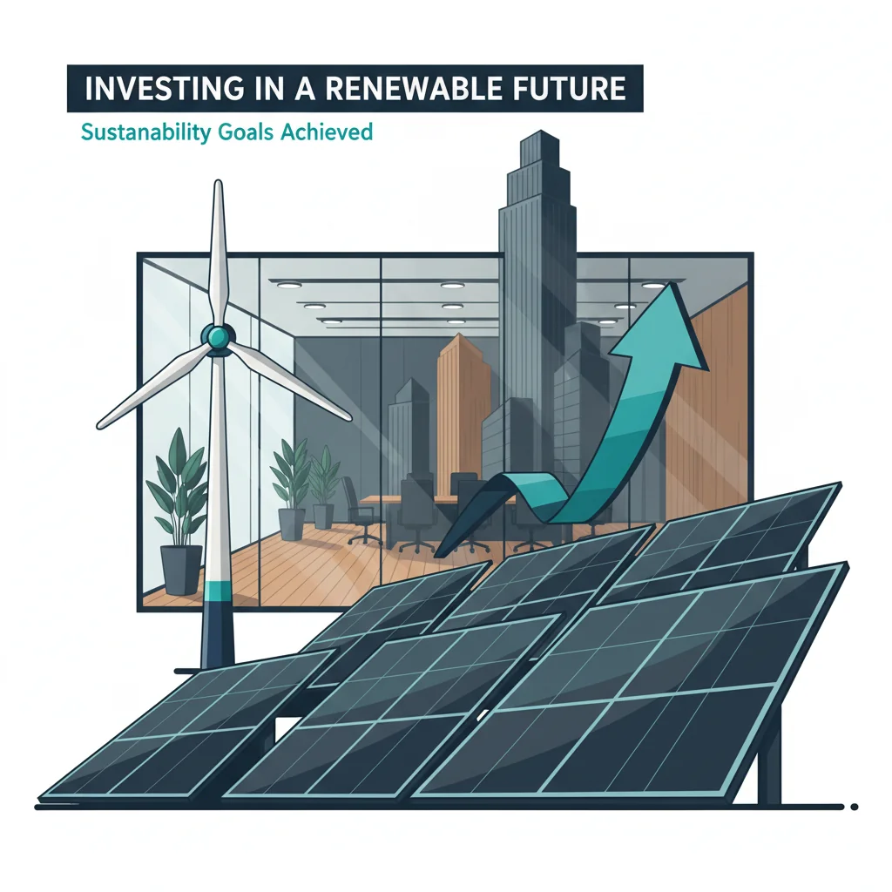
辦公日常例句：The company made a huge investment in renewable energy technology to meet its sustainability goals.
公司在再生能源技術上投入了巨額資金，以達成其永續發展目標。
檢視 1:1 發光看板概念插畫 Prompt
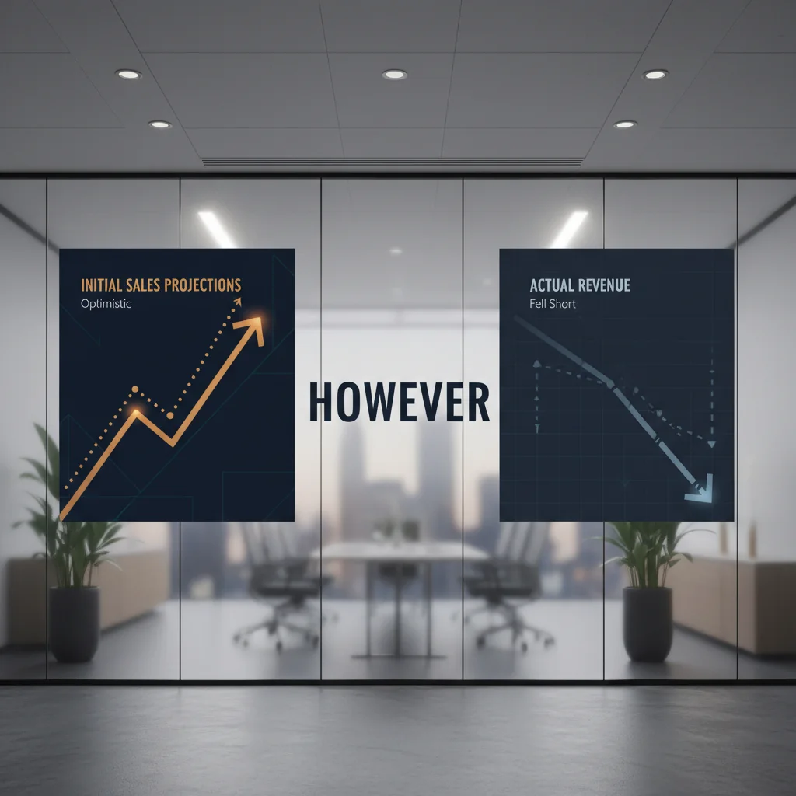
溝通互動例句：The initial sales projections were optimistic; however, the actual revenue fell short due to market fluctuations.
最初的銷售預測相當樂觀；然而，實際營收因市場波動而未達預期。
檢視 1:1 發光看板概念插畫 Prompt
例句：The consultant demonstrated how to optimize our supply chain efficiency to reduce operational costs.
顧問示範了如何優化我們的供應鏈效率以降低營運成本。
檢視 1:1 發光看板概念插畫 Prompt
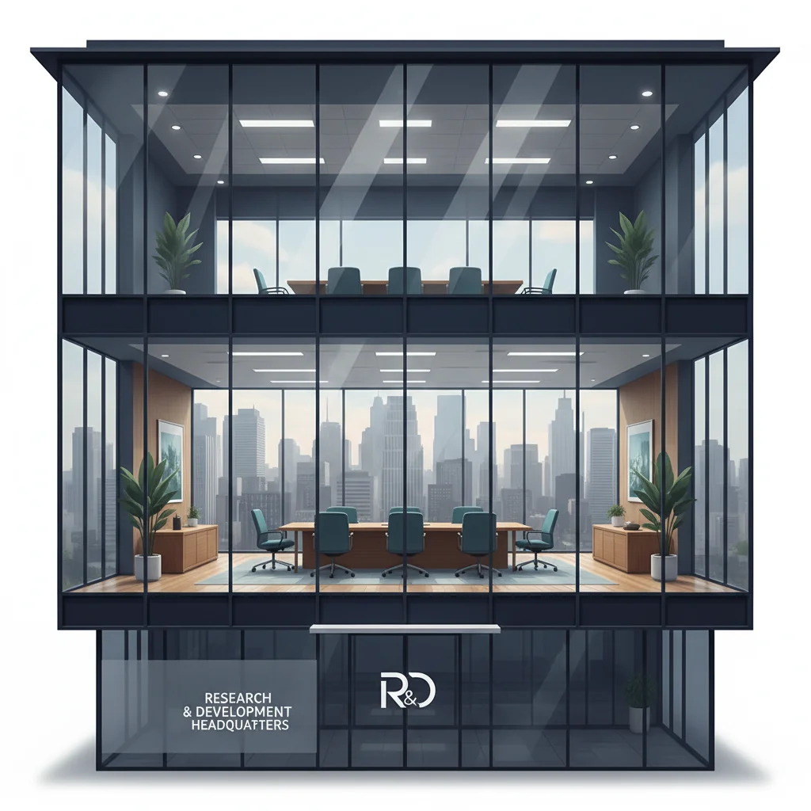
物業與不動產例句：The new corporate headquarters will house all our research and development departments under one roof.
新的公司總部將把我們所有的研發部門安置在同一個屋簷下。
檢視 1:1 發光看板概念插畫 Prompt
例句：Please ensure that your timesheets are submitted by the final hour of the business day on Friday.
請確保在週五營業時間結束前提交您的工時表。
檢視 1:1 發光看板概念插畫 Prompt
例句：The competition in the tech market is getting hotter as more startups introduce innovative software solutions.
隨著更多新創公司推出創新的軟體解決方案，科技市場的競爭正變得更加激烈。
檢視 1:1 發光看板概念插畫 Prompt
例句：Our travel agency specializes in booking luxury hotels for executive business trips.
我們的旅行社專門為高階主管商務差旅預訂豪華飯店。
檢視 1:1 發光看板概念插畫 Prompt
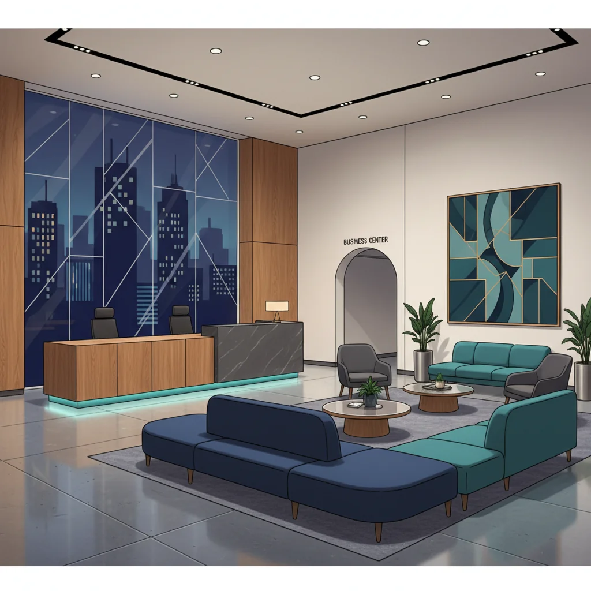
住宿與餐飲例句：The hotel offers premium amenities, including a business center and high-speed internet access for corporate travelers.
該飯店提供頂級設施，包括商務中心及供商務旅客使用的高速網路。
檢視 1:1 發光看板概念插畫 Prompt
例句：The new line of hot beverages has become a best-seller in our corporate cafeteria this winter.
這系列熱飲已成為我們公司餐廳今年冬天的暢銷商品。
檢視 1:1 發光看板概念插畫 Prompt
例句：The chamber of commerce will host an international trade conference at the convention center next month.
商會下個月將在會議中心主辦一場國際貿易會議。
檢視 1:1 發光看板概念插畫 Prompt
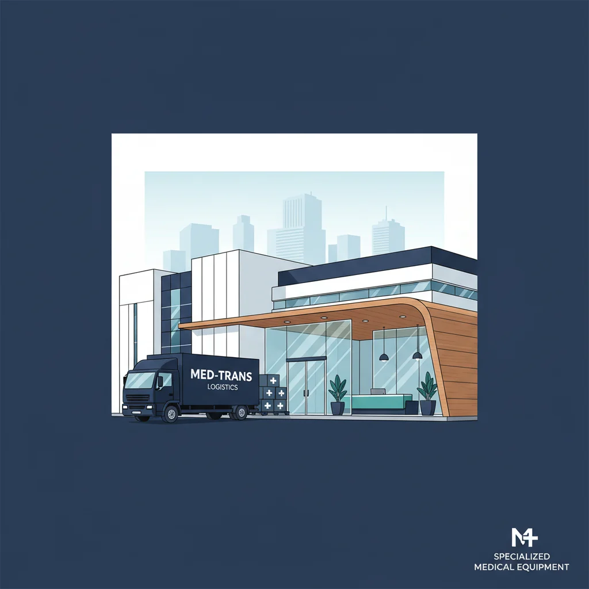
營運管理例句：Our medical supply division provides specialized equipment to major hospitals across the country.
我們的醫療用品部門為全國各大醫院提供專業設備。
檢視 1:1 發光看板概念插畫 Prompt
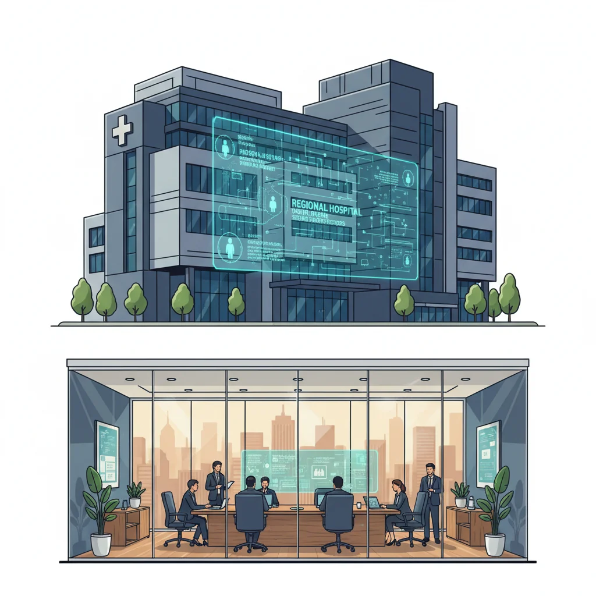
設備檢修例句：The regional hospital has contracted our firm to upgrade its digital patient record management system.
該區域醫院已與我們公司簽約，升級其數位病患紀錄管理系統。
檢視 1:1 發光看板概念插畫 Prompt
例句：The marketing team is hoping to finalize the campaign strategy before the end of the fiscal quarter.
行銷團隊正期望能在本財季結束前敲定活動策略。
檢視 1:1 發光看板概念插畫 Prompt
例句：The management team has high hopes that the new product launch will significantly increase our market share.
管理團隊對新產品發布寄予厚望，希望能顯著提升我們的市場佔有率。
檢視 1:1 發光看板概念插畫 Prompt
例句：We hope to establish a long-term partnership with your firm to explore new business opportunities in the region.
我們希望能與貴公司建立長期合作夥伴關係，以探索該地區的新商業機會。
檢視 1:1 發光看板概念插畫 Prompt
例句：Honestly, I believe the current marketing strategy needs a complete overhaul to reach our target audience effectively.
老實說，我認為目前的行銷策略需要徹底改革，才能有效地觸及我們的目標受眾。
檢視 1:1 發光看板概念插畫 Prompt
例句：Before the meeting, the consultant did his homework by thoroughly researching the client's market competitors.
在會議前，顧問做了充分的準備工作，深入研究了客戶的市場競爭對手。
檢視 1:1 發光看板概念插畫 Prompt
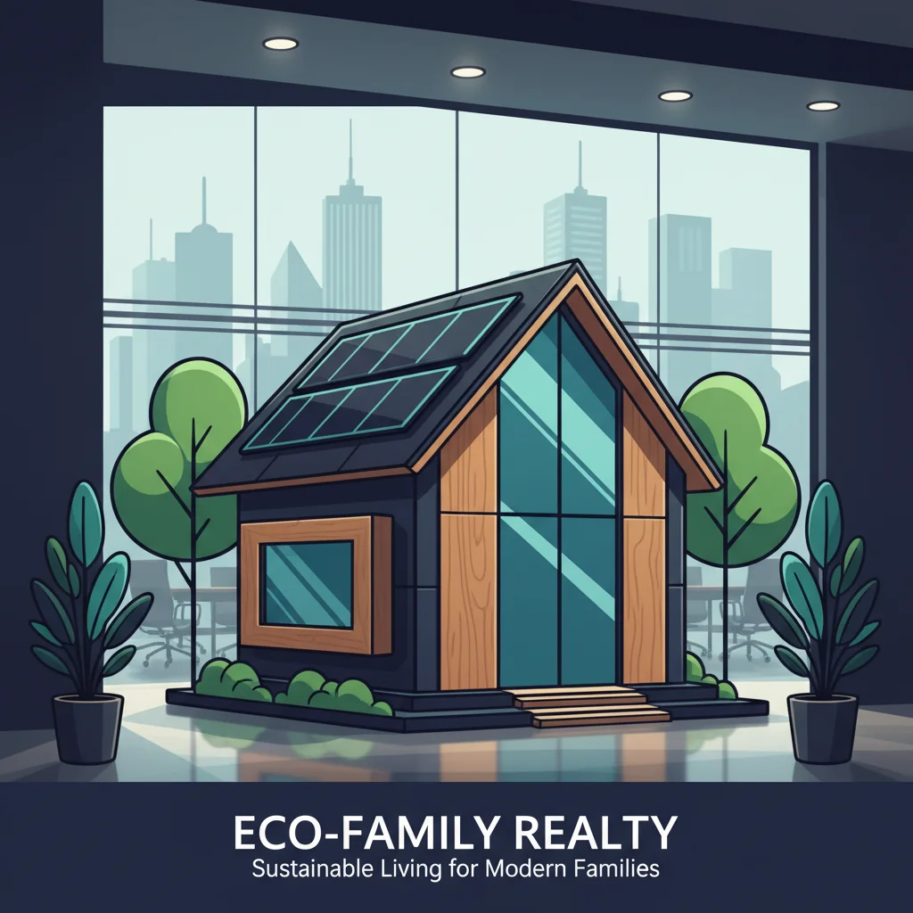
物業與不動產例句：Our real estate agency specializes in developing sustainable and energy-efficient homes for modern families.
我們的房地產代理公司專門為現代家庭開發永續且節能的住宅。
檢視 1:1 發光看板概念插畫 Prompt
例句：With the new flexible work policy, many staff members prefer to work from home two days a week.
隨著新的彈性工作政策，許多員工傾向於每週在家工作兩天。
檢視 1:1 發光看板概念插畫 Prompt
例句：Employees are encouraged to submit their requests for summer holidays at least one month in advance.
鼓勵員工至少提前一個月提交暑假休假申請。
檢視 1:1 發光看板概念插畫 Prompt
例句：The office will be closed for the upcoming public holiday, so please ensure all urgent tasks are completed by Friday.
辦公室將於即將到來的公眾假期關閉，因此請確保所有緊急任務在週五前完成。
檢視 1:1 發光看板概念插畫 Prompt
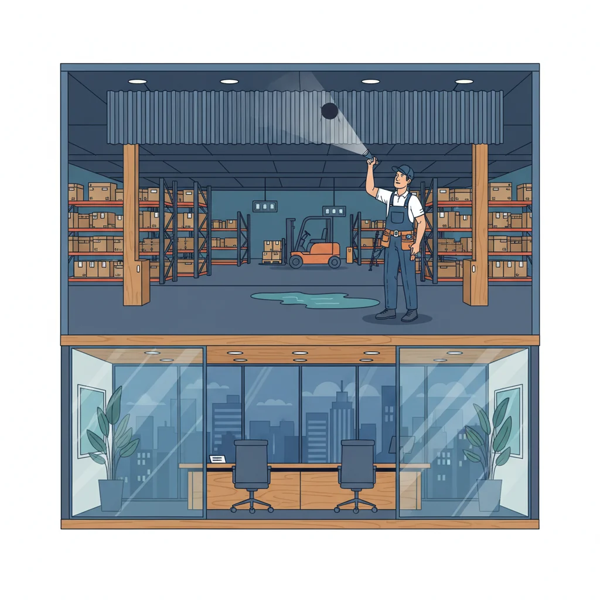
設備檢修例句：The maintenance team discovered a small hole in the warehouse roof that needs immediate repair to prevent water damage.
維修團隊在倉庫屋頂發現了一個小洞，需要立即修補以防止漏水損壞。
檢視 1:1 發光看板概念插畫 Prompt
例句：Please stay on the line while I am holding for the department head to join the conference call.
請在線上稍候，我正在等待部門主管加入電話會議。
檢視 1:1 發光看板概念插畫 Prompt
例句：The committee will hold a special session next Tuesday to discuss the budget allocation for the new project.
委員會將於下週二舉行特別會議，討論新專案的預算分配。
檢視 1:1 發光看板概念插畫 Prompt
例句：While photography is his hobby, he often uses his skills to capture professional images for our company website.
雖然攝影是他的嗜好，但他經常運用這項技能為我們公司網站拍攝專業照片。
檢視 1:1 發光看板概念插畫 Prompt
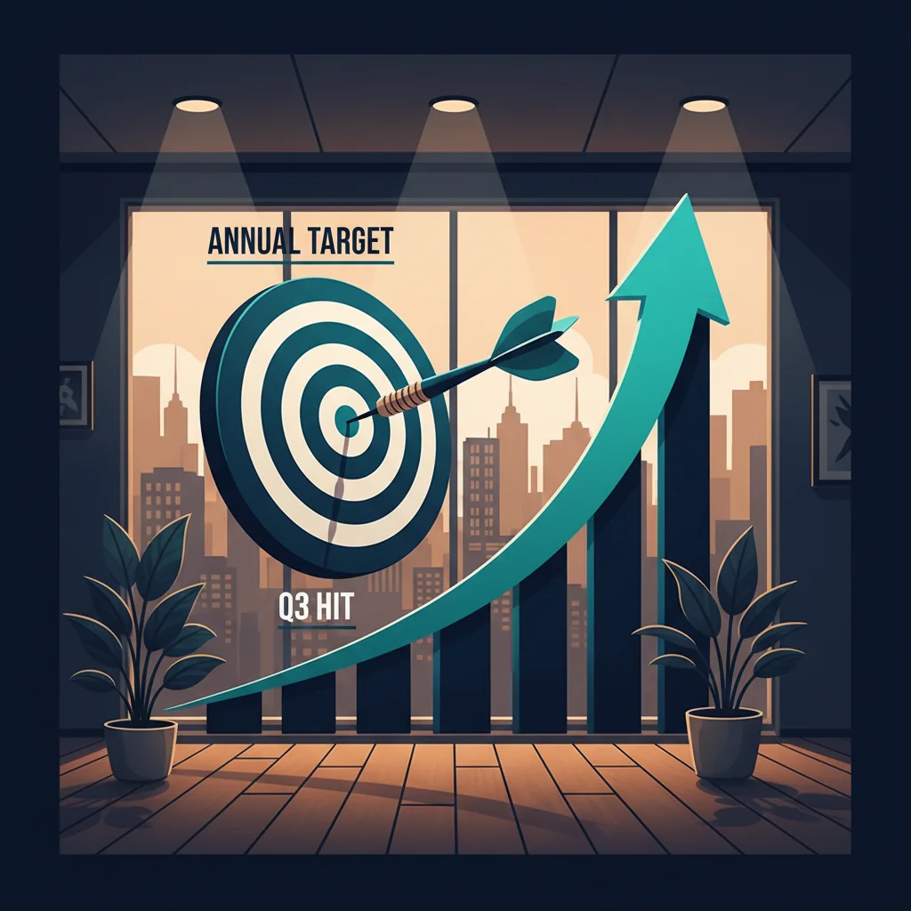
辦公日常例句：Our sales team is confident that we will hit our annual target by the end of the third quarter.
我們的銷售團隊有信心在第三季結束前達成年度目標。
檢視 1:1 發光看板概念插畫 Prompt
例句：Our company has a long history of excellence in manufacturing high-quality industrial machinery.
我們公司在製造高品質工業機械方面擁有悠久的卓越歷史。
檢視 1:1 發光看板概念插畫 Prompt
例句：The hiring process for the regional manager position will conclude by the end of this week.
區域經理職位的招聘流程將於本週結束前完成。
檢視 1:1 發光看板概念插畫 Prompt
例句：The company hired a new marketing director who has over fifteen years of experience in the retail industry.
公司聘請了一位在零售業擁有超過十五年經驗的新行銷總監。
檢視 1:1 發光看板概念插畫 Prompt
例句：We plan to hire three additional software engineers to accelerate the development of our new mobile application.
我們計畫再聘請三名軟體工程師，以加速我們新行動應用程式的開發。
檢視 1:1 發光看板概念插畫 Prompt
例句：The manager prepared the presentation slides himself to ensure the data accuracy for the board meeting.
經理親自準備了簡報投影片，以確保董事會議數據的準確性。
檢視 1:1 發光看板概念插畫 Prompt
例句：Our consulting firm is highly regarded for providing innovative solutions to complex business challenges.
我們的顧問公司因能為複雜的商業挑戰提供創新解決方案而備受推崇。
檢視 1:1 發光看板概念插畫 Prompt
例句：The high demand for our eco-friendly products has significantly boosted our revenue this fiscal year.
本財年對我們環保產品的高需求顯著提升了我們的營收。
檢視 1:1 發光看板概念插畫 Prompt
例句：Hi, I am calling from the logistics department to confirm the delivery schedule for the upcoming shipment.
嗨，我是物流部門的，想確認一下即將到貨的配送時間表。
檢視 1:1 發光看板概念插畫 Prompt
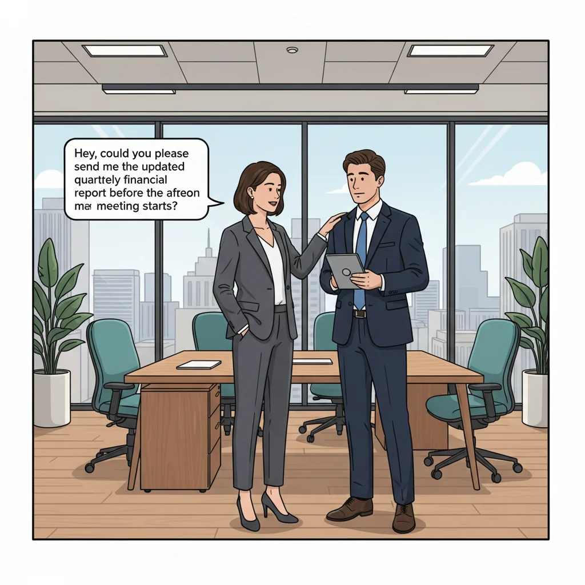
辦公行政例句：Hey, could you please send me the updated quarterly financial report before the afternoon meeting starts?
嘿，你能在下午會議開始前把更新後的季度財務報告發給我嗎？
檢視 1:1 發光看板概念插畫 Prompt
例句：After a moment of hesitation, the client signed the long-term service agreement, signaling their trust in our firm.
在片刻的猶豫後，客戶簽署了長期服務協議，象徵著他們對我們公司的信任。
檢視 1:1 發光看板概念插畫 Prompt
例句：Please do not hesitate to contact our technical support team if you encounter any issues with the new software installation.
如果您在安裝新軟體時遇到任何問題，請隨時聯繫我們的技術支援團隊。
檢視 1:1 發光看板概念插畫 Prompt
例句：The CEO decided to oversee the final merger negotiations herself to ensure every detail met our corporate standards.
執行長決定親自監督最終的合併談判，以確保每個細節都符合我們的企業標準。
檢視 1:1 發光看板概念插畫 Prompt
例句：Please sign the contract here to finalize the agreement between our two companies.
請在這裡簽署合約，以完成我們兩家公司之間的協議。
檢視 1:1 發光看板概念插畫 Prompt
例句：Regular training helps employees stay updated with the latest industry standards.
定期培訓有助於員工掌握最新的產業標準。
檢視 1:1 發光看板概念插畫 Prompt
例句：The feedback provided by the focus group was extremely helpful for our product development.
焦點小組提供的回饋對於我們的產品開發非常有幫助。
檢視 1:1 發光看板概念插畫 Prompt
例句：Our support team is available twenty-four hours a day to help with any technical issues.
我們的支援團隊全天候二十四小時為您提供技術問題協助。
檢視 1:1 發光看板概念插畫 Prompt
例句：When answering a business call, it is professional to say hello and state your name clearly.
接聽商務電話時，說聲你好並清楚說明姓名是專業的表現。
檢視 1:1 發光看板概念插畫 Prompt
例句：The annual shareholders' meeting was held in the main conference hall yesterday.
年度股東大會昨天在主會議廳舉行。
檢視 1:1 發光看板概念插畫 Prompt
例句：Due to heavy traffic on the highway, the delivery truck arrived an hour behind schedule.
由於高速公路交通壅塞，送貨卡車比預定時間晚了一小時到達。
檢視 1:1 發光看板概念插畫 Prompt
例句：We need to use a forklift to move these heavy crates to the loading dock.
我們需要使用堆高機將這些沉重的板條箱移至裝卸碼頭。
檢視 1:1 發光看板概念插畫 Prompt
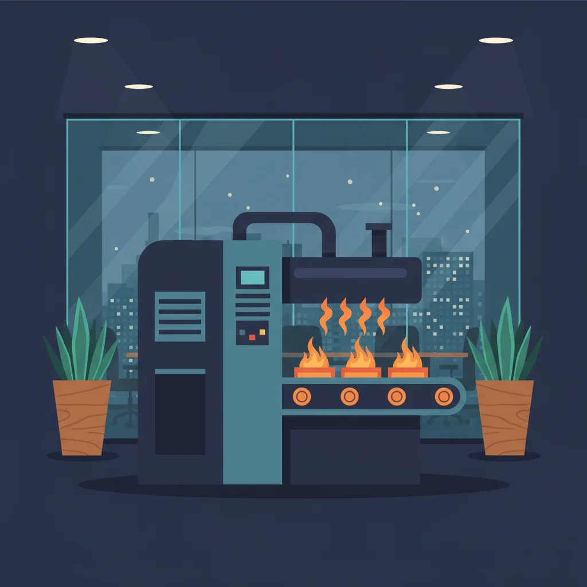
行銷與銷售例句：The new manufacturing process uses intense heat to mold the plastic components efficiently.
新的製造工藝利用高熱來有效地塑形塑膠零件。
檢視 1:1 發光看板概念插畫 Prompt
例句：Customer satisfaction is at the heart of our business strategy.
客戶滿意度是我們商業策略的核心。
檢視 1:1 發光看板概念插畫 Prompt
例句：I was pleased to hear that our proposal was accepted by the board of directors.
很高興得知我們的提案已被董事會接受。
檢視 1:1 發光看板概念插畫 Prompt
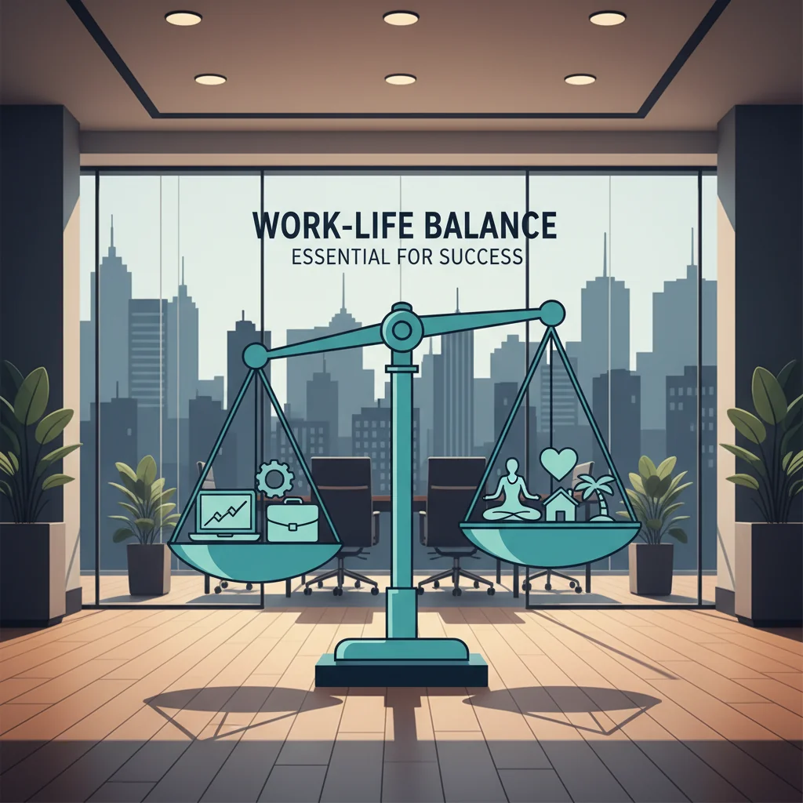
人力資源例句：Maintaining a healthy work-life balance is essential for long-term career success.
保持健康的工作與生活平衡對於長期的職涯成功至關重要。
檢視 1:1 發光看板概念插畫 Prompt
例句：The company provides comprehensive health insurance plans for all full-time employees.
公司為所有全職員工提供全面的健康保險計畫。
檢視 1:1 發光看板概念插畫 Prompt
例句：The customer service representative wore headphones to ensure clear communication during the call.
客服代表戴著耳機，以確保通話期間溝通清晰。
檢視 1:1 發光看板概念插畫 Prompt
例句：All major policy changes must be approved by the head office before implementation.
所有重大政策變更在實施前都必須經過總公司批准。
檢視 1:1 發光看板概念插畫 Prompt
例句：She was recently appointed as the head of the international marketing department.
她最近被任命為國際行銷部門的負責人。
檢視 1:1 發光看板概念插畫 Prompt
例句：We invited the potential investors to have a meal at the downtown restaurant to discuss the partnership.
我們邀請潛在投資者到市中心的餐廳用餐，以討論合作事宜。
檢視 1:1 發光看板概念插畫 Prompt
例句：The management team will have a discussion regarding the budget allocation for the upcoming fiscal year.
管理團隊將針對下一財政年度的預算分配進行討論。
檢視 1:1 發光看板概念插畫 Prompt
例句：Please submit your leave request at least three days in advance if you plan to have a day off.
如果您打算休假，請至少提前三天提交請假申請。
檢視 1:1 發光看板概念插畫 Prompt
例句：Most clients hate waiting for long periods, so we have implemented an automated callback system.
大多數客戶討厭長時間等待，因此我們實施了自動回撥系統。
檢視 1:1 發光看板概念插畫 Prompt
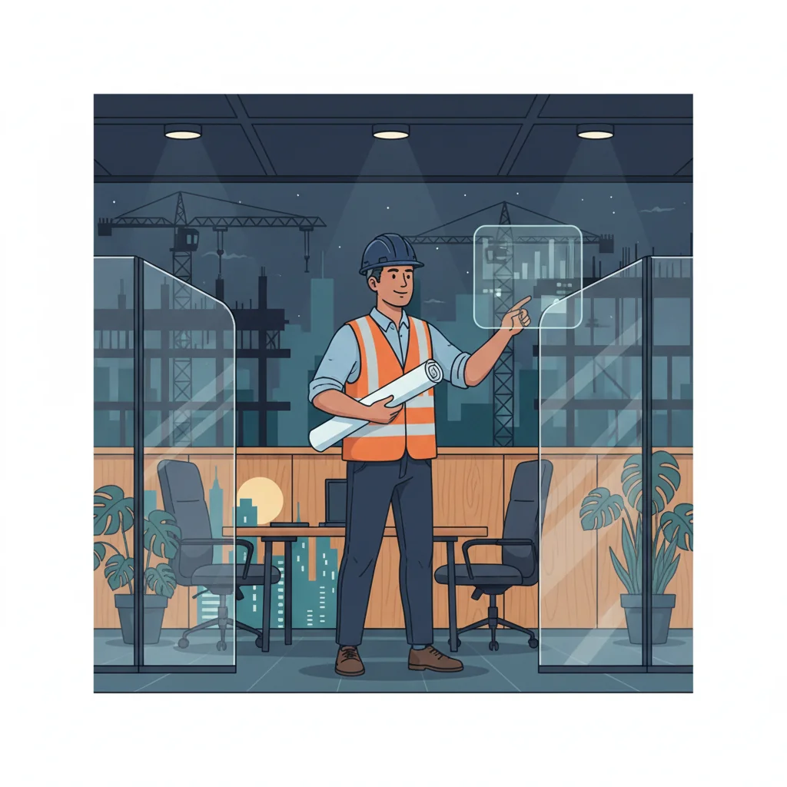
設備檢修例句：The site manager wore a safety hat while inspecting the construction progress at the new facility.
工地經理在視察新設施的施工進度時，戴著安全帽。
檢視 1:1 發光看板概念插畫 Prompt
例句：Competition in the global market is becoming harder, requiring us to refine our strategic approach.
全球市場的競爭正變得更加困難，這要求我們必須精進我們的策略方針。
檢視 1:1 發光看板概念插畫 Prompt
例句：The engineering team worked hard to resolve the technical glitches before the software launch deadline.
工程團隊努力工作，在軟體發布截止日期前解決了技術故障。
檢視 1:1 發光看板概念插畫 Prompt
例句：We are very happy to announce that our quarterly sales targets have been exceeded by fifteen percent.
我們很高興地宣布，本季銷售目標已超額達成百分之十五。
檢視 1:1 發光看板概念插畫 Prompt
例句：The CEO emphasized that employee happiness is the core driver of our long-term productivity and innovation.
執行長強調，員工的幸福感是我們長期生產力和創新的核心驅動力。
檢視 1:1 發光看板概念插畫 Prompt
例句：It often happens that project timelines need adjustment due to unforeseen external factors.
由於不可預見的外部因素，專案時程表往往需要進行調整。
檢視 1:1 發光看板概念插畫 Prompt
例句：The manager explained what happened during the supply chain disruption and how we plan to resolve it.
經理說明了供應鏈中斷期間發生的狀況，以及我們計畫如何解決。
檢視 1:1 發光看板概念插畫 Prompt
例句：We need to identify why these technical errors continue to happen during the data migration process.
我們需要找出為什麼這些技術錯誤在資料遷移過程中持續發生。
檢視 1:1 發光看板概念插畫 Prompt
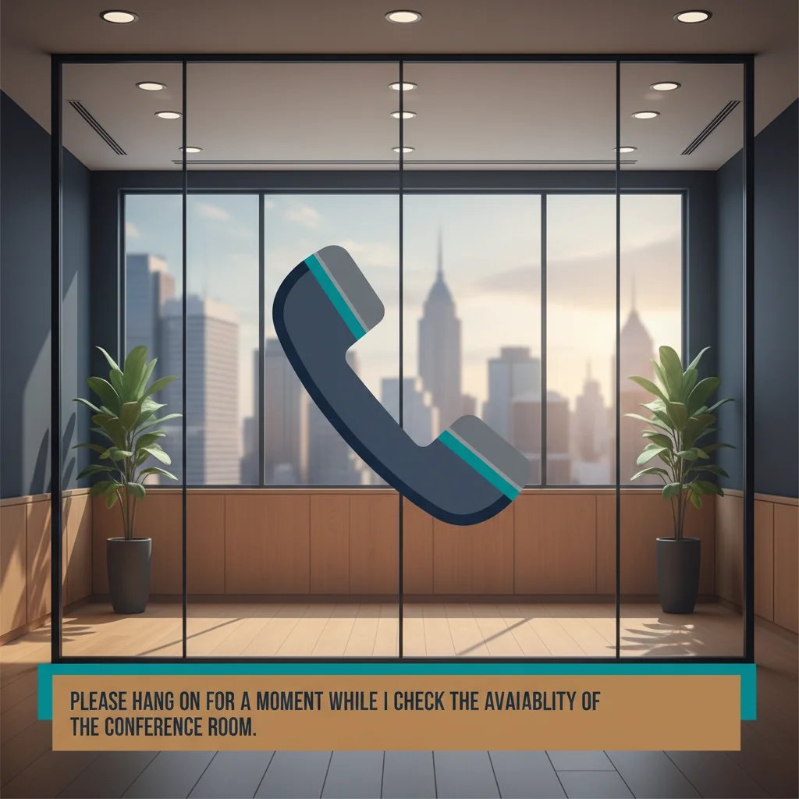
溝通互動例句：Please hang on for a moment while I check the availability of the conference room.
請稍候片刻，讓我確認會議室的使用狀況。
檢視 1:1 發光看板概念插畫 Prompt
例句：Our customer service team is trained to handle complex inquiries with professionalism and efficiency.
我們的客戶服務團隊受過專業訓練，能以專業且有效率的方式處理複雜的詢問。
檢視 1:1 發光看板概念插畫 Prompt
例句：The assistant will hand out the meeting agendas to all attendees before the session begins.
助理將在會議開始前將議程分發給所有與會者。
檢視 1:1 發光看板概念插畫 Prompt
例句：All department heads must hand in their budget proposals by Friday afternoon.
所有部門主管必須在週五下午前提交預算提案。
檢視 1:1 發光看板概念插畫 Prompt
例句：Could you please lend a hand with moving these boxes to the storage room?
可以請你幫忙把這些箱子搬到儲藏室嗎？
檢視 1:1 發光看板概念插畫 Prompt
例句：The annual shareholders' meeting will be held in the main conference hall on the ground floor.
年度股東大會將在一樓的主會議廳舉行。
檢視 1:1 發光看板概念插畫 Prompt
例句：The retail store is offering half price on all winter inventory to clear space for the new spring collection.
這家零售店正將所有冬季庫存以半價出售，以便為春季新品騰出空間。
檢視 1:1 發光看板概念插畫 Prompt
例句：We have already completed half of the audit process and expect to finish by the end of the week.
我們已經完成了審計流程的一半，預計在本週末前完成。
檢視 1:1 發光看板概念插畫 Prompt
例句：The professional dress code requires that employees keep their hair neat and well-groomed at all times.
專業的服裝儀容規範要求員工隨時保持頭髮整潔。
檢視 1:1 發光看板概念插畫 Prompt
例句：Analyzing consumer shopping habits helps our marketing team develop more effective advertising campaigns.
分析消費者的購物習慣有助於我們的行銷團隊制定更有效的廣告活動。
檢視 1:1 發光看板概念插畫 Prompt
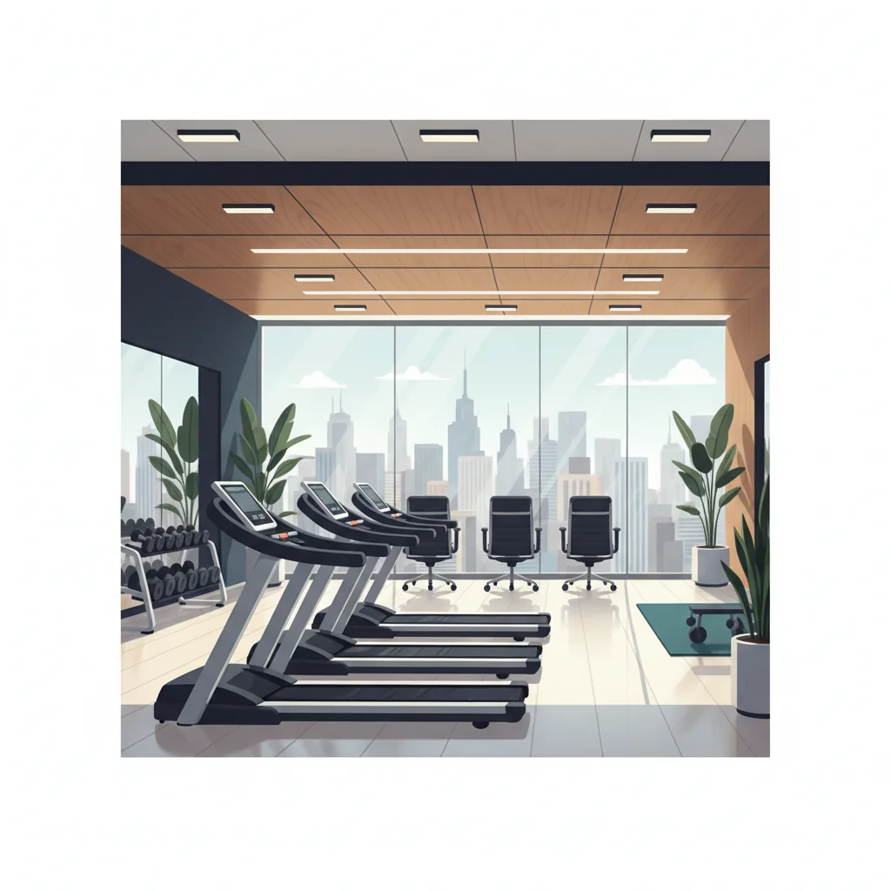
營運管理例句：The company provides a fully equipped gym on the third floor to promote employee health and wellness.
公司在三樓提供設備齊全的健身房，以促進員工的健康與福祉。
檢視 1:1 發光看板概念插畫 Prompt
例句：Listen up, guys, we need to finalize the presentation slides before the client meeting tomorrow morning.
各位聽著，我們必須在明天早上的客戶會議前完成簡報投影片。
檢視 1:1 發光看板概念插畫 Prompt
例句：The guy from the IT department is coming over this afternoon to fix the server connectivity issues.
資訊部門的那位同事今天下午會過來修復伺服器的連線問題。
檢視 1:1 發光看板概念插畫 Prompt
例句：Please review the updated safety guidelines before operating the new machinery in the warehouse.
在倉庫操作新機器之前，請務必閱讀更新後的安全規範。
檢視 1:1 發光看板概念插畫 Prompt
例句：The project manager will guide the team through the implementation phase to ensure all deadlines are met.
專案經理將引導團隊完成執行階段，以確保所有截止日期都能達成。
檢視 1:1 發光看板概念插畫 Prompt
例句：We have prepared a special lounge area where our guests can relax and network during the seminar breaks.
我們準備了一個特別的休息區，讓賓客在研討會休息期間可以放鬆並進行交流。
檢視 1:1 發光看板概念插畫 Prompt
例句：The hotel manager personally greeted every guest arriving for the international trade conference.
飯店經理親自迎接每一位抵達參加國際貿易會議的賓客。
檢視 1:1 發光看板概念插畫 Prompt
例句：It is difficult to guess the exact market demand for the next quarter without more comprehensive consumer data.
若沒有更全面的消費者數據，很難推測下一季的確切市場需求。
檢視 1:1 發光看板概念插畫 Prompt
例句：Security personnel guard the main entrance of the data center around the clock to prevent unauthorized access.
保全人員全天候守衛資料中心的主入口，以防止未經授權的進入。
檢視 1:1 發光看板概念插畫 Prompt
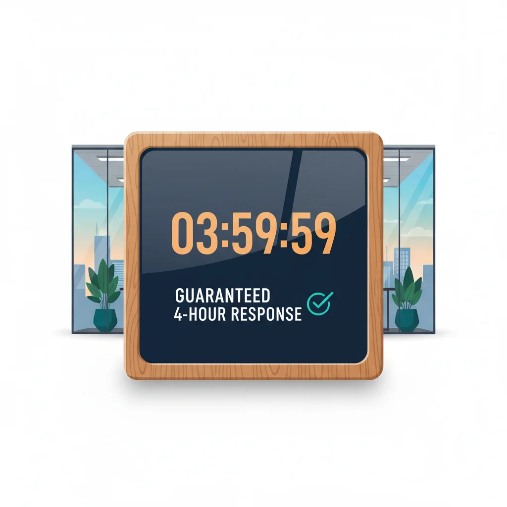
客戶服務例句：The new service contract includes a guaranteed response time of under four hours for all technical support requests.
新的服務合約包含所有技術支援請求在四小時內獲得回應的保證。
檢視 1:1 發光看板概念插畫 Prompt
例句：We guarantee that all our electronic components meet the highest international safety standards before shipment.
我們保證所有電子零件在出貨前均符合最高的國際安全標準。
檢視 1:1 發光看板概念插畫 Prompt
例句：The company reported a significant growth in quarterly revenue due to the successful launch of its new software line.
由於新軟體系列的成功推出，該公司報告稱季度營收有顯著增長。
檢視 1:1 發光看板概念插畫 Prompt
例句：The firm grows its revenue by consistently delivering high-quality services to its clients.
該公司透過持續為客戶提供高品質服務來增加營收。
檢視 1:1 發光看板概念插畫 Prompt
例句：Our department has grown significantly in size since we implemented the new recruitment strategy.
自從我們實施新的招募策略以來，我們部門的規模已顯著擴大。
檢視 1:1 發光看板概念插畫 Prompt
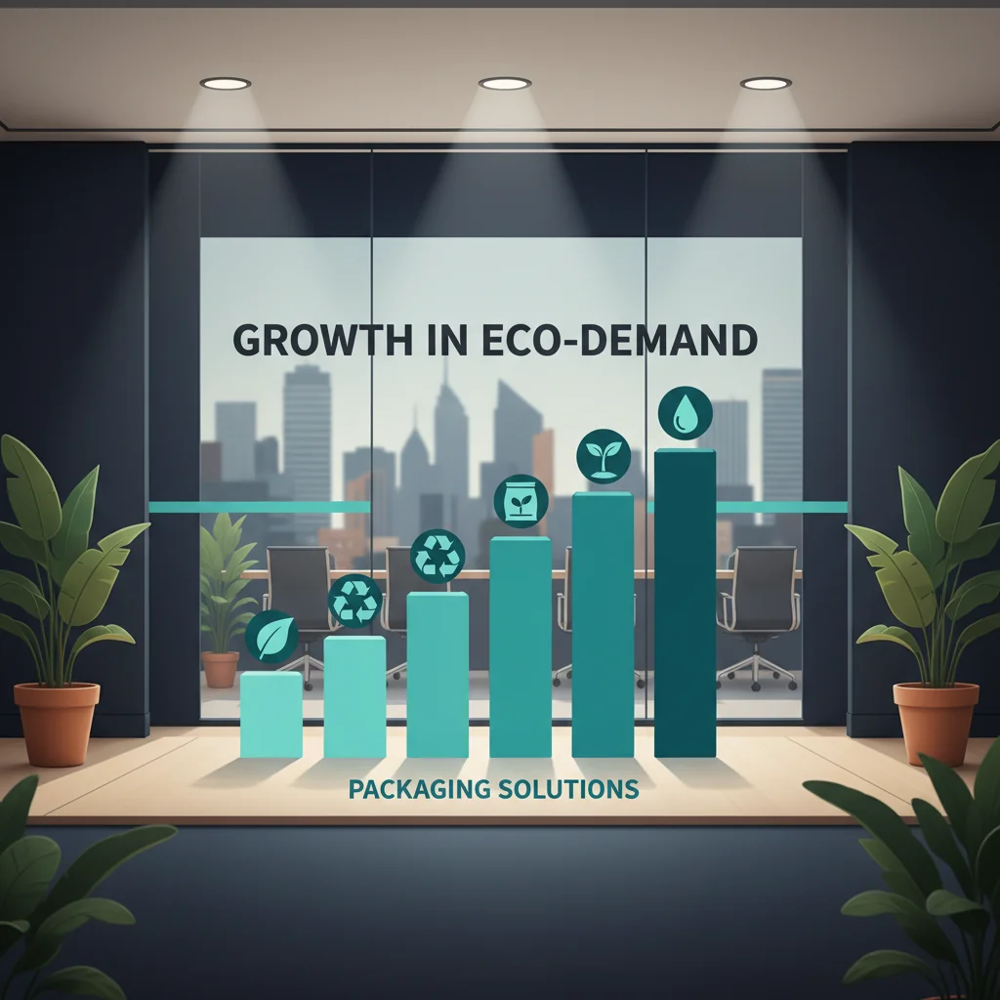
行銷與銷售例句：There is a growing demand for eco-friendly packaging solutions among our customers.
我們的客戶對於環保包裝解決方案的需求正日益增加。
檢視 1:1 發光看板概念插畫 Prompt
例句：The training program is designed to help employees grow their leadership skills within the organization.
該培訓計畫旨在幫助員工在組織內培養領導能力。
檢視 1:1 發光看板概念插畫 Prompt
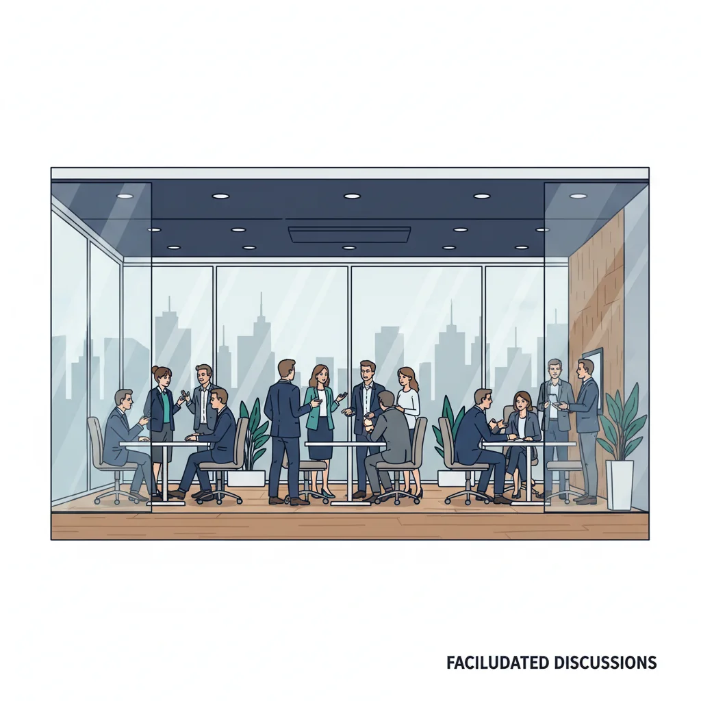
辦公日常例句：We have divided the workshop participants into smaller groups to facilitate better discussion.
我們已將研討會參與者分成較小的小組，以促進更深入的討論。
檢視 1:1 發光看板概念插畫 Prompt
例句：The research group is analyzing consumer behavior trends for the upcoming product launch.
研究小組正在分析即將到來的新產品發布之消費者行為趨勢。
檢視 1:1 發光看板概念插畫 Prompt
例句：The logistics firm specializes in the cold-chain transport of grocery items to retail stores.
該物流公司專門從事將食品雜貨冷鏈運輸至零售商店的業務。
檢視 1:1 發光看板概念插畫 Prompt
例句：The marketing department decided to use a grey color scheme for the new brand identity.
行銷部門決定為新的品牌識別採用灰色配色方案。
檢視 1:1 發光看板概念插畫 Prompt
例句：The company grew rapidly after expanding its operations into the international market.
公司在將業務擴展至國際市場後，成長十分迅速。
檢視 1:1 發光看板概念插畫 Prompt
例句：A warm greeting at the start of a meeting helps to build rapport with new clients.
會議開始時的熱情問候有助於與新客戶建立良好的關係。
檢視 1:1 發光看板概念插畫 Prompt
例句：The receptionist is trained to greet every visitor with a professional and welcoming attitude.
接待人員受過專業訓練，能以專業且熱情的態度問候每位訪客。
檢視 1:1 發光看板概念插畫 Prompt
例句：Our greatest asset is the dedicated team that works tirelessly to ensure client satisfaction.
我們最大的資產是那群為確保客戶滿意度而不懈努力的敬業團隊。
檢視 1:1 發光看板概念插畫 Prompt
例句：The new software update offers greater efficiency for our data processing tasks.
新的軟體更新為我們的資料處理任務提供了更高的效率。
檢視 1:1 發光看板概念插畫 Prompt
例句：It was a great pleasure to meet with the potential partners during the industry conference.
在產業研討會期間與潛在合作夥伴會面，是一次非常愉快的經驗。
檢視 1:1 發光看板概念插畫 Prompt
例句：The new office furniture features a sleek gray finish that matches our modern interior design.
新款辦公家具採用時尚的灰色飾面，與我們的現代室內設計相得益彰。
檢視 1:1 發光看板概念插畫 Prompt
例句：The corporate headquarters features a well-maintained grass courtyard for employee relaxation.
公司總部設有一個維護良好的草地庭院，供員工休憩使用。
檢視 1:1 發光看板概念插畫 Prompt
例句：The sales director presented a graph showing a significant increase in revenue over the last quarter.
業務總監展示了一張圖表，顯示上季營收有顯著成長。
檢視 1:1 發光看板概念插畫 Prompt
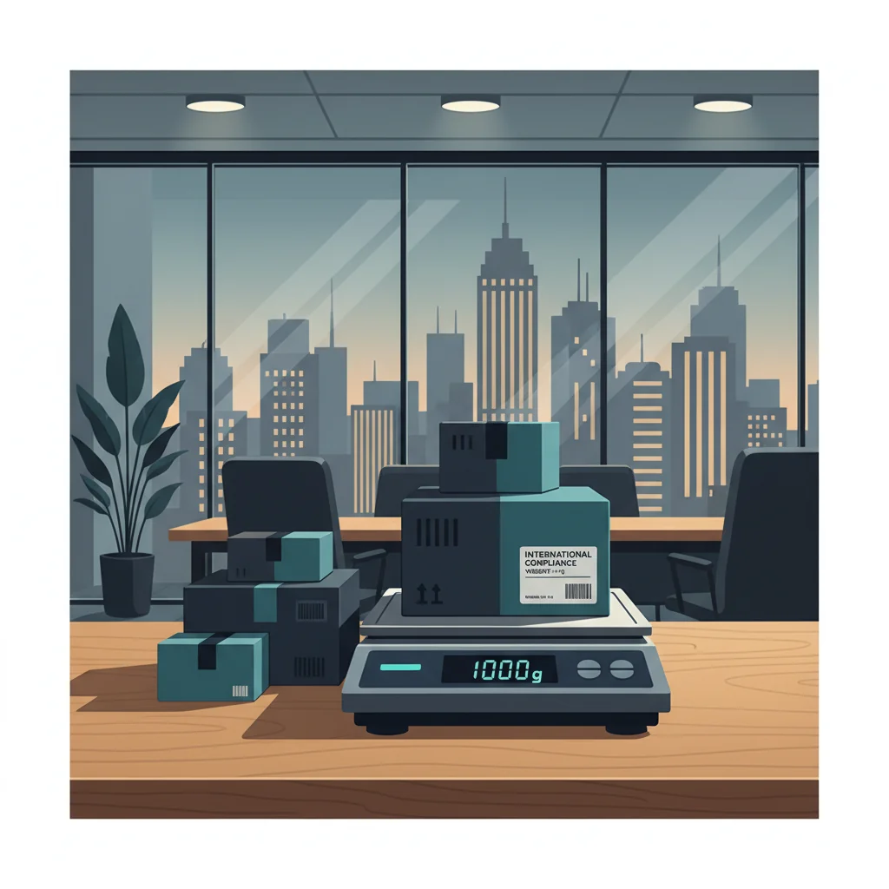
一般專業例句：Each package must be weighed to the nearest gram to comply with international shipping regulations.
每個包裹必須精確秤重至公克，以符合國際運輸規範。
檢視 1:1 發光看板概念插畫 Prompt
例句：We are looking to recruit students who will graduate from top engineering programs this spring.
我們正尋求招募今年春天將從頂尖工程學程畢業的學生。
檢視 1:1 發光看板概念插畫 Prompt
例句：The company is collaborating with the government on a new sustainable infrastructure project.
該公司正與政府合作進行一項新的永續基礎設施計畫。
檢視 1:1 發光看板概念插畫 Prompt
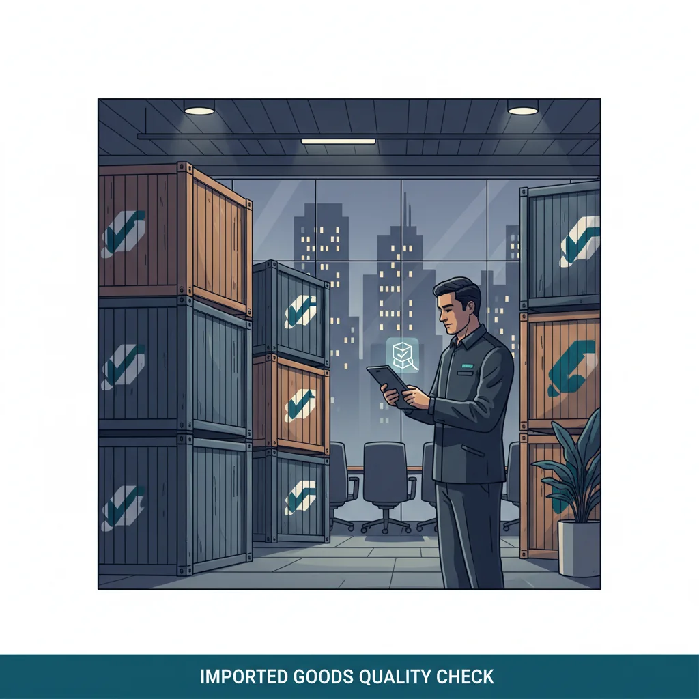
物流倉儲例句：The warehouse staff is currently inspecting the imported goods to ensure they meet quality standards.
倉庫人員目前正在檢查進口貨物，以確保其符合品質標準。
檢視 1:1 發光看板概念插畫 Prompt
例句：It is a good idea to review the contract terms thoroughly before signing the final agreement.
在簽署最終協議前，仔細審閱合約條款是一個好主意。
檢視 1:1 發光看板概念插畫 Prompt
例句：Investors are shifting their assets into gold as a hedge against current market volatility.
投資者正將資產轉向黃金，以規避當前市場的波動風險。
檢視 1:1 發光看板概念插畫 Prompt
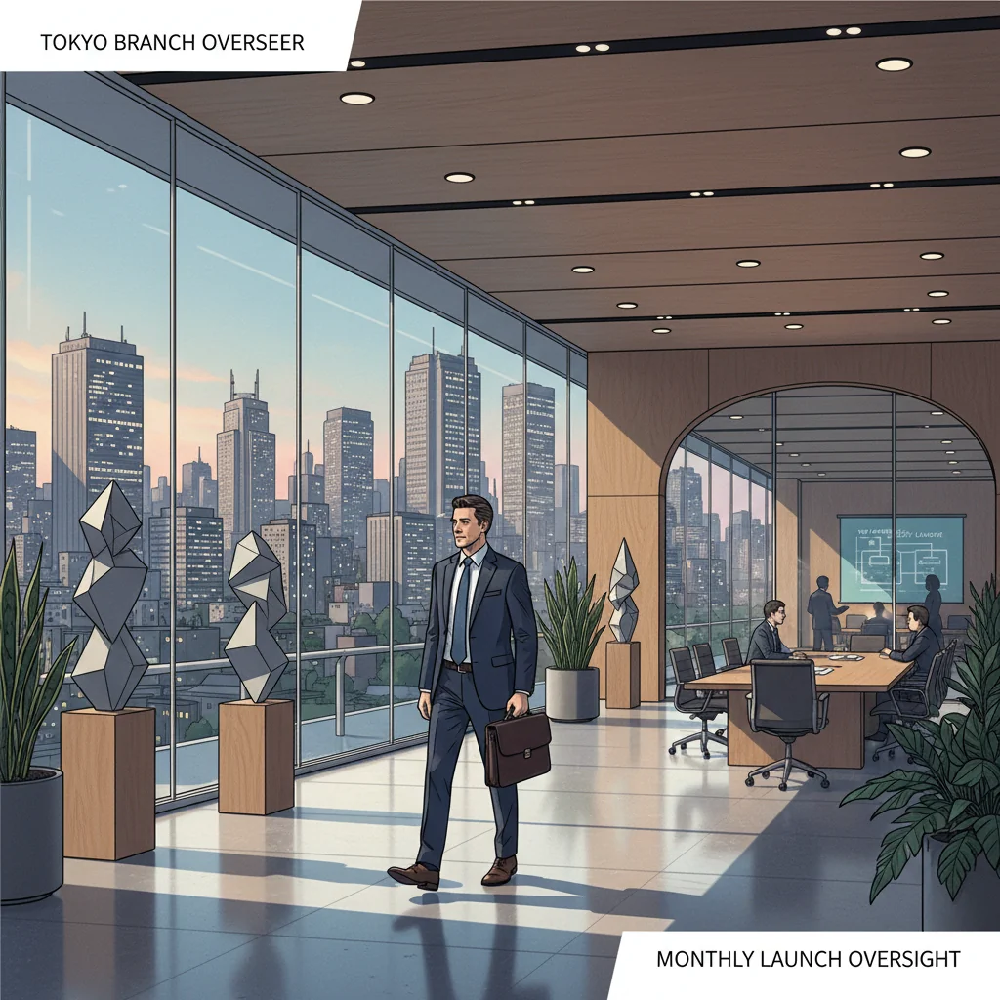
辦公日常例句：The regional manager goes to the Tokyo branch every month to oversee the new product launch.
區域經理每個月都會前往東京分公司，督導新產品的發布。
檢視 1:1 發光看板概念插畫 Prompt
例句：The management team met this morning to establish clear quarterly goals for increasing market share.
管理團隊今早開會，為提升市場佔有率制定了明確的季度目標。
檢視 1:1 發光看板概念插畫 Prompt
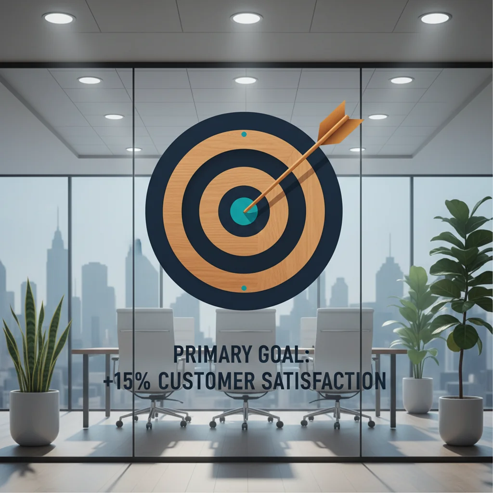
營運管理例句：Our primary goal for this quarter is to increase customer satisfaction by fifteen percent.
我們本季的主要目標是將客戶滿意度提高百分之十五。
檢視 1:1 發光看板概念插畫 Prompt
例句：The team decided to go shopping for new office supplies after the inventory check.
團隊決定在盤點後去採購新的辦公用品。
檢視 1:1 發光看板概念插畫 Prompt
例句：Most of the staff plan to go on vacation during the summer holiday season.
大多數員工計畫在暑假期間休假。
檢視 1:1 發光看板概念插畫 Prompt
例句：Despite the technical difficulties, the seminar will go on as scheduled.
儘管遇到技術困難，研討會仍將按計畫繼續進行。
檢視 1:1 發光看板概念插畫 Prompt
例句：The meeting is about to start, so please go in and take a seat.
會議即將開始，請進入並就座。
檢視 1:1 發光看板概念插畫 Prompt
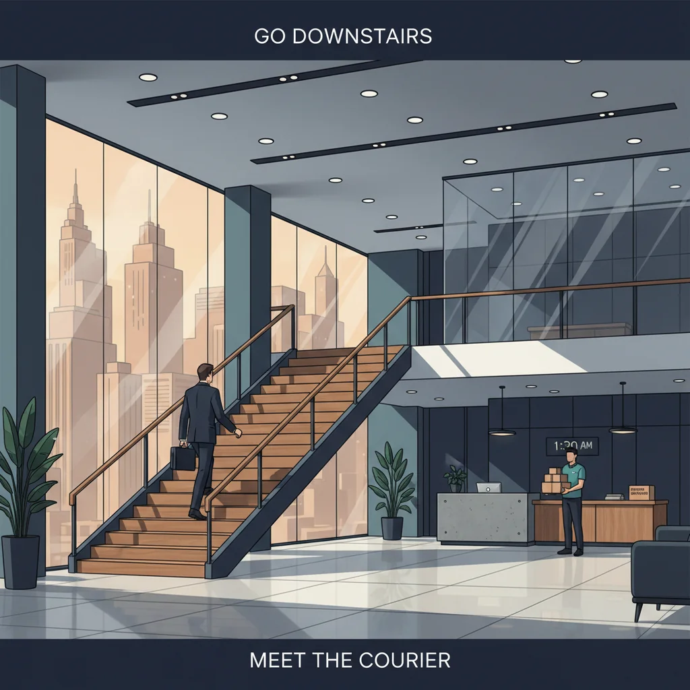
辦公日常例句：I will go downstairs to the lobby to meet the courier who is delivering the packages.
我會下樓到大廳去見正在送貨的快遞員。
檢視 1:1 發光看板概念插畫 Prompt
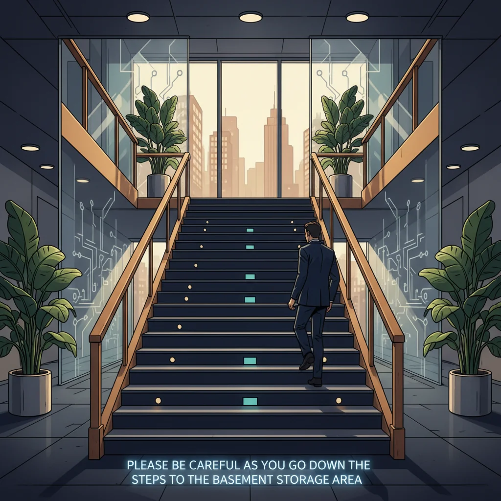
旅遊與交通例句：Please be careful as you go down the steps to the basement storage area.
請在沿著樓梯走下地下室儲藏區時小心腳步。
檢視 1:1 發光看板概念插畫 Prompt
例句：We need to go over the budget proposal one more time before submitting it to the finance department.
在提交給財務部門之前，我們需要再檢查一次預算提案。
檢視 1:1 發光看板概念插畫 Prompt
例句：Our company is expanding its global reach by opening new branches in Europe and Asia.
我們公司正透過在歐洲和亞洲開設新分公司來擴大全球影響力。
檢視 1:1 發光看板概念插畫 Prompt
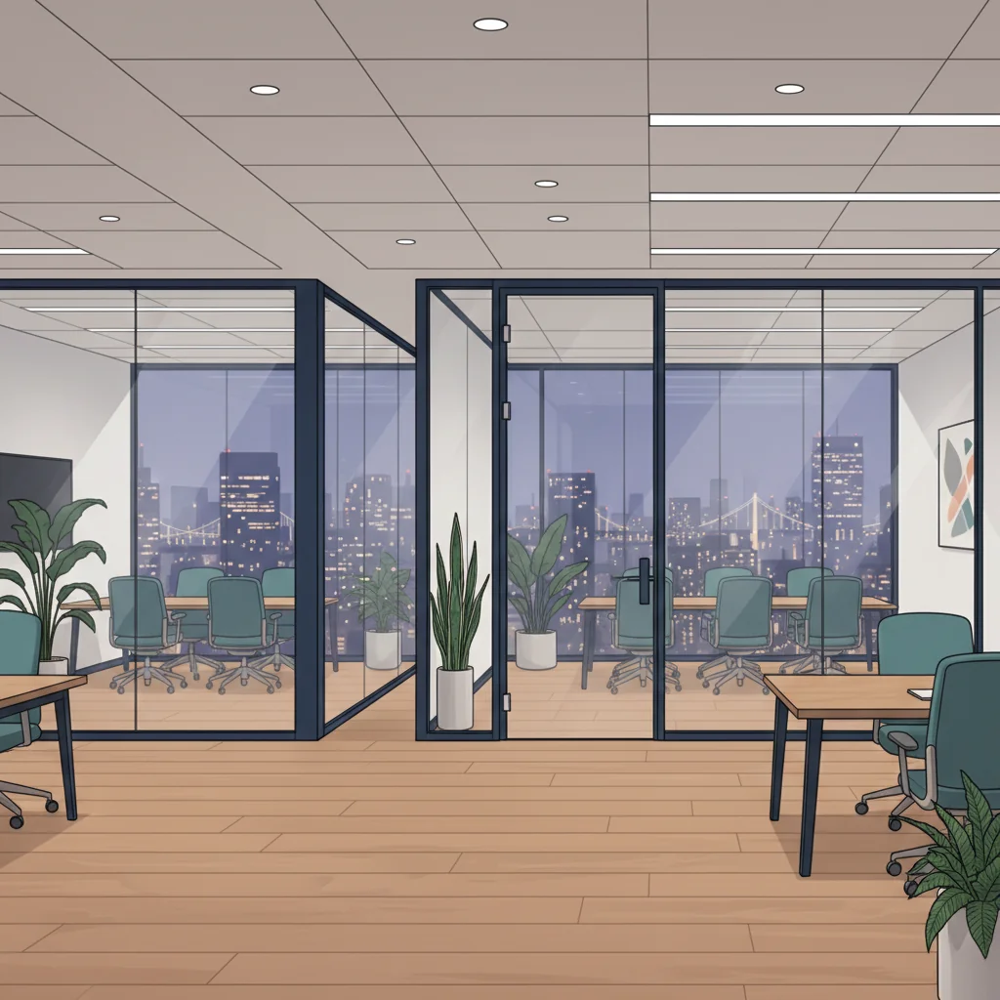
餐飲住宿例句：The office partition is made of frosted glass to ensure privacy while maintaining an open feel.
辦公室隔間採用磨砂玻璃製成，以確保隱私同時保持開放感。
檢視 1:1 發光看板概念插畫 Prompt
例句：This new software gives our team the ability to track project progress in real-time.
這套新軟體讓我們的團隊能夠即時追蹤專案進度。
檢視 1:1 發光看板概念插畫 Prompt
例句：The concierge was happy to give directions to the nearest subway station for the guests.
禮賓人員很樂意為賓客指引前往最近地鐵站的方向。
檢視 1:1 發光看板概念插畫 Prompt
例句：She spent the entire morning preparing slides to give a presentation to the board of directors.
她花了一整個上午準備投影片，以便向董事會進行簡報。
檢視 1:1 發光看板概念插畫 Prompt
例句：The sales representative agreed to give a discount if we place a bulk order for the office furniture.
如果我們大量訂購辦公家具，業務代表同意提供折扣。
檢視 1:1 發光看板概念插畫 Prompt
例句：If you encounter any technical issues with the software, please give a call to our support hotline.
如果您在使用軟體時遇到任何技術問題，請致電我們的支援熱線。
檢視 1:1 發光看板概念插畫 Prompt
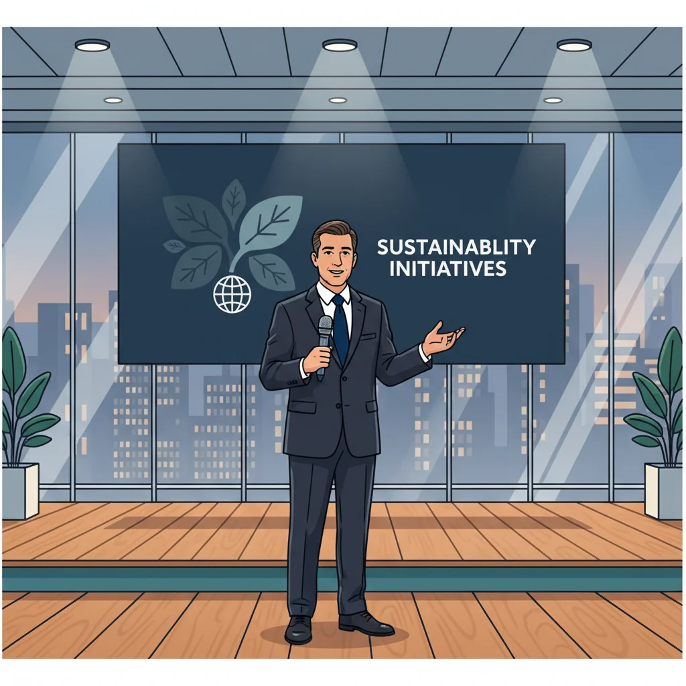
辦公日常例句：The CEO will give a speech regarding the company's new sustainability initiatives during the annual meeting.
執行長將在年度會議中針對公司新的永續發展計畫發表演說。
檢視 1:1 發光看板概念插畫 Prompt
例句：The young girl was hired as a summer intern to assist the administrative team with filing documents.
那位年輕女孩被聘為暑期實習生，協助行政團隊歸檔文件。
檢視 1:1 發光看板概念插畫 Prompt
例句：We have prepared several corporate gifts for our long-term partners to show our appreciation.
我們為長期合作夥伴準備了幾份企業贈品，以表達我們的感謝。
檢視 1:1 發光看板概念插畫 Prompt
例句：The company decided to offer a high-quality pen as a gift to every attendee at the seminar.
公司決定贈送一支高品質鋼筆作為研討會每位出席者的贈品。
檢視 1:1 發光看板概念插畫 Prompt
例句：The marketing manager gets a monthly report detailing the performance of all digital advertising campaigns.
行銷經理每月會收到一份詳細說明所有數位廣告活動成效的報告。
檢視 1:1 發光看板概念插畫 Prompt
例句：We must leave early to ensure we get to the conference center before the keynote speech begins.
我們必須提早出發，以確保在主題演講開始前抵達會議中心。
檢視 1:1 發光看板概念插畫 Prompt
例句：The catering staff needs to get the food ready before the guests arrive for the banquet.
餐飲人員需要在賓客抵達宴會廳前準備好餐點。
檢視 1:1 發光看板概念插畫 Prompt
例句：The delegates will get off the train at the central station to attend the international summit.
代表團將在中央車站下車，參加國際高峰會。
檢視 1:1 發光看板概念插畫 Prompt
例句：Please get in touch with our logistics department if you have any questions regarding your shipment status.
如果您對貨運狀態有任何疑問，請與我們的物流部門聯繫。
檢視 1:1 發光看板概念插畫 Prompt
例句：I will review the contract terms and get back to you by the end of the business day.
我會審閱合約條款，並在下班前回覆您。
檢視 1:1 發光看板概念插畫 Prompt
例句：You should call the clinic early to get an appointment for your annual health check-up.
你應該儘早打電話給診所，預約你的年度健康檢查。
檢視 1:1 發光看板概念插畫 Prompt
例句：Please remember to get a ticket from the automated machine before entering the parking garage.
進入停車庫前，請記得從自動售票機取得停車票。
檢視 1:1 發光看板概念插畫 Prompt
例句：I expect to get a phone call from the supplier regarding the shipment status later this afternoon.
我預計今天下午晚些時候會接到供應商關於貨運狀態的電話。
檢視 1:1 發光看板概念插畫 Prompt
例句：I need to get the final approval from the director before we can proceed with the budget allocation.
在我們進行預算分配之前，我需要取得總監的最終批准。
檢視 1:1 發光看板概念插畫 Prompt
例句：Good morning, gentlemen; let us begin the meeting by reviewing the agenda for today's session.
各位先生早安；讓我們開始會議，先審閱今天議程的討論事項。
檢視 1:1 發光看板概念插畫 Prompt
例句：The gentleman in the grey suit is our new consultant who will be assisting us with the financial audit.
那位穿灰色西裝的紳士是我們的新顧問，他將協助我們進行財務審計。
檢視 1:1 發光看板概念插畫 Prompt
例句：The new marketing campaign is expected to generate a significant increase in website traffic and sales leads.
新的行銷活動預計將產生網站流量和銷售潛在客戶的顯著成長。
檢視 1:1 發光看板概念插畫 Prompt
例句：Our clients are generally satisfied with the quality of service provided by our technical support team.
我們的客戶通常對技術支援團隊所提供的服務品質感到滿意。
檢視 1:1 發光看板概念插畫 Prompt
例句：The general consensus among the board members is that the company should focus on digital transformation this year.
董事會成員的普遍共識是，公司今年應專注於數位轉型。
檢視 1:1 發光看板概念插畫 Prompt
例句：The project manager will gather all the team members in the conference room to discuss the final phase of the product launch.
專案經理將召集所有團隊成員到會議室，討論產品發布的最後階段。
檢視 1:1 發光看板概念插畫 Prompt
例句：The security gates at the main entrance will be locked automatically after business hours for safety reasons.
基於安全考量，正門的保全閘門將在營業時間結束後自動上鎖。
檢視 1:1 發光看板概念插畫 Prompt
例句：Passengers are requested to proceed to gate 15 for boarding the international flight to Tokyo.
請旅客前往 15 號登機門，準備搭乘前往東京的國際航班。
檢視 1:1 發光看板概念插畫 Prompt
例句：The delivery driver stopped at the nearest gas station to refuel the company van before heading to the distribution center.
送貨司機在前往配送中心之前，在最近的加油站停下來為公司貨車加油。
檢視 1:1 發光看板概念插畫 Prompt
例句：The manufacturing plant has switched to natural gas to reduce its carbon footprint and operational costs.
該製造廠已改用天然氣，以減少碳足跡並降低營運成本。
檢視 1:1 發光看板概念插畫 Prompt
例句：The hotel features a beautifully landscaped garden where guests can relax during their stay.
這家飯店設有一個景觀優美的庭園，房客在住宿期間可以在此放鬆身心。
檢視 1:1 發光看板概念插畫 Prompt
例句：Please ensure that all office garbage is sorted into the appropriate recycling bins before the end of the shift.
請確保在輪班結束前，所有辦公室廢棄物都已分類放入適當的回收桶中。
檢視 1:1 發光看板概念插畫 Prompt
例句：The company provides a secure underground garage for employees who commute to the headquarters by car.
公司為開車通勤至總部的員工提供安全的地下停車庫。
檢視 1:1 發光看板概念插畫 Prompt
例句：The team-building workshop included several interactive games designed to improve communication among department heads.
團隊建設研討會包含數個互動遊戲，旨在改善部門主管之間的溝通。
檢視 1:1 發光看板概念插畫 Prompt
例句：Entering the international market is a high-stakes game that requires meticulous planning and local expertise.
進入國際市場是一場高風險的策略競賽，需要縝密的規劃與在地專業知識。
檢視 1:1 發光看板概念插畫 Prompt
例句：By implementing the new automated software, the logistics team expects to gain significant efficiency in warehouse operations.
透過導入新的自動化軟體，物流團隊預計將在倉儲作業中獲得顯著的效率提升。
檢視 1:1 發光看板概念插畫 Prompt
例句：The CEO outlined a bold strategy to ensure the company's future success in the rapidly evolving global market.
執行長概述了一項大膽的策略，以確保公司在快速變化的全球市場中取得未來的成功。
檢視 1:1 發光看板概念插畫 Prompt
例句：Please contact our legal department if you require any further information regarding the terms of the contract.
如果您需要關於合約條款的任何進一步資訊，請聯繫我們的法務部門。
檢視 1:1 發光看板概念插畫 Prompt
例句：The office renovation team is scheduled to deliver the new ergonomic furniture to the executive suite tomorrow morning.
辦公室裝修團隊預計將於明天早上將新的符合人體工學的家具運送到主管辦公室。
檢視 1:1 發光看板概念插畫 Prompt
例句：It was a funny coincidence that both candidates arrived for the interview wearing the exact same shade of navy blue suit.
兩位候選人穿著完全相同色調的深藍色西裝來參加面試，這真是一個有趣的巧合。
檢視 1:1 發光看板概念插畫 Prompt
例句：The venture capital firm decided to fund the startup's expansion project after reviewing their impressive quarterly growth reports.
在審閱了該新創公司令人印象深刻的季度成長報告後，這家創投公司決定資助其擴張計畫。
檢視 1:1 發光看板概念插畫 Prompt
例句：The primary function of this department is to oversee quality control across all production lines.
該部門的主要職能是監督所有生產線的品質控管。
檢視 1:1 發光看板概念插畫 Prompt
例句：The annual company retreat was a lot of fun and helped improve team collaboration.
年度公司員工旅遊非常有趣，並有助於改善團隊合作。
檢視 1:1 發光看板概念插畫 Prompt
例句：The new software system is now fully operational and ready for company-wide implementation.
新的軟體系統現已完全運作，並準備好在全公司實施。
檢視 1:1 發光看板概念插畫 Prompt
例句：After completing her internship, she was offered a position for full time work at the firm.
在完成實習後，她獲得了該公司全職工作的職位。
檢視 1:1 發光看板概念插畫 Prompt
例句：The conference room is full, so we will need to find an alternative space for our team meeting.
會議室已經滿了，所以我們需要為團隊會議找另一個空間。
檢視 1:1 發光看板概念插畫 Prompt
例句：Rising fuel costs have significantly impacted our logistics and shipping expenses this quarter.
燃料成本上漲已顯著影響我們本季的物流與運輸費用。
檢視 1:1 發光看板概念插畫 Prompt
例句：The catering company provided a platter of fresh fruit for the morning board meeting.
外燴公司為早上的董事會議提供了一盤新鮮水果。
檢視 1:1 發光看板概念插畫 Prompt
例句：Security cameras have been installed at the front door to monitor all incoming visitors.
正門已安裝監視攝影機，以監控所有進入的訪客。
檢視 1:1 發光看板概念插畫 Prompt
例句：The reception desk is located at the front of the building, right next to the main entrance.
接待櫃台位於大樓前方，就在正門旁邊。
檢視 1:1 發光看板概念插畫 Prompt
例句：From now on, all expense reports must be submitted through the new digital portal.
從現在開始，所有費用報告都必須透過新的數位入口網站提交。
檢視 1:1 發光看板概念插畫 Prompt
例句：The customer service representative maintained a friendly tone throughout the difficult call.
客服代表在整個艱難的通話過程中始終保持友善的語氣。
檢視 1:1 發光看板概念插畫 Prompt
例句：He is a close friend of the CEO and often provides valuable insights on industry trends.
他是執行長的好友，經常提供關於產業趨勢的寶貴見解。
檢視 1:1 發光看板概念插畫 Prompt
例句：Please label your personal items before placing them in the office breakroom fridge.
請在將個人物品放入辦公室休息區的冰箱前先貼上標籤。
檢視 1:1 發光看板概念插畫 Prompt
例句：Our company implements a casual dress code on Fridays to foster a more relaxed office atmosphere.
我們公司在週五實施休閒服裝規定，以營造更輕鬆的辦公氛圍。
檢視 1:1 發光看板概念插畫 Prompt
例句：The deadline for the project submission is this Friday, so please ensure all documents are finalized.
專案提交的截止日期是本週五，請確保所有文件都已定稿。
檢視 1:1 發光看板概念插畫 Prompt
例句：We need to bring a fresh perspective to this marketing campaign to attract a younger demographic.
我們需要為這次行銷活動帶來全新的觀點，以吸引更年輕的客群。
檢視 1:1 發光看板概念插畫 Prompt
例句：Due to frequent travel requirements, the sales manager was provided with a company car.
由於頻繁的出差需求，業務經理獲配了一輛公務車。
檢視 1:1 發光看板概念插畫 Prompt
例句：The new remote work policy grants employees the freedom to manage their own schedules effectively.
新的遠端工作政策賦予員工有效管理個人時間的自由。
檢視 1:1 發光看板概念插畫 Prompt
例句：The hotel provides a shuttle service to the airport free of charge for all registered guests.
飯店為所有登記住客提供免費的機場接駁服務。
檢視 1:1 發光看板概念插畫 Prompt
例句：All employees are welcome to attend the free workshop on time management held in the main conference room.
歡迎所有員工參加在主會議室舉辦的免費時間管理研討會。
檢視 1:1 發光看板概念插畫 Prompt
例句：Our team is scheduled to present the fourth quarter financial results to the board of directors next Tuesday.
我們的團隊預計將於下週二向董事會報告第四季的財務業績。
檢視 1:1 發光看板概念插畫 Prompt
例句：The startup was founded by two engineers who aimed to revolutionize sustainable energy solutions.
這家新創公司由兩位工程師創立，旨在徹底改變永續能源解決方案。
檢視 1:1 發光看板概念插畫 Prompt
例句：Please forward the updated project proposal to the client before the end of the business day.
請在下班前將更新後的專案提案轉寄給客戶。
檢視 1:1 發光看板概念插畫 Prompt
例句：The company has decided to hire forty new interns to support the marketing department during the busy summer season.
公司決定聘請四十名新實習生，以在繁忙的夏季期間支援行銷部門。
檢視 1:1 發光看板概念插畫 Prompt
例句：The HR department has digitized all the necessary employment forms to streamline the onboarding process.
人力資源部門已將所有必要的僱用表格數位化，以簡化入職流程。
檢視 1:1 發光看板概念插畫 Prompt
例句：The board members held a formal meeting to discuss the company's long-term financial strategy.
董事會成員舉行了一場正式會議，討論公司的長期財務策略。
檢視 1:1 發光看板概念插畫 Prompt
例句：You must complete the registration form before you can access the company's internal database.
您必須填寫註冊表格，才能存取公司的內部資料庫。
檢視 1:1 發光看板概念插畫 Prompt
例句：The restaurant manager noticed a fork on the floor and immediately asked the staff to clean the dining area.
餐廳經理注意到地板上有支叉子，立即要求員工清理用餐區。
檢視 1:1 發光看板概念插畫 Prompt
例句：I completely forgot to attach the updated contract to the email I sent earlier this morning.
我完全忘記將更新後的合約附加到我今天早上稍早發送的郵件中。
檢視 1:1 發光看板概念插畫 Prompt
例句：Please do not forget to submit your expense reports by the end of the business day.
請不要忘記在營業結束前提交您的費用報告。
檢視 1:1 發光看板概念插畫 Prompt
例句：We aim to build a partnership that lasts forever by consistently delivering high-quality results to our clients.
我們致力於透過持續為客戶提供高品質的成果，建立長久穩固的合作關係。
檢視 1:1 發光看板概念插畫 Prompt
例句：The development project aims to build an eco-friendly resort near the protected forest area.
該開發案旨在保護森林區域附近建造一座環保度假村。
檢視 1:1 發光看板概念插畫 Prompt
例句：The software company is offering a trial version for free to all new corporate subscribers.
該軟體公司正為所有新企業訂閱者提供免費的試用版。
檢視 1:1 發光看板概念插畫 Prompt
例句：The company decided to foot the bill for the employees' travel expenses during the international conference.
公司決定支付員工在國際會議期間的差旅費用。
檢視 1:1 發光看板概念插畫 Prompt
例句：The company follows a strict policy regarding the protection of proprietary data and intellectual property.
公司遵循關於保護專有數據與智慧財產權的嚴格政策。
檢視 1:1 發光看板概念插畫 Prompt
例句：Following the board meeting, the CEO announced a significant restructuring of the international division.
董事會會議後，執行長宣布了國際部門的重大重組。
檢視 1:1 發光看板概念插畫 Prompt
例句：All employees are required to follow the new safety protocols implemented in the warehouse last week.
所有員工都必須遵守上週在倉庫實施的新安全規程。
檢視 1:1 發光看板概念插畫 Prompt
例句：The administrative assistant labeled the folders clearly to ensure easy access to the archived client records.
行政助理清楚地標記了資料夾，以確保能輕鬆存取歸檔的客戶記錄。
檢視 1:1 發光看板概念插畫 Prompt
例句：We must focus on improving our customer service response times to maintain our competitive edge.
我們必須專注於改善客戶服務的回應時間，以維持我們的競爭優勢。
檢視 1:1 發光看板概念插畫 Prompt
例句：The primary focus of this quarter's budget review is to identify potential cost-saving opportunities.
本季預算審查的主要焦點在於找出潛在的成本節約機會。
檢視 1:1 發光看板概念插畫 Prompt
例句：The executive team is currently flying to London to finalize the international merger agreement.
執行團隊目前正在飛往倫敦的途中，以敲定國際合併協議。
檢視 1:1 發光看板概念插畫 Prompt
例句：Our regional manager needs to fly to the Tokyo headquarters next week for the annual strategic planning meeting.
我們的區域經理下週需要飛往東京總部參加年度策略規劃會議。
檢視 1:1 發光看板概念插畫 Prompt
例句：The marketing department sent a large bouquet of flowers to the client to celebrate the successful launch of their new product.
行銷部門送了一大束鮮花給客戶，以慶祝他們的新產品成功上市。
檢視 1:1 發光看板概念插畫 Prompt
例句：The receptionist placed a single fresh flower in a vase on the lobby desk to welcome our VIP guests.
接待員在大廳櫃檯的花瓶裡放了一朵鮮花，以歡迎我們的貴賓。
檢視 1:1 發光看板概念插畫 Prompt
例句：We need to optimize the workflow to ensure that data can flow seamlessly between departments.
我們需要優化工作流程，以確保資料能在各部門間順暢傳輸。
檢視 1:1 發光看板概念插畫 Prompt
例句：The renovation project includes upgrading the flooring on all three floors of the office building.
翻新工程包括升級辦公大樓所有三層樓的地板。
檢視 1:1 發光看板概念插畫 Prompt
例句：The new marketing department is located on the tenth floor of the corporate headquarters.
新的行銷部門位於公司總部的十樓。
檢視 1:1 發光看板概念插畫 Prompt
例句：The travel agency provides a list of available flights that fit your business schedule.
旅行社提供了一份符合您商務行程的可用航班清單。
檢視 1:1 發光看板概念插畫 Prompt
例句：The latest patch fixes several bugs that were affecting the user interface performance.
最新的修補程式修復了幾個影響使用者介面效能的錯誤。
檢視 1:1 發光看板概念插畫 Prompt
例句：We have a fixed budget for this project, so we must prioritize our expenses carefully.
我們對此專案有固定的預算，因此必須謹慎安排支出優先順序。
檢視 1:1 發光看板概念插畫 Prompt
例句：The new software update does not fit the requirements of our current operating system.
新的軟體更新不符合我們目前作業系統的需求。
檢視 1:1 發光看板概念插畫 Prompt
例句：Conducting thorough market research is the first step toward launching a successful product.
進行詳盡的市場研究是推出成功產品的首要步驟。
檢視 1:1 發光看板概念插畫 Prompt
例句：Safety is our first priority when operating heavy machinery in the factory.
在工廠操作重型機械時，安全是我們的首要考量。
檢視 1:1 發光看板概念插畫 Prompt
例句：Our law firm specializes in international trade regulations and corporate compliance.
我們的事務所專精於國際貿易法規與企業合規。
檢視 1:1 發光看板概念插畫 Prompt
例句：The HR manager had to fire the employee for repeated violations of the company's code of conduct.
人力資源經理因該員工多次違反公司行為準則而將其解僱。
檢視 1:1 發光看板概念插畫 Prompt
例句：The training program finishes on Friday, and all participants will receive a certificate of completion.
培訓課程於週五結束，所有參與者都將獲得結業證書。
檢視 1:1 發光看板概念插畫 Prompt
例句：Once the audit is finished, the accounting department will release the quarterly earnings report.
一旦審計完成，會計部門將發布季度收益報告。
檢視 1:1 發光看板概念插畫 Prompt
例句：We need to finish the project proposal before the client arrives for the afternoon meeting.
我們需要在客戶抵達下午會議之前完成專案提案。
檢視 1:1 發光看板概念插畫 Prompt
例句：The technician pointed a finger at the faulty circuit board to show the team where the repair was needed.
技術人員用手指著故障的電路板，向團隊展示需要維修的地方。
檢視 1:1 發光看板概念插畫 Prompt
例句：The marketing team is conducting a survey to find out what features customers value most in our software.
行銷團隊正在進行一項調查，以查明客戶最看重我們軟體的哪些功能。
檢視 1:1 發光看板概念插畫 Prompt
例句：We hope to find a more efficient way to manage our inventory to reduce operational costs.
我們希望能找到一種更有效率的庫存管理方式，以降低營運成本。
檢視 1:1 發光看板概念插畫 Prompt
例句：The company's financial performance exceeded expectations in the third quarter due to increased sales.
由於銷售額增加，公司第三季度的財務表現超出了預期。
檢視 1:1 發光看板概念插畫 Prompt
例句：The board of directors met to discuss how to finance the expansion of our new manufacturing facility.
董事會召開會議，討論如何為我們新製造設施的擴建籌措資金。
檢視 1:1 發光看板概念插畫 Prompt
例句：After months of negotiations, the two companies finally signed the merger agreement this morning.
經過數月的談判，兩家公司終於在今天早上簽署了合併協議。
檢視 1:1 發光看板概念插畫 Prompt
例句：The storage room was filled with boxes of promotional materials ready for the upcoming trade show.
儲藏室裡堆滿了準備用於即將到來的貿易展的宣傳資料箱。
檢視 1:1 發光看板概念插畫 Prompt
例句：Please fill out the registration form with your contact details and submit it to the front desk.
請填寫註冊表格並附上您的聯絡資訊，然後提交給櫃檯。
檢視 1:1 發光看板概念插畫 Prompt
例句：We need to fill the remaining vacancies in the engineering team by the end of the month.
我們需要在月底前填補工程團隊中剩餘的職缺。
檢視 1:1 發光看板概念插畫 Prompt
例句：All digital files related to the merger have been uploaded to the secure cloud server.
所有與合併案相關的數位檔案都已上傳至安全的雲端伺服器。
檢視 1:1 發光看板概念插畫 Prompt
例句：She organized all the project reports into a color-coded file folder for easy access.
她將所有專案報告整理進一個顏色標記的文件夾中，以便隨時查閱。
檢視 1:1 發光看板概念插畫 Prompt
例句：Please review the attached figures before the budget meeting begins this afternoon.
請在今天下午預算會議開始前，審閱附件中的數據。
檢視 1:1 發光看板概念插畫 Prompt
例句：The IT department is working hard to figure out the cause of the server outage.
資訊部門正努力找出伺服器當機的原因。
檢視 1:1 發光看板概念插畫 Prompt
例句：The final sales figure for the last quarter exceeded our initial projections.
上一季的最終銷售數字超過了我們最初的預測。
檢視 1:1 發光看板概念插畫 Prompt
例句：The company decided to hire fifty new employees to support the expansion of the sales department.
公司決定聘請五十名新員工，以支援業務部門的擴張。
檢視 1:1 發光看板概念插畫 Prompt
例句：Our office is located on the fifth floor of the downtown business center.
我們的辦公室位於市中心商業大樓的五樓。
檢視 1:1 發光看板概念插畫 Prompt
例句：The meeting will start in fifteen minutes, so please ensure all materials are ready.
會議將在十五分鐘後開始，請確保所有資料都已準備就緒。
檢視 1:1 發光看板概念插畫 Prompt
例句：She has over ten years of experience in the field of renewable energy technology.
她在再生能源技術領域擁有超過十年的經驗。
檢視 1:1 發光看板概念插畫 Prompt
例句：Only a few candidates were selected for the final round of interviews after the initial screening.
在初步篩選後，只有少數候選人被選入最後一輪面試。
檢視 1:1 發光看板概念插畫 Prompt
例句：The construction crew installed a temporary fence around the site to ensure safety during the renovation.
施工團隊在工地周圍架設了臨時圍欄，以確保翻修期間的安全。
檢視 1:1 發光看板概念插畫 Prompt
例句：The company is committed to increasing the number of female executives in leadership positions.
公司致力於增加擔任領導職位的女性主管人數。
檢視 1:1 發光看板概念插畫 Prompt
例句：Quarterly profits fell by ten percent due to unexpected supply chain disruptions.
由於意外的供應鏈中斷，季度利潤下降了百分之十。
檢視 1:1 發光看板概念插畫 Prompt
例句：The consulting firm adjusted its service fees to remain competitive in the current market.
該顧問公司調整了服務費用，以在當前市場中保持競爭力。
檢視 1:1 發光看板概念插畫 Prompt
例句：The new office layout feels much more spacious and collaborative than the previous floor plan.
新的辦公室格局感覺比之前的平面圖更寬敞且更有協作感。
檢視 1:1 發光看板概念插畫 Prompt
例句：If you feel sick during office hours, please notify your supervisor immediately and head home to rest.
如果您在辦公時間感到身體不適，請立即通知主管並回家休息。
檢視 1:1 發光看板概念插畫 Prompt
例句：The marketing team wants the new brand identity to feel more approachable and modern to younger consumers.
行銷團隊希望新的品牌識別能讓年輕消費者感覺更親切且現代化。
檢視 1:1 發光看板概念插畫 Prompt
例句：Management is actively seeking feedback from employees to improve the current remote work policy.
管理層正積極尋求員工的回饋，以改善目前的遠端工作政策。
檢視 1:1 發光看板概念插畫 Prompt
例句：Clients are required to pay a one-time processing fee before the legal contract can be finalized.
客戶在法律合約定案前，需支付一筆一次性的處理費用。
檢視 1:1 發光看板概念插畫 Prompt
例句：The annual performance review meetings are scheduled to take place throughout the second week of February.
年度績效考核會議預計將在二月的第二週舉行。
檢視 1:1 發光看板概念插畫 Prompt
例句：Our new office ergonomic chair features adjustable lumbar support and breathable mesh fabric for maximum comfort.
我們新款的辦公人體工學椅具備可調式腰部支撐與透氣網布，提供極致舒適感。
檢視 1:1 發光看板概念插畫 Prompt
例句：The latest software update includes a new security feature that automatically encrypts all outgoing emails.
最新的軟體更新包含一項新的安全功能，可自動加密所有外寄電子郵件。
檢視 1:1 發光看板概念插畫 Prompt
例句：The CEO's favorite strategy for team building involves organizing monthly workshops that encourage creative problem-solving.
執行長最喜歡的團隊建設策略是舉辦每月一次的工作坊，鼓勵創意的問題解決方式。
檢視 1:1 發光看板概念插畫 Prompt
例句：Could you do me a favor and review the draft proposal before I submit it to the client this afternoon?
你能幫我個忙，在我今天下午提交給客戶之前審閱一下提案草案嗎？
檢視 1:1 發光看板概念插畫 Prompt
例句：The company founder, often referred to as the father of modern renewable energy, will be giving a keynote speech at the conference.
公司創辦人常被稱為現代再生能源之父，他將在會議上發表專題演講。
檢視 1:1 發光看板概念插畫 Prompt
例句：Our fast internet connection allows the remote team to collaborate seamlessly on large video files in real time.
我們快速的網路連線讓遠端團隊能夠即時順暢地協作處理大型影片檔案。
檢視 1:1 發光看板概念插畫 Prompt
例句：The organic food company sources all its ingredients directly from a local farm to ensure freshness and quality.
這家有機食品公司直接從當地農場採購所有原料，以確保新鮮度與品質。
檢視 1:1 發光看板概念插畫 Prompt
例句：The new logistics center is located far from the city center, which helps reduce transportation costs and traffic congestion.
新的物流中心位於遠離市中心的地方，這有助於降低運輸成本與交通擁堵。
檢視 1:1 發光看板概念插畫 Prompt
例句：The office air conditioning system includes a high-efficiency fan that ensures optimal air circulation throughout the workspace.
辦公室空調系統包含一個高效能風扇，確保工作空間內的空氣流通達到最佳狀態。
檢視 1:1 發光看板概念插畫 Prompt
例句：The famous architect was commissioned to design the new headquarters, which will feature sustainable materials and modern aesthetics.
這位著名的建築師受委託設計新總部，該建築將採用永續材料與現代美學設計。
檢視 1:1 發光看板概念插畫 Prompt
例句：The business has remained a family enterprise for over three generations, maintaining a strong commitment to quality and tradition.
這家企業已維持家族經營超過三代，始終堅持對品質與傳統的承諾。
檢視 1:1 發光看板概念插畫 Prompt
例句：The company offers flexible working hours to support employees who need to balance their professional responsibilities with the needs of their families.
公司提供彈性工時，以支持需要平衡職業責任與家庭需求的員工。
檢視 1:1 發光看板概念插畫 Prompt
例句：The new software interface is designed to be familiar to users of previous versions, minimizing the need for extensive training.
新軟體介面的設計讓舊版使用者感到熟悉，從而將大規模培訓的需求降至最低。
檢視 1:1 發光看板概念插畫 Prompt
例句：Due to falling demand in the international market, the company has decided to reduce its production output for the next quarter.
由於國際市場需求下降，公司已決定減少下一季的生產產量。
檢視 1:1 發光看板概念插畫 Prompt
例句：Analysts predict a sharp fall in stock prices if the company does not announce a clear recovery plan by the end of the week.
分析師預測，如果公司不在本週末前宣布明確的復甦計畫，股價將會大幅下跌。
檢視 1:1 發光看板概念插畫 Prompt
例句：The human resources department ensures that all employees receive fair compensation based on their performance and market standards.
人力資源部門確保所有員工都能根據其績效與市場標準獲得公平的薪酬。
檢視 1:1 發光看板概念插畫 Prompt
例句：The project's failure was attributed to poor communication between the cross-functional teams during the initial planning stage.
該專案的失敗歸因於跨職能團隊在初始規劃階段溝通不良。
檢視 1:1 發光看板概念插畫 Prompt
例句：The system automatically alerts the IT department whenever the server fails to respond within the designated time frame.
每當伺服器未能在指定時間內回應時，系統會自動通知資訊部門。
檢視 1:1 發光看板概念插畫 Prompt
例句：The prototype failed the stress test, so the engineering team had to return to the design phase to reinforce the structural integrity.
原型機未通過壓力測試，因此工程團隊必須回到設計階段以加強結構完整性。
檢視 1:1 發光看板概念插畫 Prompt
例句：If we fail to meet the quarterly sales targets, we will need to re-evaluate our current marketing strategy immediately.
如果我們未能達成季度銷售目標，我們將需要立即重新評估目前的行銷策略。
檢視 1:1 發光看板概念插畫 Prompt
例句：Before making a final decision on the merger, the board of directors requested a comprehensive report detailing all the financial facts.
在對合併案做出最終決定前，董事會要求一份詳列所有財務事實的綜合報告。
檢視 1:1 發光看板概念插畫 Prompt
例句：The factory manager implemented a new automated quality control system to reduce production errors by twenty percent.
工廠經理實施了一套新的自動化品質控制系統，以將生產錯誤率降低百分之二十。
檢視 1:1 發光看板概念插畫 Prompt
例句：The corporation has decided to relocate its primary factories to regions with more favorable logistics and labor costs.
該公司已決定將其主要工廠遷移至物流與勞動力成本更具優勢的地區。
檢視 1:1 發光看板概念插畫 Prompt
例句：It is a well-known fact that consistent investment in research and development is essential for maintaining a competitive edge in the tech industry.
眾所周知，持續投資研發對於在科技產業保持競爭優勢至關重要。
檢視 1:1 發光看板概念插畫 Prompt
例句：The management team is currently facing significant challenges regarding supply chain disruptions and rising raw material costs.
管理團隊目前正面臨供應鏈中斷與原物料成本上漲的重大挑戰。
檢視 1:1 發光看板概念插畫 Prompt
例句：The company is investing heavily in upgrading its recreational facilities to improve employee well-being and retention rates.
公司正投入大量資金升級其休閒設施，以改善員工福利並提高留任率。
檢視 1:1 發光看板概念插畫 Prompt
例句：The marketing team analyzed the diverse faces in the focus group to better understand our target demographic's reactions to the new product launch.
行銷團隊分析了焦點小組中各種不同的面孔，以更深入了解目標客群對新產品發布的反應。
檢視 1:1 發光看板概念插畫 Prompt
例句：We prefer to discuss sensitive contract negotiations face to face to avoid any misunderstandings.
我們傾向於面對面討論敏感的合約談判，以避免任何誤解。
檢視 1:1 發光看板概念插畫 Prompt
例句：The startup will face significant competition as it enters the global market.
這家新創公司在進入全球市場時將面臨激烈的競爭。
檢視 1:1 發光看板概念插畫 Prompt
例句：The quality control manager kept a sharp eye on the assembly line to prevent any defects.
品質控管經理密切注視著組裝線，以防止任何瑕疵。
檢視 1:1 發光看板概念插畫 Prompt
例句：We need to allocate extra resources to ensure the project meets the strict quality standards.
我們需要分配額外的資源，以確保專案符合嚴格的品質標準。
檢視 1:1 發光看板概念插畫 Prompt
例句：The board of directors decided to extend the deadline for the contract renewal by one month.
董事會決定將合約續簽的截止日期延長一個月。
檢視 1:1 發光看板概念插畫 Prompt
例句：During the meeting, the CEO took a moment to express gratitude for the team's hard work on the project.
會議期間，執行長花了一點時間表達對團隊在專案上辛勤工作的感謝。
檢視 1:1 發光看板概念插畫 Prompt
例句：The IT department provided a detailed explanation regarding the cause of the recent network outage.
資訊部門針對最近網路中斷的原因提供了詳細的說明。
檢視 1:1 發光看板概念插畫 Prompt
例句：The annual report clearly explains the factors that contributed to the company's record-breaking revenue.
年度報告清楚地解釋了促成公司創紀錄營收的因素。
檢視 1:1 發光看板概念插畫 Prompt
例句：Please explain to the client why the shipment will be delayed by two days.
請向客戶解釋為什麼貨運會延遲兩天。
檢視 1:1 發光看板概念插畫 Prompt
例句：The supervisor took the time to explain the new safety protocols to the entire production team.
主管花時間向整個生產團隊解釋了新的安全規範。
檢視 1:1 發光看板概念插畫 Prompt
例句：Industry experts were invited to speak at the annual summit regarding future technological trends.
產業專家受邀在年度高峰會上針對未來科技趨勢發表演說。
檢視 1:1 發光看板概念插畫 Prompt
例句：Sharing diverse professional experiences during team meetings fosters a culture of continuous learning.
在團隊會議中分享多元的專業經歷，能培養持續學習的文化。
檢視 1:1 發光看板概念插畫 Prompt
例句：The experienced employee mentored the new intern, helping them navigate the company's internal systems.
那位經驗豐富的員工指導了新進實習生，協助他們熟悉公司的內部系統。
檢視 1:1 發光看板概念插畫 Prompt
例句：We hired an experienced consultant to streamline our supply chain processes.
我們聘請了一位經驗豐富的顧問來簡化我們的供應鏈流程。
檢視 1:1 發光看板概念插畫 Prompt
例句：Candidates with extensive experience in project management are highly encouraged to apply for this position.
非常歡迎在專案管理方面擁有豐富經驗的候選人應徵此職位。
檢視 1:1 發光看板概念插畫 Prompt
例句：Upgrading the entire server infrastructure proved to be more expensive than the initial budget estimate.
升級整個伺服器基礎設施的成本比最初的預算估計還要昂貴。
檢視 1:1 發光看板概念插畫 Prompt
例句：Employees are required to submit their monthly expenses for reimbursement by the end of the week.
員工需在本週結束前提交每月費用以進行報銷。
檢視 1:1 發光看板概念插畫 Prompt
例句：The company will cover every travel expense incurred during the international business conference.
公司將支付國際商務會議期間產生的所有差旅費用。
檢視 1:1 發光看板概念插畫 Prompt
例句：The marketing department is expecting a high volume of traffic during the holiday promotional campaign.
行銷部門預期在假日促銷活動期間會有大量的流量。
檢視 1:1 發光看板概念插畫 Prompt
例句：The expected delivery date for the raw materials has been delayed due to severe weather conditions.
由於惡劣天氣，原材料的預期交貨日期已被延後。
檢視 1:1 發光看板概念插畫 Prompt
例句：We expect the new software update to significantly improve our team's daily productivity.
我們預期新的軟體更新將顯著提升我們團隊的日常生產力。
檢視 1:1 發光看板概念插畫 Prompt
例句：The company plans to expand its operations into the Southeast Asian market by the third quarter.
公司計畫在第三季將營運擴展至東南亞市場。
檢視 1:1 發光看板概念插畫 Prompt
例句：Managers must exercise caution when approving high-budget projects to ensure long-term financial stability.
經理人在批准高預算專案時必須謹慎行事，以確保長期的財務穩定。
檢視 1:1 發光看板概念插畫 Prompt
例句：The executive team gathered in the boardroom to finalize the merger strategy for the upcoming fiscal year.
執行團隊聚集在會議室，為即將到來的財政年度敲定合併策略。
檢視 1:1 發光看板概念插畫 Prompt
例句：Please excuse the delay in our response; we have been experiencing a high volume of inquiries recently.
請原諒我們回覆的延遲；我們最近收到了大量的諮詢。
檢視 1:1 發光看板概念插畫 Prompt
例句：We have an exciting opportunity to expand our operations into the Southeast Asian market next quarter.
我們有一個令人興奮的機會，可以在下一季將業務擴展到東南亞市場。
檢視 1:1 發光看板概念插畫 Prompt
例句：The entire marketing team is excited about the upcoming collaboration with the international design firm.
整個行銷團隊對於即將與國際設計公司進行的合作感到非常興奮。
檢視 1:1 發光看板概念插畫 Prompt
例句：The new product features are designed to excite our existing customers and attract a younger demographic.
新產品的功能旨在激發我們現有客戶的興趣，並吸引更年輕的客群。
檢視 1:1 發光看板概念插畫 Prompt
例句：We would like to exchange our current software license for the premium version to access more advanced features.
我們希望將目前的軟體授權更換為高級版本，以使用更多進階功能。
檢視 1:1 發光看板概念插畫 Prompt
例句：The office will remain open every day except for public holidays.
辦公室將於除國定假日外的每一天開放。
檢視 1:1 發光看板概念插畫 Prompt
例句：The candidate demonstrated excellent communication skills during the interview, making her the top choice for the position.
該候選人在面試中展現了卓越的溝通技巧，使她成為該職位的首選。
檢視 1:1 發光看板概念插畫 Prompt
例句：The training manual provides several examples of how to handle difficult customer inquiries professionally.
培訓手冊提供了幾個如何專業處理困難客戶諮詢的範例。
檢視 1:1 發光看板概念插畫 Prompt
例句：The manager set a great example by arriving early and staying late to support the team during the project deadline.
經理以身作則，提早到班並留到很晚，在專案截止日期前支持團隊。
檢視 1:1 發光看板概念插畫 Prompt
例句：Employees must pass the safety certification exam before they are allowed to operate the heavy machinery.
員工在獲准操作重型機械之前，必須通過安全認證考試。
檢視 1:1 發光看板概念插畫 Prompt
例句：The final invoice matches the quoted price exactly, with no hidden fees or additional charges.
最終發票與報價完全相符，沒有任何隱藏費用或額外收費。
檢視 1:1 發光看板概念插畫 Prompt
例句：Digital transformation is happening everywhere in the industry, forcing companies to adapt their business models.
數位轉型正在業界各處發生，迫使企業調整其商業模式。
檢視 1:1 發光看板概念插畫 Prompt
例句：We have prepared everything necessary for the client presentation, including the slides and the product samples.
我們已經為客戶簡報準備好了一切必要事項，包括投影片和產品樣品。
檢視 1:1 發光看板概念插畫 Prompt
例句：The CEO thanked everyone for their hard work and dedication during the busy peak season.
執行長感謝每個人在繁忙的旺季期間的辛勤工作與奉獻。
檢視 1:1 發光看板概念插畫 Prompt
例句：Managing everyday administrative tasks efficiently is crucial for maintaining a productive work environment.
高效管理日常行政事務對於維持高生產力的工作環境至關重要。
檢視 1:1 發光看板概念插畫 Prompt
例句：Everybody in the conference room agreed that the proposed merger would benefit both companies.
會議室裡的每個人都同意，擬議中的合併將使兩家公司受益。
檢視 1:1 發光看板概念插畫 Prompt
例句：Every department head is required to submit their quarterly performance report by Friday afternoon.
每一位部門主管都必須在週五下午前提交他們的季度績效報告。
檢視 1:1 發光看板概念插畫 Prompt
例句：This is the most efficient workflow we have ever implemented in our logistics department.
這是我們物流部門有史以來實施過最高效的工作流程。
檢視 1:1 發光看板概念插畫 Prompt
例句：After months of rigorous testing, the engineering team eventually identified the root cause of the system failure.
經過數月的嚴格測試，工程團隊最終找出了系統故障的根本原因。
檢視 1:1 發光看板概念插畫 Prompt
例句：Our public relations department is responsible for coordinating all promotional events throughout the fiscal year.
我們的公關部門負責協調整個財政年度內所有的宣傳活動。
檢視 1:1 發光看板概念插畫 Prompt
例句：The annual corporate event will be hosted at the downtown convention center to celebrate our record-breaking sales.
年度企業活動將在市中心的會議中心舉行，以慶祝我們破紀錄的銷售額。
檢視 1:1 發光看板概念插畫 Prompt
例句：The board members decided to hold the networking reception on Tuesday evening to accommodate everyone's schedule.
董事會成員決定在週二晚上舉行交流酒會，以配合每個人的行程。
檢視 1:1 發光看板概念插畫 Prompt
例句：Even though the budget was limited, the marketing team managed to launch a highly successful campaign.
儘管預算有限，行銷團隊仍成功發起了一場非常成功的活動。
檢視 1:1 發光看板概念插畫 Prompt
例句：The new software is so intuitive that even the most tech-averse employees can master it within an hour.
這套新軟體非常直觀，即使是最排斥科技的員工也能在一小時內上手。
檢視 1:1 發光看板概念插畫 Prompt
例句：The office manager ordered new stationery, including pens, notebooks, staplers, etc., to replenish our supplies.
辦公室經理訂購了新的文具，包括筆、筆記本、訂書機等等，以補充我們的庫存。
檢視 1:1 發光看板概念插畫 Prompt
例句：The estimated delivery time for the new machinery is approximately three weeks.
新機器的預估交貨時間大約是三週。
檢視 1:1 發光看板概念插畫 Prompt
例句：The contractor will provide a detailed estimate for the office renovation project by Friday.
承包商將於週五前提供辦公室裝修專案的詳細估價。
檢視 1:1 發光看板概念插畫 Prompt
例句：Effective communication is essential for the success of any cross-departmental project.
有效的溝通對於任何跨部門專案的成功都至關重要。
檢視 1:1 發光看板概念插畫 Prompt
例句：The new software is user-friendly, especially for those who are not familiar with advanced technology.
這套新軟體非常人性化，特別是對於那些不熟悉高階技術的人來說。
檢視 1:1 發光看板概念插畫 Prompt
例句：The audit revealed several errors in the accounting records that need immediate correction.
審計顯示會計紀錄中有幾處錯誤，需要立即更正。
檢視 1:1 發光看板概念插畫 Prompt
例句：A minor error in the data entry process caused a delay in the shipment schedule.
資料輸入過程中的一個小錯誤導致了出貨時程的延誤。
檢視 1:1 發光看板概念插畫 Prompt
例句：All laboratory equipment must be calibrated regularly to ensure accurate test results.
所有實驗室設備必須定期校準，以確保測試結果準確。
檢視 1:1 發光看板概念插畫 Prompt
例句：We strive to maintain a professional environment that encourages innovation and creativity.
我們致力於維持一個鼓勵創新與創造力的專業環境。
檢視 1:1 發光看板概念插畫 Prompt
例句：The final entry in the ledger shows a significant increase in quarterly revenue.
分類帳中的最後一筆項目顯示季度營收有顯著成長。
檢視 1:1 發光看板概念插畫 Prompt
例句：Visitors are requested to register at the main entrance before proceeding to the offices.
訪客在前往辦公室前，請先在正門入口處登記。
檢視 1:1 發光看板概念插畫 Prompt
例句：The entire staff is required to attend the mandatory safety training session tomorrow morning.
全體員工皆須參加明天早上的強制性安全培訓課程。
檢視 1:1 發光看板概念插畫 Prompt
例句：The company organized a dinner and entertainment for the visiting delegates to build stronger relationships.
公司為來訪的代表團安排了晚宴與娛樂活動，以建立更穩固的關係。
檢視 1:1 發光看板概念插畫 Prompt
例句：We are entering a new phase of market expansion, focusing on emerging international territories.
我們正進入市場擴張的新階段，重點在於新興的國際區域。
檢視 1:1 發光看板概念插畫 Prompt
例句：Please enter your employee ID into the system to access the secure database.
請將您的員工編號輸入系統以存取安全資料庫。
檢視 1:1 發光看板概念插畫 Prompt
例句：The quality control team is responsible for ensuring that every product meets our safety standards.
品質管制團隊負責確保每項產品都符合我們的安全標準。
檢視 1:1 發光看板概念插畫 Prompt
例句：Please double-check the contract details to ensure all terms are clearly defined.
請再次檢查合約細節，以確保所有條款都已明確定義。
檢視 1:1 發光看板概念插畫 Prompt
例句：We do not have enough inventory to fulfill all the pending orders by the end of the week.
我們沒有足夠的庫存來在週末前完成所有待處理的訂單。
檢視 1:1 發光看板概念插畫 Prompt
例句：Our manager enjoys fostering a collaborative environment where every team member feels valued.
我們的經理樂於營造一個協作環境，讓每位團隊成員都感到被重視。
檢視 1:1 發光看板概念插畫 Prompt
例句：The team is enjoying a well-deserved break after successfully launching the marketing campaign.
團隊在成功發布行銷活動後，正享受著應得的休息時間。
檢視 1:1 發光看板概念插畫 Prompt
例句：The clients thoroughly enjoyed the presentation and expressed interest in our new product line.
客戶非常欣賞這次的簡報，並對我們的新產品系列表達了興趣。
檢視 1:1 發光看板概念插畫 Prompt
例句：We hope you enjoy the complimentary refreshments provided during the networking session.
我們希望您能享受交流會期間提供的免費茶點。
檢視 1:1 發光看板概念插畫 Prompt
例句：Our lead software engineer is currently troubleshooting the server connectivity issues.
我們的首席軟體工程師目前正在排除伺服器連線問題。
檢視 1:1 發光看板概念插畫 Prompt
例句：The company is investing heavily in renewable energy to reduce its long-term operational costs.
公司正投入大量資金於再生能源，以降低長期的營運成本。
檢視 1:1 發光看板概念插畫 Prompt
例句：The board meeting ended abruptly when the CEO requested a review of the latest financial reports.
董事會會議在執行長要求審閱最新財務報告時突然結束。
檢視 1:1 發光看板概念插畫 Prompt
例句：The project is scheduled to reach its end by the final quarter of the fiscal year.
該專案預計將在本財政年度的最後一季結束。
檢視 1:1 發光看板概念插畫 Prompt
例句：The new flexible working policy encourages a better work-life balance for all staff.
新的彈性工作政策鼓勵所有員工達到更好的工作與生活平衡。
檢視 1:1 發光看板概念插畫 Prompt
例句：We encourage team members to propose innovative solutions during our brainstorming sessions.
我們鼓勵團隊成員在腦力激盪會議中提出創新解決方案。
檢視 1:1 發光看板概念插畫 Prompt
例句：Please find the enclosed brochure for detailed information regarding our new product line.
隨信附上產品手冊，內含關於我們新產品系列的詳細資訊。
檢視 1:1 發光看板概念插畫 Prompt
例句：Please ensure the storage room is completely empty before the renovation begins.
請確保儲藏室在裝修開始前完全清空。
檢視 1:1 發光看板概念插畫 Prompt
例句：The candidate signed the employment contract after negotiating the salary package.
候選人在協商薪資方案後簽署了僱用合約。
檢視 1:1 發光看板概念插畫 Prompt
例句：As a responsible employer, we provide comprehensive health insurance benefits to all our staff.
作為負責任的雇主，我們為所有員工提供全面的健康保險福利。
檢視 1:1 發光看板概念插畫 Prompt
例句：The management encourages employees to share their feedback through the anonymous suggestion box.
管理層鼓勵員工透過匿名意見箱分享他們的回饋。
檢視 1:1 發光看板概念插畫 Prompt
例句：Every employee is required to attend the mandatory safety training session next week.
每位員工都必須參加下週的強制性安全培訓課程。
檢視 1:1 發光看板概念插畫 Prompt
例句：The company plans to employ additional consultants to assist with the upcoming merger.
公司計畫僱用額外的顧問來協助即將到來的合併案。
檢視 1:1 發光看板概念插畫 Prompt
例句：I will send the finalized contract to your email address by the end of the business day.
我會在下班前將定稿的合約寄到您的電子郵件信箱。
檢視 1:1 發光看板概念插畫 Prompt
例句：Is there anything else you need to discuss before we conclude the meeting?
在我們結束會議之前，還有什麼其他需要討論的事項嗎？
檢視 1:1 發光看板概念插畫 Prompt
例句：The board of directors consists of eleven members representing various international branches.
董事會由代表各個國際分部的十一名成員組成。
檢視 1:1 發光看板概念插畫 Prompt
例句：Modern office buildings are equipped with high-speed elevators to handle heavy morning traffic.
現代辦公大樓配備了高速電梯，以應對早晨繁忙的人流。
檢視 1:1 發光看板概念插畫 Prompt
例句：The service elevator is currently out of order for routine maintenance.
貨梯目前因例行維護而暫停使用。
檢視 1:1 發光看板概念插畫 Prompt
例句：Please ensure all electronic devices are turned off before leaving the laboratory.
離開實驗室前，請確保所有電子設備皆已關閉。
檢視 1:1 發光看板概念插畫 Prompt
例句：The facility manager is looking for ways to reduce electricity consumption throughout the manufacturing plant.
設施經理正在尋找減少整個製造廠電力消耗的方法。
檢視 1:1 發光看板概念插畫 Prompt
例句：You can either submit the report via email or upload it directly to the company portal.
你可以選擇透過電子郵件提交報告，或者直接上傳到公司入口網站。
檢視 1:1 發光看板概念插畫 Prompt
例句：Over eighty percent of the survey respondents expressed satisfaction with our new customer service policy.
超過百分之八十的問卷受訪者對我們新的客戶服務政策表示滿意。
檢視 1:1 發光看板概念插畫 Prompt
例句：The eighth annual shareholders' meeting will be held in the main conference hall next Friday.
第八屆年度股東大會將於下週五在主會議廳舉行。
檢視 1:1 發光看板概念插畫 Prompt
例句：We have eighteen workstations available in the new open-plan office layout.
我們在新的開放式辦公室格局中提供了十八個工作站。
檢視 1:1 發光看板概念插畫 Prompt
例句：The hotel chef sources organic eggs from local farms to ensure the highest quality for the breakfast buffet.
飯店主廚從當地農場採購有機雞蛋，以確保早餐自助餐的最高品質。
檢視 1:1 發光看板概念插畫 Prompt
例句：The human resources department is intensifying its efforts to recruit top-tier talent for the engineering division.
人力資源部門正加強其招募行動，為工程部門網羅頂尖人才。
檢視 1:1 發光看板概念插畫 Prompt
例句：It takes a collective effort from every department to meet the tight project deadline.
要達成緊迫的專案截止日期，需要每個部門共同努力。
檢視 1:1 發光看板概念插畫 Prompt
例句：Our logistics team implemented an efficient inventory management system to reduce shipping delays.
我們的物流團隊實施了一套有效率的庫存管理系統，以減少出貨延遲。
檢視 1:1 發光看板概念插畫 Prompt
例句：The new marketing strategy proved highly effective in increasing our quarterly sales revenue by twenty percent.
新的行銷策略被證明非常有效，成功將我們的季度銷售額提升了百分之二十。
檢視 1:1 發光看板概念插畫 Prompt
例句：The new safety regulations will take effect starting next month to ensure a safer working environment.
新的安全規範將於下個月生效，以確保更安全的工作環境。
檢視 1:1 發光看板概念插畫 Prompt
例句：The company offers ongoing professional education programs to help employees stay updated with industry trends.
公司提供持續的專業教育計畫，以幫助員工掌握產業趨勢。
檢視 1:1 發光看板概念插畫 Prompt
例句：Please edit the final draft of the report to correct any grammatical errors before it is sent to the client.
請編輯報告的最終草稿，以在發送給客戶前修正任何語法錯誤。
檢視 1:1 發光看板概念插畫 Prompt
例句：The government is implementing new policies to stimulate the national economy and encourage foreign investment.
政府正在實施新政策以刺激國民經濟並鼓勵外國投資。
檢視 1:1 發光看板概念插畫 Prompt
例句：The economic downturn has forced many businesses to re-evaluate their expansion strategies.
經濟低迷迫使許多企業重新評估其擴張策略。
檢視 1:1 發光看板概念插畫 Prompt
例句：Eating at your desk is discouraged to maintain a clean and professional workspace.
為了維持乾淨且專業的工作空間，不建議在辦公桌用餐。
檢視 1:1 發光看板概念插畫 Prompt
例句：The complimentary breakfast provided by the hotel was eaten by most guests before their morning meetings.
飯店提供的免費早餐在大多數客人參加早晨會議前就已享用完畢。
檢視 1:1 發光看板概念插畫 Prompt
例句：Clients are invited to eat at the executive lounge during the networking event this afternoon.
客戶受邀於今天下午的交流活動期間在行政貴賓室用餐。
檢視 1:1 發光看板概念插畫 Prompt
例句：The user manual provides easy instructions for setting up the new office printer.
使用手冊提供了安裝新辦公室印表機的簡易說明。
檢視 1:1 發光看板概念插畫 Prompt
例句：The logistics hub is located in the east district, providing convenient access to the main highway.
物流中心位於東區，提供前往主要高速公路的便利交通。
檢視 1:1 發光看板概念插畫 Prompt
例句：With the new automated system, we can easily track inventory levels across all our regional warehouses.
有了新的自動化系統，我們可以輕鬆追蹤所有區域倉庫的庫存水準。
檢視 1:1 發光看板概念插畫 Prompt
例句：The new software interface makes it much easier for staff to process customer orders efficiently.
新的軟體介面讓員工能更輕鬆地有效處理客戶訂單。
檢視 1:1 發光看板概念插畫 Prompt
例句：Our company is committed to reducing its carbon footprint to protect the earth for future generations.
我們公司致力於減少碳足跡，以保護地球供後代子孫使用。
檢視 1:1 發光看板概念插畫 Prompt
例句：High-performing sales representatives can earn significant bonuses based on their quarterly performance metrics.
表現優異的銷售代表可以根據其季度績效指標獲得豐厚的獎金。
檢視 1:1 發光看板概念插畫 Prompt
例句：We decided to start the marketing campaign early to capture the holiday shopping market share.
我們決定提早啟動行銷活動，以搶佔節日購物市場份額。
檢視 1:1 發光看板概念插畫 Prompt
例句：The management team is always willing to lend an ear to employee suggestions regarding workplace improvements.
管理團隊總是樂於傾聽員工對於改善工作環境的建議。
檢視 1:1 發光看板概念插畫 Prompt
例句：Each team member is required to provide a brief status update during the weekly sync meeting.
每位團隊成員都需要在每週同步會議中提供簡短的進度更新。
檢視 1:1 發光看板概念插畫 Prompt
例句：I will send you the updated project specifications via e-mail as soon as the manager approves the changes.
一旦經理批准變更，我會立即透過電子郵件將更新後的專案規格發送給您。
檢視 1:1 發光看板概念插畫 Prompt
例句：It is the duty of the security team to monitor the building entrance throughout the night shift.
監控大樓入口是保全團隊在夜班期間的職責。
檢視 1:1 發光看板概念插畫 Prompt
例句：The job description clearly outlines the primary duties and responsibilities for the new administrative assistant position.
職位說明書清楚列出了新行政助理職位的主要職責與責任。
檢視 1:1 發光看板概念插畫 Prompt
例句：Please refrain from using your mobile phone during the board meeting to maintain a professional atmosphere.
請在董事會議期間避免使用手機，以維持專業氛圍。
檢視 1:1 發光看板概念插畫 Prompt
例句：All department heads must submit their budget proposals before the Friday due date to ensure timely review.
所有部門主管必須在週五截止日期前提交預算提案，以確保審核及時完成。
檢視 1:1 發光看板概念插畫 Prompt
例句：The final payment for the consulting services is due by the end of this business week.
諮詢服務的最後一筆款項應於本週結束前支付。
檢視 1:1 發光看板概念插畫 Prompt
例句：Please ensure the office equipment is kept in a dry environment to prevent moisture damage to the sensitive electronic components.
請確保辦公設備存放在乾燥的環境中，以防止濕氣損壞敏感的電子元件。
檢視 1:1 發光看板概念插畫 Prompt
例句：The company reported that quarterly profits saw significant drops due to rising operational costs in the logistics sector.
公司報告指出，由於物流部門營運成本上升，季度利潤出現顯著下滑。
檢視 1:1 發光看板概念插畫 Prompt
例句：The stock price dropped sharply after the company announced lower-than-expected quarterly earnings.
在公司宣布季度獲利低於預期後，股價大幅下跌。
檢視 1:1 發光看板概念插畫 Prompt
例句：We expect a significant drop in shipping costs once the new logistics contract is finalized.
我們預計在新的物流合約定案後，運輸成本將會顯著下降。
檢視 1:1 發光看板概念插畫 Prompt
例句：Innovation is the primary factor driving our company's growth in the competitive global market.
創新是推動我們公司在競爭激烈的全球市場中成長的主要因素。
檢視 1:1 發光看板概念插畫 Prompt
例句：The IT department needs to update the printer driver to resolve the connectivity issues.
資訊部門需要更新印表機驅動程式以解決連線問題。
檢視 1:1 發光看板概念插畫 Prompt
例句：Please save all your final reports to the shared network drive before the end of the day.
請在下班前將所有最終報告儲存至共用網路磁碟機。
檢視 1:1 發光看板概念插畫 Prompt
例句：The catering service will provide a variety of hot and cold drinks for the networking event.
外燴服務將為交流活動提供各式冷熱飲品。
檢視 1:1 發光看板概念插畫 Prompt
例句：The office policy prohibits drinking beverages near the sensitive electronic equipment.
辦公室規定禁止在敏感電子設備附近飲用飲料。
檢視 1:1 發光看板概念插畫 Prompt
例句：Would you like a cold drink before we begin the presentation?
在我們開始簡報之前，您想喝杯冷飲嗎？
檢視 1:1 發光看板概念插畫 Prompt
例句：Employees are expected to dress in business professional attire for the annual shareholder meeting.
員工在年度股東大會上應穿著商務正式服裝。
檢視 1:1 發光看板概念插畫 Prompt
例句：The final drawing of the mechanical component was approved by the engineering department yesterday.
機械零件的最終設計圖已於昨日獲得工程部門批准。
檢視 1:1 發光看板概念插畫 Prompt
例句：The architect will draw the preliminary floor plans for the new office renovation project.
建築師將為新的辦公室翻修專案繪製初步平面圖。
檢視 1:1 發光看板概念插畫 Prompt
例句：The clients drank coffee while discussing the terms of the new partnership agreement.
客戶在討論新合夥協議條款時喝了咖啡。
檢視 1:1 發光看板概念插畫 Prompt
例句：Our new corporate headquarters will be located in the heart of the downtown business district.
我們的新企業總部將位於市中心商業區的核心地帶。
檢視 1:1 發光看板概念插畫 Prompt
例句：The archives are located downstairs in the basement, accessible only with a security keycard.
檔案室位於樓下的地下室，僅能憑安全門禁卡進入。
檢視 1:1 發光看板概念插畫 Prompt
例句：The system is currently downloading large data packets, so please avoid restarting your workstation.
系統目前正在下載大型資料封包，請勿重新啟動您的工作站。
檢視 1:1 發光看板概念插畫 Prompt
例句：Once you have downloaded the installation file, run the setup wizard to complete the configuration.
一旦您下載了安裝檔，請執行安裝精靈以完成設定。
檢視 1:1 發光看板概念插畫 Prompt
例句：Please download the latest project guidelines from the company portal before the briefing starts.
請在簡報開始前從公司入口網站下載最新的專案準則。
檢視 1:1 發光看板概念插畫 Prompt
例句：The internal server went down unexpectedly, causing a temporary halt in all online operations.
內部伺服器意外當機，導致所有線上作業暫時中斷。
檢視 1:1 發光看板概念插畫 Prompt
例句：There is no doubt that the new software update will significantly improve our team's productivity.
毫無疑問，新的軟體更新將顯著提升我們團隊的生產力。
檢視 1:1 發光看板概念插畫 Prompt
例句：We need to double our marketing efforts to reach the quarterly sales target.
我們需要加倍努力進行行銷，以達成季度銷售目標。
檢視 1:1 發光看板概念插畫 Prompt
例句：The conference room doors must remain closed during the executive board meeting to ensure privacy.
為了確保隱私，會議室的門在執行董事會議期間必須保持關閉。
檢視 1:1 發光看板概念插畫 Prompt
例句：The security guard stood by the main door to verify the identification badges of all incoming employees.
警衛站在大門旁，核對所有進入員工的識別證。
檢視 1:1 發光看板概念插畫 Prompt
例句：The company invested millions of dollars into upgrading its logistics infrastructure last quarter.
公司上季投入數百萬美元用於升級物流基礎設施。
檢視 1:1 發光看板概念插畫 Prompt
例句：The exchange rate has fluctuated by more than a dollar against the local currency this week.
本週匯率兌當地貨幣波動超過一美元。
檢視 1:1 發光看板概念插畫 Prompt
例句：Please ensure all confidential documents are shredded before you leave the office for the day.
請確保所有機密文件在您下班離開辦公室前都已銷毀。
檢視 1:1 發光看板概念插畫 Prompt
例句：Please sign the attached document and return it to the human resources department by the end of the week.
請簽署附件文件，並於本週結束前交回人力資源部門。
檢視 1:1 發光看板概念插畫 Prompt
例句：Our health insurance plan covers visits to specialized doctors for all full-time staff members.
我們的健康保險計畫涵蓋所有全職員工前往專科醫生的看診費用。
檢視 1:1 發光看板概念插畫 Prompt
例句：The company provides a consultation with a company doctor for employees who require medical advice.
公司為需要醫療建議的員工提供與公司醫生諮詢的服務。
檢視 1:1 發光看板概念插畫 Prompt
例句：It is a pleasure to do business with a company that values transparency and ethical standards.
能與一家重視透明度與道德標準的公司進行商業往來，是我們的榮幸。
檢視 1:1 發光看板概念插畫 Prompt
例句：We need to do a thorough review of the contract terms before we sign the final agreement.
在簽署最終協議前，我們需要對合約條款進行徹底的審查。
檢視 1:1 發光看板概念插畫 Prompt
例句：The logistics provider calculated the distance between the distribution center and the retail outlets to estimate delivery times.
物流供應商計算了配送中心與零售門市之間的距離，以預估配送時間。
檢視 1:1 發光看板概念插畫 Prompt
例句：The dashboard displays real-time inventory levels, allowing the warehouse manager to optimize stock levels.
儀表板顯示即時庫存水準，讓倉庫經理能夠優化庫存量。
檢視 1:1 發光看板概念插畫 Prompt
例句：The company's annual performance metrics were clearly displayed on the lobby monitor for all employees to see.
公司的年度績效指標清晰地顯示在大廳螢幕上，供所有員工查看。
檢視 1:1 發光看板概念插畫 Prompt
例句：The new retail store features a large digital display to showcase the latest product line.
這家新零售店設有一個大型數位顯示器，用以展示最新的產品系列。
檢視 1:1 發光看板概念插畫 Prompt
例句：The hotel staff is responsible for collecting and washing the dishes from the room service orders.
飯店員工負責收集並清洗客房送餐服務的餐具。
檢視 1:1 發光看板概念插畫 Prompt
例句：The chef recommended the signature fish dish as the highlight of the evening menu.
主廚推薦了招牌魚料理作為晚間菜單的亮點。
檢視 1:1 發光看板概念插畫 Prompt
例句：Formal discussions between the labor union and the company management are scheduled for next Tuesday.
工會與公司管理層之間的正式會談定於下週二舉行。
檢視 1:1 發光看板概念插畫 Prompt
例句：The discussion regarding the merger agreement lasted for over three hours, but no final decision was reached.
關於合併協議的討論持續了超過三小時，但未達成最終決議。
檢視 1:1 發光看板概念插畫 Prompt
例句：The department heads are currently discussing the allocation of resources for the upcoming product launch.
各部門主管目前正在討論即將到來的產品發布會的資源分配。
檢視 1:1 發光看板概念插畫 Prompt
例句：We discussed the potential risks associated with the new software implementation during the morning briefing.
我們在早晨簡報中討論了與新軟體導入相關的潛在風險。
檢視 1:1 發光看板概念插畫 Prompt
例句：The management team will meet tomorrow to discuss the expansion strategy for the Asian market.
管理團隊將於明天開會，討論亞洲市場的擴張策略。
檢視 1:1 發光看板概念插畫 Prompt
例句：During the audit, the accounting team managed to discover a minor discrepancy in the expense reports.
在審計過程中，會計團隊成功發現了費用報告中的一處小誤差。
檢視 1:1 發光看板概念插畫 Prompt
例句：Our marketing team is analyzing whether seasonal discounts will effectively increase our quarterly sales volume.
我們的行銷團隊正在分析季節性折扣是否能有效提升我們的季度銷售量。
檢視 1:1 發光看板概念插畫 Prompt
例句：The procurement department successfully sourced the raw materials at a discounted rate by ordering in bulk.
採購部門透過大量訂購，成功以折扣價格採購到原材料。
檢視 1:1 發光看板概念插畫 Prompt
例句：We are offering a ten percent discount to all corporate clients who sign a long-term service contract this month.
我們為本月簽署長期服務合約的所有企業客戶提供百分之十的折扣。
檢視 1:1 發光看板概念插畫 Prompt
例句：The client was disappointed with the delay in the project timeline and requested an immediate status update.
客戶對於專案時程的延誤感到失望，並要求立即提供進度更新。
檢視 1:1 發光看板概念插畫 Prompt
例句：The unexpected technical glitch caused the unsaved data to disappear from the server during the migration process.
突如其來的技術故障導致未儲存的資料在遷移過程中消失了。
檢視 1:1 發光看板概念插畫 Prompt
例句：The board members continue to disagree on the proposed budget allocation for the upcoming fiscal year.
董事會成員對於即將到來的財政年度預算分配仍持不同意見。
檢視 1:1 發光看板概念插畫 Prompt
例句：Please ensure that the dirty dishes are cleared from the conference room immediately after the meeting concludes.
請確保會議結束後，立即將髒餐具從會議室清理乾淨。
檢視 1:1 發光看板概念插畫 Prompt
例句：The maintenance crew was instructed to remove all the dirt and debris from the warehouse floor before the safety inspection.
維修人員在安全檢查前，被指示清除倉庫地板上的所有污垢與碎屑。
檢視 1:1 發光看板概念插畫 Prompt
例句：The board of directors met to discuss the company's financial performance for the last quarter.
董事會召開會議，討論公司上一季的財務表現。
檢視 1:1 發光看板概念插畫 Prompt
例句：The marketing director will oversee the launch of the new advertising campaign.
行銷總監將監督新廣告活動的發布。
檢視 1:1 發光看板概念插畫 Prompt
例句：You can report any issues directly to the supervisor in charge of the project.
您可以將任何問題直接回報給負責該專案的主管。
檢視 1:1 發光看板概念插畫 Prompt
例句：The receptionist provided clear directions to the conference room on the third floor.
接待員提供了前往三樓會議室的明確指引。
檢視 1:1 發光看板概念插畫 Prompt
例句：The CEO provided clear direction on the company's strategic goals for the upcoming year.
執行長針對公司來年的戰略目標提供了明確的指導方向。
檢視 1:1 發光看板概念插畫 Prompt
例句：Please send your feedback in a direct email to the department head.
請將您的回饋直接發送電子郵件給部門主管。
檢視 1:1 發光看板概念插畫 Prompt
例句：The annual gala dinners are a great opportunity to network with industry leaders.
年度晚宴是與產業領袖建立人脈的絕佳機會。
檢視 1:1 發光看板概念插畫 Prompt
例句：We have arranged a business dinner to discuss the potential partnership with the overseas investors.
我們安排了一場商務晚餐，以討論與海外投資者的潛在合作關係。
檢視 1:1 發光看板概念插畫 Prompt
例句：The corporate dining room is available for private business lunches and team celebrations.
公司餐廳可供私人商務午餐和團隊慶祝活動使用。
檢視 1:1 發光看板概念插畫 Prompt
例句：The hotel offers fine dining options for guests looking for a premium culinary experience.
飯店為尋求頂級餐飲體驗的賓客提供精緻餐飲選擇。
檢視 1:1 發光看板概念插畫 Prompt
例句：The company is transitioning to a digital filing system to reduce paper waste.
公司正在轉型為數位化歸檔系統，以減少紙張浪費。
檢視 1:1 發光看板概念插畫 Prompt
例句：If you encounter any difficulty with the software installation, please contact the help desk immediately.
如果您在軟體安裝過程中遇到任何困難，請立即聯繫服務台。
檢視 1:1 發光看板概念插畫 Prompt
例句：It was difficult to coordinate the schedules of all the stakeholders for the conference call.
要協調所有利害關係人的時間表來進行電話會議相當困難。
檢視 1:1 發光看板概念插畫 Prompt
例句：The marketing team proposed three different campaigns to reach a wider audience.
行銷團隊提出了三種不同的活動方案，以觸及更廣泛的受眾。
檢視 1:1 發光看板概念插畫 Prompt
例句：We need to address the differences in opinion regarding the project timeline during the next meeting.
我們需要在下次會議中解決關於專案時間表的意見分歧。
檢視 1:1 發光看板概念插畫 Prompt
例句：The difference in quarterly revenue is primarily due to the recent expansion into international markets.
季度營收的差異主要是由於近期向國際市場的擴張所致。
檢視 1:1 發光看板概念插畫 Prompt
例句：The translator consulted a technical dictionary to ensure the accuracy of the legal terminology.
譯者查閱了專業字典，以確保法律術語的準確性。
檢視 1:1 發光看板概念插畫 Prompt
例句：The IT department is upgrading all office devices to ensure compatibility with the new operating system.
資訊部門正在升級所有辦公設備，以確保與新作業系統的相容性。
檢視 1:1 發光看板概念插畫 Prompt
例句：Each employee is issued a mobile device to access the company's secure network remotely.
每位員工都會獲發一台行動裝置，以便遠端存取公司的安全網路。
檢視 1:1 發光看板概念插畫 Prompt
例句：The professional development program offers employees opportunities to enhance their leadership skills.
專業發展計畫為員工提供了提升領導能力的機會。
檢視 1:1 發光看板概念插畫 Prompt
例句：Our engineering team has developed a highly efficient cooling system for the server room.
我們的工程團隊已經為伺服器機房開發了一套高效的冷卻系統。
檢視 1:1 發光看板概念插畫 Prompt
例句：The company plans to develop a new software platform to streamline internal communication.
公司計畫開發一個新的軟體平台，以簡化內部溝通。
檢視 1:1 發光看板概念插畫 Prompt
例句：Market research will help us determine the optimal pricing strategy for our new product line.
市場研究將有助於我們確定新產品線的最佳定價策略。
檢視 1:1 發光看板概念插畫 Prompt
例句：Please review the contract details carefully before signing the agreement with the vendor.
在與供應商簽署協議前，請仔細審閱合約細節。
檢視 1:1 發光看板概念插畫 Prompt
例句：The project manager provided a detailed report outlining every phase of the construction timeline.
專案經理提供了一份詳盡的報告，概述了施工時間表的每一個階段。
檢視 1:1 發光看板概念插畫 Prompt
例句：Every detail of the contract was carefully reviewed by our legal team to avoid any potential risks.
合約的每一個細節都經過我們法律團隊的仔細審閱，以避免任何潛在風險。
檢視 1:1 發光看板概念插畫 Prompt
例句：Despite the heavy rain, the outdoor promotional event was a great success.
儘管下著大雨，戶外促銷活動仍取得了巨大的成功。
檢視 1:1 發光看板概念插畫 Prompt
例句：I have saved the latest project files on my desktop for easy access during the meeting.
我已將最新的專案檔案儲存在我的桌面，以便在會議期間輕鬆存取。
檢視 1:1 發光看板概念插畫 Prompt
例句：The office layout was updated to include ergonomic desks for all employees.
辦公室格局已更新，為所有員工配置了人體工學辦公桌。
檢視 1:1 發光看板概念插畫 Prompt
例句：Please leave the signed contract on my desk before you head out for lunch.
請在您去吃午餐前，將簽署好的合約放在我的辦公桌上。
檢視 1:1 發光看板概念插畫 Prompt
例句：The architect presented several innovative designs for the new corporate headquarters.
建築師為新的公司總部展示了幾種創新的設計方案。
檢視 1:1 發光看板概念插畫 Prompt
例句：This software was specifically designed to streamline the inventory management process for small businesses.
此軟體是專門為簡化小型企業的庫存管理流程而設計的。
檢視 1:1 發光看板概念插畫 Prompt
例句：The design team is working on a new logo that reflects our company's commitment to sustainability.
設計團隊正在製作一個能反映我們公司對永續發展承諾的新標誌。
檢視 1:1 發光看板概念插畫 Prompt
例句：The HR manager reviewed the job descriptions to ensure they align with the company's current hiring needs.
人力資源經理審閱了職位說明，以確保它們符合公司目前的招募需求。
檢視 1:1 發光看板概念插畫 Prompt
例句：Please ensure that the product description on the website is accurate and highlights all key features.
請確保網站上的產品說明準確無誤，並突顯所有關鍵功能。
檢視 1:1 發光看板概念插畫 Prompt
例句：The report focuses on describing the current market trends and their potential impact on our revenue.
該報告重點在於描述目前的市場趨勢及其對我們營收的潛在影響。
檢視 1:1 發光看板概念插畫 Prompt
例句：The user manual clearly describes the steps required to calibrate the industrial machinery safely.
使用手冊清楚地描述了安全校準工業機械所需的步驟。
檢視 1:1 發光看板概念插畫 Prompt
例句：The consultant described the new organizational structure in detail during the morning briefing.
顧問在早晨的簡報中詳細描述了新的組織架構。
檢視 1:1 發光看板概念插畫 Prompt
例句：Could you please describe the specific technical issues you encountered while using the software?
您能否描述一下在使用該軟體時遇到的具體技術問題？
檢視 1:1 發光看板概念插畫 Prompt
例句：The client is required to pay a ten percent deposit to secure the reservation for the conference hall.
客戶需支付百分之十的訂金，以確保會議廳的預訂。
檢視 1:1 發光看板概念插畫 Prompt
例句：Whether we expand into the international market depends on the results of our recent feasibility study.
我們是否要擴展到國際市場，取決於我們近期可行性研究的結果。
檢視 1:1 發光看板概念插畫 Prompt
例句：The shipping costs vary depending on the weight and destination of the package.
運費會根據包裹的重量和目的地而有所不同。
檢視 1:1 發光看板概念插畫 Prompt
例句：Our ability to meet the deadline will depend on whether the supplier delivers the raw materials on time.
我們能否準時完成期限，將取決於供應商是否能準時交付原材料。
檢視 1:1 發光看板概念插畫 Prompt
例句：The success of our marketing campaign will depend on how well we understand our target audience's preferences.
我們行銷活動的成功將取決於我們對目標客群偏好的了解程度。
檢視 1:1 發光看板概念插畫 Prompt
例句：Please verify your departure time on the ticket before heading to the boarding gate.
在前往登機門之前，請先確認機票上的出發時間。
檢視 1:1 發光看板概念插畫 Prompt
例句：The express train to the financial district departs from platform four every thirty minutes.
前往金融區的快車每三十分鐘從第四月台出發。
檢視 1:1 發光看板概念插畫 Prompt
例句：Effective communication between different departments is essential for the successful completion of large-scale projects.
不同部門之間的有效溝通對於大型專案的順利完成至關重要。
檢視 1:1 發光看板概念插畫 Prompt
例句：The marketing team is planning a promotional event at the downtown department store to launch our new product line.
行銷團隊正計畫在市中心的百貨公司舉辦促銷活動，以推出我們的新產品系列。
檢視 1:1 發光看板概念插畫 Prompt
例句：Please submit your quarterly expense reports to the accounting department by the end of the business day.
請在下班前將您的季度費用報告提交給會計部門。
檢視 1:1 發光看板概念插畫 Prompt
例句：The departing flight to Tokyo has been delayed by two hours due to severe weather conditions at the airport.
由於機場惡劣的天氣狀況，飛往東京的航班已延誤兩小時。
檢視 1:1 發光看板概念插畫 Prompt
例句：The marketing department is analyzing current market demand to determine the pricing strategy for our new product line.
行銷部門正在分析目前的市場需求，以決定我們新產品線的定價策略。
檢視 1:1 發光看板概念插畫 Prompt
例句：Please confirm the delivery address before finalizing the online purchase order.
在完成線上採購訂單前，請確認送貨地址。
檢視 1:1 發光看板概念插畫 Prompt
例句：This new software platform delivers real-time analytics, allowing managers to make informed decisions instantly.
這個新的軟體平台提供即時分析，讓經理們能立即做出明智的決策。
檢視 1:1 發光看板概念插畫 Prompt
例句：The team is focused on delivering high-quality results that exceed our clients' expectations.
團隊專注於提供超越客戶期望的高品質成果。
檢視 1:1 發光看板概念插畫 Prompt
例句：We have scheduled all morning deliveries to arrive before the warehouse opens at 8:00 AM.
我們已安排所有上午的貨物在倉庫早上八點開放前送達。
檢視 1:1 發光看板概念插畫 Prompt
例句：The keynote speech delivered by the CEO inspired the entire staff to strive for excellence in the coming year.
執行長發表的專題演講激勵了全體員工在來年追求卓越。
檢視 1:1 發光看板概念插畫 Prompt
例句：Our courier service promises to deliver all urgent documents to the downtown office within two hours.
我們的快遞服務承諾在兩小時內將所有緊急文件送達市中心辦公室。
檢視 1:1 發光看板概念插畫 Prompt
例句：The catering service provided a delicious selection of hors d'oeuvres for the corporate networking event.
外燴服務為企業交流活動提供了美味的開胃小點。
檢視 1:1 發光看板概念插畫 Prompt
例句：Make sure to back up all important files before you delete the temporary data from the server.
在從伺服器刪除暫存資料之前，請務必備份所有重要檔案。
檢視 1:1 發光看板概念插畫 Prompt
例句：The logistics manager is working to minimize shipping delays caused by the recent port congestion.
物流經理正致力於將近期港口擁堵造成的貨運延誤降至最低。
檢視 1:1 發光看板概念插畫 Prompt
例句：The flight was delayed by three hours due to severe weather conditions, affecting the executive's arrival time.
由於惡劣天氣，航班延誤了三小時，影響了主管的抵達時間。
檢視 1:1 發光看板概念插畫 Prompt
例句：Please notify the client immediately if there is any potential delay in the project timeline.
如果專案時程有任何潛在的延遲，請立即通知客戶。
檢視 1:1 發光看板概念插畫 Prompt
例句：The climate control system in the server room is set to maintain a constant temperature of 20 degrees Celsius.
伺服器機房的空調系統設定為維持攝氏 20 度的恆溫。
檢視 1:1 發光看板概念插畫 Prompt
例句：Candidates applying for the senior engineering position must hold a master's degree in computer science or a related field.
申請資深工程師職位的候選人必須擁有電腦科學或相關領域的碩士學位。
檢視 1:1 發光看板概念插畫 Prompt
例句：We will definitely incorporate your feedback into the next version of the software to improve user experience.
我們絕對會將您的回饋納入下一版軟體中，以改善使用者體驗。
檢視 1:1 發光看板概念插畫 Prompt
例句：The consultant conducted a deep analysis of the market trends to identify potential growth opportunities for our startup.
顧問對市場趨勢進行了深入分析，以找出我們新創公司潛在的成長機會。
檢視 1:1 發光看板概念插畫 Prompt
例句：Due to the increased efficiency of our new automated system, the time required for packaging has significantly decreased.
由於我們新自動化系統的效率提升，包裝所需的時間已顯著減少。
檢視 1:1 發光看板概念插畫 Prompt
例句：The company implemented new energy-saving protocols to decrease operational costs across all manufacturing facilities.
公司實施了新的節能規範，以降低所有製造設施的營運成本。
檢視 1:1 發光看板概念插畫 Prompt
例句：Strategic decisions regarding long-term investments are typically finalized during the annual executive retreat.
關於長期投資的策略性決策通常在年度高階主管閉門會議中定案。
檢視 1:1 發光看板概念插畫 Prompt
例句：Making a data-driven decision is crucial for maintaining a competitive edge in today's rapidly changing retail environment.
做出數據驅動的決策對於在當今瞬息萬變的零售環境中保持競爭優勢至關重要。
檢視 1:1 發光看板概念插畫 Prompt
例句：The regional manager decides the final allocation of resources for each branch office based on their quarterly sales performance.
區域經理根據各分公司的季度銷售表現，決定資源的最終分配。
檢視 1:1 發光看板概念插畫 Prompt
例句：After reviewing several vendor proposals, the procurement team needs to decide on a supplier that offers the best balance of cost and reliability.
在審閱了幾份供應商提案後，採購團隊需要決定一家在成本與可靠性之間取得最佳平衡的供應商。
檢視 1:1 發光看板概念插畫 Prompt
例句：The board of directors will meet tomorrow to decide whether to expand our operations into the emerging Southeast Asian market.
董事會將於明天開會，以決定是否將我們的業務擴展至新興的東南亞市場。
檢視 1:1 發光看板概念插畫 Prompt
例句：All department heads must submit their annual performance reports by the second week of December to ensure timely budget planning.
所有部門主管必須在十二月的第二週前提交年度績效報告，以確保預算規劃能及時完成。
檢視 1:1 發光看板概念插畫 Prompt
例句：The family-owned manufacturing firm has thrived for decades by consistently prioritizing quality control and customer loyalty.
這家家族經營的製造公司憑藉始終如一地優先考慮品質控管與客戶忠誠度，已蓬勃發展了數十年。
檢視 1:1 發光看板概念插畫 Prompt
例句：Over the past decade, the firm has expanded its global presence from a single office to over twenty international branches.
在過去十年中，該公司已將其全球版圖從單一辦公室擴展至超過二十個國際分部。
檢視 1:1 發光看板概念插畫 Prompt
例句：The company is focusing on reducing its long-term debt to improve its financial stability and credit rating.
公司正致力於減少長期債務，以提升財務穩定性與信用評級。
檢視 1:1 發光看板概念插畫 Prompt
例句：Dear Mr. Henderson, thank you for your interest in our consulting services; we have attached the proposal for your review.
親愛的韓德森先生，感謝您對我們諮詢服務的興趣；我們已附上提案供您審閱。
檢視 1:1 發光看板概念插畫 Prompt
例句：The customer service representative dealt with the complaint professionally and resolved the issue within an hour.
客戶服務代表專業地處理了這項投訴，並在一小時內解決了問題。
檢視 1:1 發光看板概念插畫 Prompt
例句：The procurement manager is constantly looking for better deals on raw materials to reduce production costs.
採購經理不斷尋求更優惠的原物料交易，以降低生產成本。
檢視 1:1 發光看板概念插畫 Prompt
例句：After weeks of intense negotiations, both parties finally closed the deal on the new property acquisition.
經過數週激烈的談判，雙方終於完成了這項新房地產收購的交易。
檢視 1:1 發光看板概念插畫 Prompt
例句：Managing multiple project deadlines requires excellent organizational skills and effective time management.
管理多個專案截止日期需要卓越的組織能力與有效的时间管理。
檢視 1:1 發光看板概念插畫 Prompt
例句：The team worked overtime to ensure the project was submitted well before the Friday deadline.
團隊加班工作，以確保專案在週五截止日期前順利提交。
檢視 1:1 發光看板概念插畫 Prompt
例句：The laptop battery went dead during the middle of the client presentation, causing a brief delay.
筆記型電腦電池在客戶簡報進行到一半時沒電了，導致了短暫的延誤。
檢視 1:1 發光看板概念插畫 Prompt
例句：The final contract must be signed and returned by the day after tomorrow to meet the legal deadline.
最終合約必須在後天之前簽署並寄回，以符合法律規定的期限。
檢視 1:1 發光看板概念插畫 Prompt
例句：We expect to complete the system migration by the end of the day to minimize disruption to our clients.
我們預計在今天結束前完成系統遷移，以將對客戶的干擾降至最低。
檢視 1:1 發光看板概念插畫 Prompt
例句：The CEO mentioned that his daughter will be joining the company as an intern during the summer break.
執行長提到他的女兒將在暑假期間以實習生身份加入公司。
檢視 1:1 發光看板概念插畫 Prompt
例句：The HR department has proposed three possible dates for the upcoming staff training workshop.
人力資源部門已針對即將到來的員工培訓研討會提出了三個可能的日期。
檢視 1:1 發光看板概念插畫 Prompt
例句：Please confirm the date of the board meeting so that we can finalize the travel arrangements for the overseas directors.
請確認董事會會議的日期，以便我們能為海外董事敲定差旅安排。
檢視 1:1 發光看板概念插畫 Prompt
例句：The research team analyzed the market data to identify emerging trends for the next quarter.
研究團隊分析了市場數據，以找出下一季度的潛在趨勢。
檢視 1:1 發光看板概念插畫 Prompt
例句：The office lights were dimmed to create a dark, focused environment for the high-stakes presentation.
辦公室燈光調暗，為這場關鍵的簡報創造了一個昏暗且專注的環境。
檢視 1:1 發光看板概念插畫 Prompt
例句：Handling hazardous chemicals without following the safety protocol is extremely dangerous and strictly prohibited on site.
在未遵守安全規程的情況下處理危險化學品極其危險，且在現場嚴格禁止。
檢視 1:1 發光看板概念插畫 Prompt
例句：Safety officers warned the staff about the danger of operating heavy machinery without proper protective equipment.
安全官員警告員工，在沒有適當防護設備的情況下操作重型機械存在危險。
檢視 1:1 發光看板概念插畫 Prompt
例句：After the awards ceremony, the employees enjoyed an evening of dancing and networking at the rooftop venue.
頒獎典禮結束後，員工們在頂樓場地享受了一個跳舞與交流的夜晚。
檢視 1:1 發光看板概念插畫 Prompt
例句：The professional dancer was hired to perform at the corporate gala, adding a touch of elegance to the evening's entertainment.
公司聘請了專業舞者在企業晚宴上表演，為當晚的娛樂活動增添了一抹優雅氣息。
檢視 1:1 發光看板概念插畫 Prompt
例句：The company organized a formal dance to celebrate the successful completion of the international merger project.
公司舉辦了一場正式的舞會，以慶祝國際合併案的圓滿完成。
檢視 1:1 發光看板概念插畫 Prompt
例句：Upon inspection, the logistics team discovered several damaged crates that were improperly secured during transit.
經檢查後，物流團隊發現幾個在運輸過程中未妥善固定的受損貨箱。
檢視 1:1 發光看板概念插畫 Prompt
例句：The severe storm caused extensive damage to the warehouse roof, forcing the company to temporarily halt all logistics operations.
強烈的暴風雨對倉庫屋頂造成了嚴重損害，迫使公司暫時停止所有物流作業。
檢視 1:1 發光看板概念插畫 Prompt
例句：The project manager holds a daily briefing at 9:00 AM to ensure all team members are aligned with the day's objectives.
專案經理在每天上午九點舉行每日簡報，以確保所有團隊成員與當日的目標保持一致。
檢視 1:1 發光看板概念插畫 Prompt
例句：The management announced significant budget cuts to the marketing department to streamline operational expenses for the upcoming fiscal year.
管理層宣布大幅削減行銷部門的預算，以精簡下一財政年度的營運支出。
檢視 1:1 發光看板概念插畫 Prompt
例句：The company decided to cut unnecessary expenses to improve its quarterly profit margins.
公司決定刪減不必要的開支，以提升其季度利潤率。
檢視 1:1 發光看板概念插畫 Prompt
例句：We value our customers and strive to exceed their expectations in every interaction.
我們重視我們的客戶，並致力於在每一次互動中超越他們的期望。
檢視 1:1 發光看板概念插畫 Prompt
例句：We are conducting a customer survey to gather feedback on our latest product launch.
我們正在進行一項客戶意見調查，以收集對我們最新產品發布的意見回饋。
檢視 1:1 發光看板概念插畫 Prompt
例句：The customer service representative handled the inquiry with professionalism and efficiency.
該客戶服務代表以專業且高效率的方式處理了這項諮詢。
檢視 1:1 發光看板概念插畫 Prompt
例句：Providing excellent support is our top priority to ensure every customer remains satisfied with our services.
提供優質的支援是我們的首要任務，以確保每位客戶對我們的服務感到滿意。
檢視 1:1 發光看板概念插畫 Prompt
例句：Our IT department is currently upgrading the server infrastructure to improve system performance.
我們的資訊部門目前正在升級伺服器基礎設施，以提升系統效能。
檢視 1:1 發光看板概念插畫 Prompt
例句：The current market trends indicate a significant shift toward sustainable energy solutions.
目前的市場趨勢顯示出向永續能源解決方案的重大轉變。
檢視 1:1 發光看板概念插畫 Prompt
例句：Please ensure there are enough cups available for all the attendees at the seminar.
請確保研討會現場有足夠的杯子提供給所有與會者。
檢視 1:1 發光看板概念插畫 Prompt
例句：The manager took a cup of coffee to the meeting room to prepare for the morning briefing.
經理帶了一杯咖啡進會議室，準備參加早晨的簡報會議。
檢視 1:1 發光看板概念插畫 Prompt
例句：The office building is located just across the street from the central train station.
辦公大樓就位於中央火車站的馬路對面。
檢視 1:1 發光看板概念插畫 Prompt
例句：The auditor had to cross-reference the financial statements with the bank records to ensure accuracy.
審計員必須將財務報表與銀行紀錄進行交叉比對，以確保準確性。
檢視 1:1 發光看板概念插畫 Prompt
例句：For security reasons, please do not share your credit card number over unsecured email channels.
基於安全考量，請勿透過不安全的電子郵件管道分享您的信用卡號碼。
檢視 1:1 發光看板概念插畫 Prompt
例句：The bank approved the company's request for additional credit to fund the new factory expansion.
銀行批准了公司為資助新工廠擴建而申請的額外貸款。
檢視 1:1 發光看板概念插畫 Prompt
例句：We are currently creating a new strategy to expand our market share in the Asia-Pacific region.
我們目前正在制定一項新策略，以擴大我們在亞太地區的市場佔有率。
檢視 1:1 發光看板概念插畫 Prompt
例句：Efficient supply chain management creates significant cost savings for the company in the long run.
高效的供應鏈管理能為公司長期創造顯著的成本節省。
檢視 1:1 發光看板概念插畫 Prompt
例句：The marketing department created a comprehensive report detailing the success of the recent advertising campaign.
行銷部門製作了一份詳盡的報告，詳細說明了近期廣告活動的成效。
檢視 1:1 發光看板概念插畫 Prompt
例句：Our design team aims to create a user-friendly interface that enhances the overall customer experience.
我們的設計團隊旨在創造一個能提升整體客戶體驗的友善介面。
檢視 1:1 發光看板概念插畫 Prompt
例句：The hotel breakfast buffet offers a variety of options, including fresh fruit, pastries, and cream for coffee.
飯店的早餐自助餐提供多種選擇，包括新鮮水果、糕點以及咖啡用的鮮奶油。
檢視 1:1 發光看板概念插畫 Prompt
例句：The team building activity was a great opportunity for coworkers to strengthen their professional relationships.
這次團隊建設活動是同事們加強專業關係的絕佳機會。
檢視 1:1 發光看板概念插畫 Prompt
例句：I consulted with my coworker regarding the technical specifications of the new software update.
我與我的同事商討了關於新軟體更新的技術規格。
檢視 1:1 發光看板概念插畫 Prompt
例句：The insurance policy is designed to cover all potential damages incurred during the international shipping process.
該保險單旨在涵蓋國際運輸過程中可能發生的所有損壞。
檢視 1:1 發光看板概念插畫 Prompt
例句：My cousin, who works as a consultant for a global firm, will be joining our networking event this evening.
我的一位在跨國公司擔任顧問的表親，今晚將會參加我們的社交活動。
檢視 1:1 發光看板概念插畫 Prompt
例句：The human resources manager recommended several online courses to help employees improve their project management skills.
人力資源經理推薦了幾門線上課程，以協助員工提升專案管理技能。
檢視 1:1 發光看板概念插畫 Prompt
例句：The marketing department is currently enrolled in a specialized course focused on advanced digital analytics.
行銷部門目前正在參加一門專注於進階數位分析的課程。
檢視 1:1 發光看板概念插畫 Prompt
例句：Please present this digital coupon at the checkout counter to receive a ten percent discount on your entire purchase.
請在結帳櫃檯出示此電子優惠券，即可享有全額消費九折優惠。
檢視 1:1 發光看板概念插畫 Prompt
例句：I will need a couple of days to review the contract and provide you with my final feedback.
我需要幾天的時間來審閱合約，並提供您我最終的回饋意見。
檢視 1:1 發光看板概念插畫 Prompt
例句：The CEO is visiting the country to meet with local partners and discuss future investment opportunities.
執行長正在訪問該國，與當地合作夥伴會面並討論未來的投資機會。
檢視 1:1 發光看板概念插畫 Prompt
例句：Our company has successfully expanded its operations into several new countries across Southeast Asia this year.
我們公司今年已成功將業務拓展至東南亞的幾個新國家。
檢視 1:1 發光看板概念插畫 Prompt
例句：The customer service representative stood behind the counter to assist clients with their account inquiries.
客戶服務代表站在櫃檯後方，協助客戶處理帳戶查詢。
檢視 1:1 發光看板概念插畫 Prompt
例句：Please count the inventory items in the warehouse to ensure that our records match the physical stock.
請清點倉庫中的庫存項目，以確保我們的紀錄與實際庫存相符。
檢視 1:1 發光看板概念插畫 Prompt
例句：Rising operational costs have forced the company to reconsider its current pricing strategy for the upcoming fiscal year.
營運成本上升迫使公司重新考慮下一會計年度的定價策略。
檢視 1:1 發光看板概念插畫 Prompt
例句：We are looking for ways to reduce the cost of logistics without compromising the speed of our delivery service.
我們正在尋找在不影響配送服務速度的情況下，降低物流成本的方法。
檢視 1:1 發光看板概念插畫 Prompt
例句：If the software is configured correctly, it will automatically generate the monthly sales performance reports.
如果軟體設定正確，它將會自動產生每月銷售績效報告。
檢視 1:1 發光看板概念插畫 Prompt
例句：It is essential to correct the errors in the financial report before it is submitted to the auditors.
在將財務報告提交給審計人員之前，修正其中的錯誤至關重要。
檢視 1:1 發光看板概念插畫 Prompt
例句：The new corporate policy emphasizes sustainability and reducing our carbon footprint across all global offices.
新的企業政策強調永續發展，並致力於減少我們全球辦公室的碳足跡。
檢視 1:1 發光看板概念插畫 Prompt
例句：With the new product launch just around the corner, the marketing team is working overtime to finalize the campaign.
隨著新產品發表會即將到來，行銷團隊正加班完成宣傳活動的最後準備。
檢視 1:1 發光看板概念插畫 Prompt
例句：The copy machine in the main lobby is currently out of order, so please use the one on the second floor.
大廳的影印機目前故障，請使用二樓的那一台。
檢視 1:1 發光看板概念插畫 Prompt
例句：I need to copy these confidential files onto an encrypted drive before sending them to the legal department.
在將這些機密檔案發送給法務部門之前，我需要將它們複製到加密硬碟中。
檢視 1:1 發光看板概念插畫 Prompt
例句：Please ensure that five copies of the proposal are printed and ready for the board members before the meeting starts.
請確保在會議開始前，已列印好五份提案副本供董事會成員使用。
檢視 1:1 發光看板概念插畫 Prompt
例句：We appreciate your cooperation in completing the annual security audit by the end of this week.
我們感謝您在今年底前配合完成年度安全稽核。
檢視 1:1 發光看板概念插畫 Prompt
例句：The team came up with a cool new branding concept that really resonates with our younger target demographic.
團隊提出了一個很棒的全新品牌概念，這非常能引起我們年輕目標客群的共鳴。
檢視 1:1 發光看板概念插畫 Prompt
例句：The head chef cooks every dish with precision to ensure the highest quality standards are met for our diners.
主廚精準地烹調每一道菜，以確保達到我們用餐顧客的最高品質標準。
檢視 1:1 發光看板概念插畫 Prompt
例句：The culinary school offers advanced cooking workshops for professional chefs looking to refine their techniques.
這所烹飪學校為尋求精進技術的專業廚師提供進階烹飪工作坊。
檢視 1:1 發光看板概念插畫 Prompt
例句：The reception desk provides complimentary coffee and cookies for visitors waiting for their scheduled appointments.
接待櫃檯為等待預約的訪客提供免費的咖啡與餅乾。
檢視 1:1 發光看板概念插畫 Prompt
例句：All meals served in the executive lounge are freshly cooked using locally sourced organic ingredients.
行政貴賓室供應的所有餐點皆使用在地有機食材現點現做。
檢視 1:1 發光看板概念插畫 Prompt
例句：The hotel staff will cook a special breakfast menu for the guests attending the international conference tomorrow morning.
飯店員工將為明天早上參加國際會議的賓客烹飪特別的早餐菜單。
檢視 1:1 發光看板概念插畫 Prompt
例句：Frequent conversations between the marketing and sales departments are essential for aligning our quarterly promotional strategies.
行銷部門與業務部門之間頻繁的對話，對於調整我們每季的促銷策略至關重要。
檢視 1:1 發光看板概念插畫 Prompt
例句：The manager initiated a private conversation with the candidate to discuss the specific terms of the employment contract.
經理與候選人進行了一場私人對話，以討論僱傭合約的具體條款。
檢視 1:1 發光看板概念插畫 Prompt
例句：Our office is located in a convenient area near the central subway station, making it easy for employees to commute.
我們的辦公室位於靠近中央地鐵站的便利區域，讓員工通勤非常容易。
檢視 1:1 發光看板概念插畫 Prompt
例句：The new online portal was designed for the convenience of our clients, allowing them to track their shipments in real time.
新的線上入口網站是為了客戶的便利性而設計，讓他們能即時追蹤貨物運送狀態。
檢視 1:1 發光看板概念插畫 Prompt
例句：Strict quality control measures are in place to ensure that every product meets our high standards.
我們實施了嚴格的品質控制措施，以確保每項產品都符合我們的高標準。
檢視 1:1 發光看板概念插畫 Prompt
例句：The legal department is currently reviewing several service contracts to ensure compliance with new regulations.
法務部門目前正在審閱數份服務合約，以確保符合新法規。
檢視 1:1 發光看板概念插畫 Prompt
例句：Both parties must sign the contract before the project can officially commence next month.
雙方必須在下個月專案正式開始前簽署合約。
檢視 1:1 發光看板概念插畫 Prompt
例句：The demand for our eco-friendly products continues to grow in the international market.
對我們環保產品的需求在國際市場上持續成長。
檢視 1:1 發光看板概念插畫 Prompt
例句：We will continue to monitor the market trends to ensure our business strategy remains competitive.
我們將持續監控市場趨勢，以確保我們的商業策略保持競爭力。
檢視 1:1 發光看板概念插畫 Prompt
例句：The marketing team is focusing on creating high-quality content to increase engagement on social media.
行銷團隊正致力於創作高品質的內容，以提升社群媒體上的互動率。
檢視 1:1 發光看板概念插畫 Prompt
例句：This software package contains several advanced tools for data analysis and visualization.
這個軟體套件包含數個用於數據分析與視覺化的進階工具。
檢視 1:1 發光看板概念插畫 Prompt
例句：The final report must contain all the relevant financial data from the previous fiscal year.
最終報告必須包含上一財政年度所有相關的財務數據。
檢視 1:1 發光看板概念插畫 Prompt
例句：I am currently contacting potential investors to discuss the funding opportunities for our startup.
我目前正在聯繫潛在投資者，討論我們新創公司的融資機會。
檢視 1:1 發光看板概念插畫 Prompt
例句：We have already contacted the supplier to inquire about the delay in the shipment of raw materials.
我們已經聯繫了供應商，詢問關於原物料出貨延遲的事宜。
檢視 1:1 發光看板概念插畫 Prompt
例句：Please keep this contact information on file in case you need to reach the technical support team.
請將此聯絡資訊存檔，以備您需要聯繫技術支援團隊時使用。
檢視 1:1 發光看板概念插畫 Prompt
例句：Modern consumers are increasingly demanding transparency about the supply chain of the products they purchase.
現代消費者越來越要求了解他們所購買產品的供應鏈透明度。
檢視 1:1 發光看板概念插畫 Prompt
例句：The company is launching a new survey to better understand consumer preferences regarding sustainable packaging.
公司正在發起一項新的調查，以更深入了解消費者對於永續包裝的偏好。
檢視 1:1 發光看板概念插畫 Prompt
例句：The construction of the new logistics warehouse is expected to be completed by the end of the third quarter.
新物流倉庫的建築工程預計將於第三季末完成。
檢視 1:1 發光看板概念插畫 Prompt
例句：The board of directors will consider the proposed merger during the next executive session.
董事會將在下次執行會議中仔細評估該合併提案。
檢視 1:1 發光看板概念插畫 Prompt
例句：The internet connection in the remote branch office has been unstable, causing delays in our daily reporting.
遠端分公司的網路連接一直不穩定，導致我們的每日報告產生延誤。
檢視 1:1 發光看板概念插畫 Prompt
例句：Ensure your laptop is connected to the secure office network before accessing the internal database.
在存取內部資料庫之前，請確保您的筆記型電腦已連接到安全的辦公網路。
檢視 1:1 發光看板概念插畫 Prompt
例句：Our new networking platform allows professionals to connect with industry experts across the globe.
我們的新社交平台讓專業人士能夠與全球的產業專家建立聯繫。
檢視 1:1 發光看板概念插畫 Prompt
例句：Congratulations on your promotion to the position of regional director; your hard work has truly paid off.
恭喜您晉升為區域總監；您的努力確實得到了回報。
檢視 1:1 發光看板概念插畫 Prompt
例句：The CEO sent a personal note of congratulation to the sales team for exceeding their annual revenue targets.
執行長寄送了一封個人的祝賀信給銷售團隊，以表彰他們超越了年度營收目標。
檢視 1:1 發光看板概念插畫 Prompt
例句：The client seemed confused by the complex terms in the service agreement, so I provided a simplified summary.
客戶似乎對服務合約中複雜的條款感到困惑，因此我提供了一份簡化的摘要。
檢視 1:1 發光看板概念插畫 Prompt
例句：The project manager confirmed that the new software update will be deployed across all departments on Friday.
專案經理確認新的軟體更新將於週五在所有部門部署完成。
檢視 1:1 發光看板概念插畫 Prompt
例句：The travel agency sent a confirmation email detailing the flight itinerary and hotel booking information.
旅行社寄送了一封確認郵件，詳細說明了航班行程與飯店預訂資訊。
檢視 1:1 發光看板概念插畫 Prompt
例句：Please confirm your attendance for the annual shareholders' meeting by the end of the business day.
請在營業結束前確認您是否出席年度股東大會。
檢視 1:1 發光看板概念插畫 Prompt
例句：The marketing team gathered in the main conference room to finalize the presentation slides for the upcoming quarterly review.
行銷團隊聚集在主會議室，為即將到來的季度審查定稿簡報投影片。
檢視 1:1 發光看板概念插畫 Prompt
例句：Please ensure you join the conference call five minutes early to test your audio connection.
請確保提早五分鐘加入電話會議，以測試您的音訊連線。
檢視 1:1 發光看板概念插畫 Prompt
例句：Our CEO will deliver the keynote address at the international trade conference in Singapore next month.
我們的執行長將於下個月在新加坡舉行的國際貿易會議上發表主題演講。
檢視 1:1 發光看板概念插畫 Prompt
例句：The current economic conditions have made it difficult for small businesses to secure low-interest loans.
目前的經濟狀況使得小型企業難以獲得低利貸款。
檢視 1:1 發光看板概念插畫 Prompt
例句：The contract states that the equipment must be returned in good working condition at the end of the lease period.
合約規定，租賃期滿時，設備必須以良好的運作狀態歸還。
檢視 1:1 發光看板概念插畫 Prompt
例句：The marketing team is sponsoring a charity concert to increase brand awareness among younger demographics.
行銷團隊正在贊助一場慈善音樂會，以提升在年輕族群中的品牌知名度。
檢視 1:1 發光看板概念插畫 Prompt
例句：We have addressed all the environmental concerns raised by the local community regarding the new factory site.
我們已經解決了當地社區對於新工廠選址所提出的所有環境疑慮。
檢視 1:1 發光看板概念插畫 Prompt
例句：The primary concern for the board of directors is maintaining profitability while expanding into emerging markets.
董事會首要關切的是在擴展至新興市場的同時維持獲利能力。
檢視 1:1 發光看板概念插畫 Prompt
例句：Our network of computers is protected by a multi-layered firewall to prevent unauthorized access to sensitive data.
我們的電腦網路受到多層防火牆的保護，以防止未經授權存取敏感資料。
檢視 1:1 發光看板概念插畫 Prompt
例句：The IT department is upgrading every computer in the office to ensure compatibility with the latest security software.
資訊部門正在升級辦公室裡的每一台電腦，以確保與最新的安全軟體相容。
檢視 1:1 發光看板概念插畫 Prompt
例句：After completing the mandatory safety training, all staff members will receive their certification badges.
在完成強制性的安全培訓後，所有員工都將收到他們的認證徽章。
檢視 1:1 發光看板概念插畫 Prompt
例句：The new automated system has completely transformed our warehouse operations, reducing processing time by half.
新的自動化系統徹底改變了我們的倉儲運作，將處理時間縮短了一半。
檢視 1:1 發光看板概念插畫 Prompt
例句：Once the construction project is completed, the new office building will accommodate over five hundred employees.
一旦營建工程完成，這棟新辦公大樓將可容納超過五百名員工。
檢視 1:1 發光看板概念插畫 Prompt
例句：Please complete the registration form and return it to the human resources department by Friday afternoon.
請填寫完整的註冊表格，並於週五下午前交回人力資源部門。
檢視 1:1 發光看板概念插畫 Prompt
例句：The support team is currently reviewing all customer complaints to identify recurring technical issues with the new software update.
支援團隊目前正在審查所有客戶投訴，以找出新軟體更新中反覆出現的技術問題。
檢視 1:1 發光看板概念插畫 Prompt
例句：The manager handled the formal complaint with professionalism, ensuring that the client's concerns were addressed immediately.
經理以專業的態度處理了這項正式投訴，確保客戶的疑慮得到立即解決。
檢視 1:1 發光看板概念插畫 Prompt
例句：Customers rarely complain about the product quality, but they often express frustration regarding the long shipping times.
客戶很少抱怨產品品質，但他們經常對漫長的運送時間表示不滿。
檢視 1:1 發光看板概念插畫 Prompt
例句：We conducted a thorough analysis of our competitors to understand their pricing strategies and market positioning.
我們對競爭對手進行了徹底的分析，以了解他們的定價策略和市場定位。
檢視 1:1 發光看板概念插畫 Prompt
例句：Our main competitor recently launched a similar software platform, prompting us to accelerate our product development timeline.
我們的主要競爭對手最近推出了一個類似的軟體平台，促使我們加快產品開發時程。
檢視 1:1 發光看板概念插畫 Prompt
例句：The intense competition in the retail sector has forced many businesses to lower their prices and improve customer service.
零售業激烈的競爭迫使許多企業降低價格並提升客戶服務。
檢視 1:1 發光看板概念插畫 Prompt
例句：To compete effectively in the global market, the firm must prioritize innovation and streamline its supply chain operations.
為了在全球市場中有效競爭，該公司必須優先考慮創新並簡化其供應鏈運作。
檢視 1:1 發光看板概念插畫 Prompt
例句：Our quarterly revenue increased by fifteen percent compared to the same period last year, exceeding initial projections.
與去年同期相比，我們本季的營收成長了百分之十五，超過了最初的預測。
檢視 1:1 發光看板概念插畫 Prompt
例句：Management decided to compare the performance metrics of the two regional branches to identify best practices for future expansion.
管理層決定比較兩個區域分部的績效指標，以找出未來擴張的最佳實務做法。
檢視 1:1 發光看板概念插畫 Prompt
例句：The company policy requires all staff members to submit their travel expense reports by the end of each month.
公司政策要求所有員工在每月月底前提交差旅費用報告。
檢視 1:1 發光看板概念插畫 Prompt
例句：Several major technology companies have announced a joint venture to develop sustainable energy solutions for data centers.
幾家大型科技公司宣布了一項合資計畫，旨在為資料中心開發永續能源解決方案。
檢視 1:1 發光看板概念插畫 Prompt
例句：The company launched a new initiative to foster a stronger sense of community among its remote employees through monthly virtual networking events.
公司發起了一項新計畫，旨在透過每月的虛擬交流活動，增進遠端員工之間的社群凝聚力。
檢視 1:1 發光看板概念插畫 Prompt
例句：Clear communication is essential for maintaining a productive and harmonious work environment.
清晰的溝通對於維持高生產力與和諧的工作環境至關重要。
檢視 1:1 發光看板概念插畫 Prompt
例句：We are currently communicating with the logistics provider to resolve the shipping delay.
我們目前正與物流供應商溝通，以解決運輸延遲的問題。
檢視 1:1 發光看板概念插畫 Prompt
例句：Effective leaders know how to communicate their vision clearly to every member of the team.
高效的領導者知道如何向團隊中的每位成員清晰地傳達他們的願景。
檢視 1:1 發光看板概念插畫 Prompt
例句：It is common practice to sign a non-disclosure agreement before sharing sensitive business information.
在分享敏感商業資訊前簽署保密協議是常見的做法。
檢視 1:1 發光看板概念插畫 Prompt
例句：The company decided to air a new commercial during the prime time slot to reach a wider audience.
公司決定在黃金時段播放一支新廣告，以觸及更廣大的受眾。
檢視 1:1 發光看板概念插畫 Prompt
例句：Please review the document and add your comments before the deadline tomorrow.
請在明天截止日期前審閱文件並加上您的意見。
檢視 1:1 發光看板概念插畫 Prompt
例句：The manager left a constructive comment on the report to help improve the final presentation.
經理在報告上留下了一則建設性的評論，以協助改進最終簡報。
檢視 1:1 發光看板概念插畫 Prompt
例句：We are preparing for the coming quarter by reviewing our sales targets and resource allocation.
我們正透過審視銷售目標與資源分配，為即將到來的季度做準備。
檢視 1:1 發光看板概念插畫 Prompt
例句：The ergonomic chair is designed to be comfortable for long hours of office work.
這款人體工學椅的設計旨在讓長時間的辦公工作感到舒適。
檢視 1:1 發光看板概念插畫 Prompt
例句：Success comes to those who are prepared and willing to adapt to changing market conditions.
成功屬於那些有準備且願意適應市場變化的人。
檢視 1:1 發光看板概念插畫 Prompt
例句：Please come over to my office after the meeting so we can discuss the project details in private.
會議結束後請到我的辦公室，我們私下討論專案細節。
檢視 1:1 發光看板概念插畫 Prompt
例句：We need to finalize the corporate colors for the new website interface by the end of the day.
我們需要在今天結束前定案新網站介面的企業標準色。
檢視 1:1 發光看板概念插畫 Prompt
例句：The marketing brochure features colorful graphics that effectively highlight our product benefits.
行銷手冊採用了色彩豐富的圖表，有效地突顯了我們的產品優勢。
檢視 1:1 發光看板概念插畫 Prompt
例句：The design team chose a vibrant color to make the brand logo stand out in the advertisement.
設計團隊選擇了一種鮮豔的顏色，使品牌標誌在廣告中脫穎而出。
檢視 1:1 發光看板概念插畫 Prompt
例句：Candidates must hold a degree from an accredited college to be considered for the senior analyst position.
應徵者必須持有認可大學的學位，才有資格應徵資深分析師職位。
檢視 1:1 發光看板概念插畫 Prompt
例句：The fashion house is preparing to launch its new spring collection in the international market.
該時裝公司正準備在國際市場推出其春季系列新品。
檢視 1:1 發光看板概念插畫 Prompt
例句：The administrative assistant will collect all the feedback forms at the end of the seminar.
行政助理將在研討會結束時收集所有的意見回饋表。
檢視 1:1 發光看板概念插畫 Prompt
例句：The CEO thanked all the colleagues for their hard work and dedication throughout the fiscal year.
執行長感謝所有同事在整個會計年度的辛勤工作與奉獻。
檢視 1:1 發光看板概念插畫 Prompt
例句：My colleague from the marketing department will assist you with the campaign data analysis.
我來自行銷部門的同事將協助您進行活動數據分析。
檢視 1:1 發光看板概念插畫 Prompt
例句：The sales representative received a cold response from the potential client regarding the new service proposal.
業務代表針對新服務提案收到了潛在客戶冷淡的回應。
檢視 1:1 發光看板概念插畫 Prompt
例句：We will provide coffee and light refreshments during the morning networking session.
我們將在早晨的交流時段提供咖啡與輕食茶點。
檢視 1:1 發光看板概念插畫 Prompt
例句：The software development team is working around the clock to debug the source code before the product launch.
軟體開發團隊正日以繼夜地工作，以便在產品發布前修復原始碼中的錯誤。
檢視 1:1 發光看板概念插畫 Prompt
例句：The technician applied a protective coat of sealant to the industrial machinery to prevent rust.
技術人員在工業機械上塗了一層保護密封劑以防止生鏽。
檢視 1:1 發光看板概念插畫 Prompt
例句：The company joined the exclusive business club to network with industry leaders and potential investors.
該公司加入了這個專屬商業俱樂部，以便與產業領袖及潛在投資人建立人脈。
檢視 1:1 發光看板概念插畫 Prompt
例句：The financial forecast remains cloudy due to the unexpected volatility in the global supply chain.
由於全球供應鏈出現意料之外的波動，財務預測仍不明朗。
檢視 1:1 發光看板概念插畫 Prompt
例句：The retail store specializes in high-end business clothing for young professionals.
這家零售店專門販售適合年輕專業人士的高級商務服裝。
檢視 1:1 發光看板概念插畫 Prompt
例句：Employees are expected to wear professional clothes when meeting with prospective clients.
員工在與潛在客戶會面時，應穿著專業服裝。
檢視 1:1 發光看板概念插畫 Prompt
例句：The interior designer selected a high-quality, durable cloth for the office furniture upholstery.
室內設計師為辦公家具選用了高品質且耐用的布料進行裝飾。
檢視 1:1 發光看板概念插畫 Prompt
例句：The CEO delivered a powerful closing statement at the end of the annual shareholder meeting.
執行長在年度股東大會結束時發表了強而有力的結尾致詞。
檢視 1:1 發光看板概念插畫 Prompt
例句：The closest subway station to our headquarters is only a five-minute walk away.
距離我們總部最近的地鐵站僅需步行五分鐘。
檢視 1:1 發光看板概念插畫 Prompt
例句：The branch office will remain closed during the national holiday to allow staff to rest.
分公司將在國定假日期間保持關閉，讓員工休息。
檢視 1:1 發光看板概念插畫 Prompt
例句：The sales team worked late to close the deal with our biggest investor before the end of the quarter.
銷售團隊加班工作，以便在季度結束前與我們最大的投資者完成交易。
檢視 1:1 發光看板概念插畫 Prompt
例句：Please ensure you clock in at the reception desk as soon as you arrive for your shift.
請確保您在抵達值班時，立即在接待處打卡。
檢視 1:1 發光看板概念插畫 Prompt
例句：With her dedication and hard work, she managed to climb the corporate ladder to become the regional director.
憑藉著她的奉獻與努力，她成功在公司內部晉升，成為區域總監。
檢視 1:1 發光看板概念插畫 Prompt
例句：The firm has successfully expanded its portfolio by attracting international clients from the renewable energy sector.
該公司透過吸引來自再生能源產業的國際客戶，成功擴展了其業務組合。
檢視 1:1 發光看板概念插畫 Prompt
例句：Our primary goal is to provide tailored financial solutions that meet the specific needs of each client.
我們的首要目標是提供量身打造的財務解決方案，以滿足每位客戶的特定需求。
檢視 1:1 發光看板概念插畫 Prompt
例句：The technician clicked the reset button on the server to resolve the connectivity issue.
技術人員點擊了伺服器上的重置按鈕，以解決連線問題。
檢視 1:1 發光看板概念插畫 Prompt
例句：Users simply need to click the link in the confirmation email to activate their subscription account.
使用者只需點擊確認信中的連結，即可啟用他們的訂閱帳戶。
檢視 1:1 發光看板概念插畫 Prompt
例句：The administrative clerk is responsible for filing all incoming invoices and maintaining the digital database.
行政文員負責歸檔所有收到的發票並維護數位資料庫。
檢視 1:1 發光看板概念插畫 Prompt
例句：The contract clearly states the terms and conditions regarding the early termination of the service agreement.
合約明確規定了關於提前終止服務協議的條款與條件。
檢視 1:1 發光看板概念插畫 Prompt
例句：The manager provided a clear explanation of the new budget allocation during the quarterly meeting.
經理在季度會議中針對新的預算分配提供了明確的解釋。
檢視 1:1 發光看板概念插畫 Prompt
例句：We have scheduled a deep cleaning of the warehouse to comply with new safety regulations.
我們已安排對倉庫進行深度清潔，以符合新的安全法規。
檢視 1:1 發光看板概念插畫 Prompt
例句：The office cleaner ensures that all workstations are sanitized every evening after the staff leaves.
辦公室清潔人員確保每天傍晚員工離開後，所有工作站都經過消毒。
檢視 1:1 發光看板概念插畫 Prompt
例句：The maintenance team needs to clean the ventilation system before the office inspection next week.
維修團隊需要在下週辦公室檢查前清潔通風系統。
檢視 1:1 發光看板概念插畫 Prompt
例句：The company renovated the main conference room into a high-tech classroom for internal software training.
公司將主會議室改建為高科技教室，用於內部軟體培訓。
檢視 1:1 發光看板概念插畫 Prompt
例句：Many of my former classmates have successfully transitioned into executive roles within the tech industry.
我許多以前的同學都已成功轉型，在科技產業擔任高階主管職位。
檢視 1:1 發光看板概念插畫 Prompt
例句：I was surprised to find my former classmate working as the lead consultant for our new marketing project.
我很驚訝地發現我以前的同學竟然是我們新行銷專案的首席顧問。
檢視 1:1 發光看板概念插畫 Prompt
例句：The human resources department offers evening classes to help staff members develop proficiency in foreign languages.
人力資源部門提供夜間課程，協助員工提升外語能力。
檢視 1:1 發光看板概念插畫 Prompt
例句：Employees are encouraged to enroll in the advanced project management class to improve their leadership skills.
公司鼓勵員工報名參加進階專案管理課程，以提升他們的領導能力。
檢視 1:1 發光看板概念插畫 Prompt
例句：The insurance company processes all travel-related claims within ten business days to ensure customer satisfaction.
保險公司會在十個工作天內處理所有旅遊相關的索賠，以確保客戶滿意度。
檢視 1:1 發光看板概念插畫 Prompt
例句：The supplier claimed that the shipment was delayed due to unforeseen weather conditions.
供應商聲稱貨運延遲是因為不可預見的天氣狀況。
檢視 1:1 發光看板概念插畫 Prompt
例句：Please submit your insurance claim form within thirty days of the incident.
請在事故發生後三十天內提交您的保險理賠表格。
檢視 1:1 發光看板概念插畫 Prompt
例句：The new headquarters will be located in the heart of the city, near the central business district.
新總部將位於市中心，靠近中央商業區。
檢視 1:1 發光看板概念插畫 Prompt
例句：Our company is expanding its operations into several major cities across the country.
我們公司正在將業務擴展到全國幾個主要城市。
檢視 1:1 發光看板概念插畫 Prompt
例句：The local cinema is hosting a private screening for our corporate partners next Friday.
當地電影院將於下週五為我們的企業合作夥伴舉辦私人放映會。
檢視 1:1 發光看板概念插畫 Prompt
例句：The chosen design for the new logo reflects our commitment to innovation and sustainability.
新商標所選定的設計反映了我們對創新與永續發展的承諾。
檢視 1:1 發光看板概念插畫 Prompt
例句：The management team chose the most experienced candidate for the project manager position.
管理團隊選擇了最有經驗的候選人擔任專案經理一職。
檢視 1:1 發光看板概念插畫 Prompt
例句：Choosing the right software platform is critical for our long-term digital transformation strategy.
選擇正確的軟體平台對於我們長期的數位轉型策略至關重要。
檢視 1:1 發光看板概念插畫 Prompt
例句：Clients can choose between a monthly subscription or an annual payment plan.
客戶可以選擇月費訂閱或年度付款方案。
檢視 1:1 發光看板概念插畫 Prompt
例句：The committee presented several choices for the new office location to the board of directors.
委員會向董事會提出了幾個關於新辦公室地點的選擇。
檢視 1:1 發光看板概念插畫 Prompt
例句：We offer a wide choice of office furniture to suit every company's unique style.
我們提供多樣化的辦公家具選擇，以符合每家公司獨特的風格。
檢視 1:1 發光看板概念插畫 Prompt
例句：The airline offers special assistance for every child traveling alone on international flights.
航空公司為每位獨自搭乘國際航班的兒童提供特別協助。
檢視 1:1 發光看板概念插畫 Prompt
例句：The executive chef designed a new seasonal menu featuring locally sourced ingredients.
行政主廚設計了一份採用在地食材的全新季節性菜單。
檢視 1:1 發光看板概念插畫 Prompt
例句：The online checkout process is designed to be fast and secure for all our customers.
線上結帳流程旨在為我們所有的客戶提供快速且安全的體驗。
檢視 1:1 發光看板概念插畫 Prompt
例句：If the printer displays an error code, please check the manual before calling technical support.
如果印表機顯示錯誤代碼，請在致電技術支援前先查閱使用手冊。
檢視 1:1 發光看板概念插畫 Prompt
例句：You must check out of your room by 11:00 AM to avoid an extra night's charge.
您必須在上午 11 點前辦理退房，以免被收取額外一晚的費用。
檢視 1:1 發光看板概念插畫 Prompt
例句：Guests are requested to check in at the front desk upon arrival at the hotel.
請旅客抵達飯店後，至櫃檯辦理入住手續。
檢視 1:1 發光看板概念插畫 Prompt
例句：Please check the inventory records to ensure we have enough stock for the holiday season.
請核對庫存紀錄，以確保我們有足夠的存貨應對假期旺季。
檢視 1:1 發光看板概念插畫 Prompt
例句：The procurement department is looking for the cheapest option that still guarantees high-quality components.
採購部門正在尋找既能保證高品質零件，價格又最低廉的選項。
檢視 1:1 發光看板概念插畫 Prompt
例句：We decided to switch to a cheaper shipping provider to reduce our overall logistics costs.
我們決定改用價格更低廉的物流供應商，以降低我們的整體物流成本。
檢視 1:1 發光看板概念插畫 Prompt
例句：While the materials are cheap, they are surprisingly durable and meet all our quality standards.
雖然這些材料價格低廉，但它們出奇地耐用，且符合我們所有的品質標準。
檢視 1:1 發光看板概念插畫 Prompt
例句：The team members were chatting near the coffee machine about the upcoming project deadline.
團隊成員在咖啡機旁閒聊關於即將到來的專案截止日期。
檢視 1:1 發光看板概念插畫 Prompt
例句：I had a brief chat with the HR director regarding the new employee benefits package.
我與人力資源總監針對新的員工福利方案進行了簡短的交談。
檢視 1:1 發光看板概念插畫 Prompt
例句：During the board meeting, the CEO presented several charts comparing our market share against our primary competitors.
在董事會議期間，執行長展示了幾張比較我們與主要競爭對手市佔率的圖表。
檢視 1:1 發光看板概念插畫 Prompt
例句：The marketing manager pointed to the sales chart to illustrate the steady growth in quarterly revenue.
行銷經理指著銷售圖表，說明季度營收的穩定成長。
檢視 1:1 發光看板概念插畫 Prompt
例句：Please review the monthly service charges to ensure all items are billed correctly.
請審閱每月的服務費用，以確保所有項目皆正確計費。
檢視 1:1 發光看板概念插畫 Prompt
例句：The client was charged for the extra consulting hours provided during the project implementation phase.
客戶已針對專案執行階段所提供的額外諮詢時數進行收費。
檢視 1:1 發光看板概念插畫 Prompt
例句：The hotel will charge an additional fee for late check-out services.
飯店將針對延遲退房服務收取額外費用。
檢視 1:1 發光看板概念插畫 Prompt
例句：Our company is adapting to the changing needs of our customers by introducing more flexible service plans.
我們公司透過引入更靈活的服務方案，以適應客戶不斷變化的需求。
檢視 1:1 發光看板概念插畫 Prompt
例句：The management team is reviewing the proposed changes to the company's internal policy.
管理團隊正在審閱對公司內部政策的擬議變更。
檢視 1:1 發光看板概念插畫 Prompt
例句：The meeting schedule has been changed to accommodate the executive's travel plans.
會議時間表已更改，以配合主管的差旅計畫。
檢視 1:1 發光看板概念插畫 Prompt
例句：We need to change our software provider to improve the efficiency of our data processing.
我們需要更換軟體供應商，以提高資料處理的效率。
檢視 1:1 發光看板概念插畫 Prompt
例句：This project offers a great chance for junior staff to gain hands-on experience in project management.
這個專案為初級員工提供了獲得專案管理實務經驗的絕佳機會。
檢視 1:1 發光看板概念插畫 Prompt
例句：Entering a new international market presents a significant challenge for our sales team.
進入新的國際市場對我們的銷售團隊來說是一項重大挑戰。
檢視 1:1 發光看板概念插畫 Prompt
例句：Please arrange the chairs in the conference room for the upcoming client presentation.
請為即將到來的客戶簡報將會議室的椅子排列好。
檢視 1:1 發光看板概念插畫 Prompt
例句：The chairman opened the board meeting by reviewing the quarterly financial performance.
董事會主席以審閱季度財務表現開啟了董事會會議。
檢視 1:1 發光看板概念插畫 Prompt
例句：The ergonomic chair was designed to provide maximum comfort during long hours of office work.
這張人體工學椅旨在為長時間的辦公工作提供最大的舒適度。
檢視 1:1 發光看板概念插畫 Prompt
例句：Employees must submit their training certificate to the human resources department to qualify for the promotion.
員工必須將培訓證書提交給人力資源部門，才有資格獲得晉升。
檢視 1:1 發光看板概念插畫 Prompt
例句：I can certainly assist you with the budget report before the end of the business day.
我當然可以在下班前協助您完成預算報告。
檢視 1:1 發光看板概念插畫 Prompt
例句：We are certain that the new marketing campaign will significantly increase our brand visibility.
我們確信新的行銷活動將顯著提升我們的品牌能見度。
檢視 1:1 發光看板概念插畫 Prompt
例句：The CEO (Chief Executive Officer) emphasized the importance of digital transformation in his keynote address.
執行長（Chief Executive Officer）在他的主題演講中強調了數位轉型的重要性。
檢視 1:1 發光看板概念插畫 Prompt
例句：The CEO will announce the company's annual growth strategy during the upcoming town hall meeting.
執行長將在即將舉行的全員大會中宣布公司的年度成長策略。
檢視 1:1 發光看板概念插畫 Prompt
例句：As we enter a new century of innovation, we remain committed to delivering high-quality services to our global partners.
隨著我們進入創新的新世紀，我們仍致力於為全球合作夥伴提供高品質的服務。
檢視 1:1 發光看板概念插畫 Prompt
例句：The company has maintained its reputation for excellence for centuries by adapting to changing market trends.
該公司透過適應不斷變化的市場趨勢，數個世紀以來一直保持著卓越的聲譽。
檢視 1:1 發光看板概念插畫 Prompt
例句：The transaction fee is calculated in cents, making it a cost-effective solution for small-scale digital payments.
交易手續費以美分計算，使其成為小額數位支付的高成本效益解決方案。
檢視 1:1 發光看板概念插畫 Prompt
例句：Effective communication is central to the success of our cross-departmental project teams.
有效的溝通對於我們跨部門專案團隊的成功至關重要。
檢視 1:1 發光看板概念插畫 Prompt
例句：The engineers measured every centimeter of the prototype to ensure it met the strict safety specifications.
工程師測量了原型的每一公分，以確保其符合嚴格的安全規範。
檢視 1:1 發光看板概念插畫 Prompt
例句：Our research centers focus on developing sustainable materials to meet the growing demand for eco-friendly products.
我們的研究中心致力於開發永續材料，以滿足對環保產品日益增長的需求。
檢視 1:1 發光看板概念插畫 Prompt
例句：The new distribution center is strategically located near the highway to expedite our logistics operations.
新的物流中心策略性地設在高速公路旁，以加速我們的物流運作。
檢視 1:1 發光看板概念插畫 Prompt
例句：The final invoice amount was rounded down to the nearest cent to simplify the accounting process for the client.
最終發票金額被無條件捨去至最接近的分，以簡化客戶的會計流程。
檢視 1:1 發光看板概念插畫 Prompt
例句：The technician used his cellphone to coordinate the repair schedule with the client.
技術人員使用他的手機與客戶協調維修時間表。
檢視 1:1 發光看板概念插畫 Prompt
例句：Please ensure your cell is switched to silent mode during the board meeting.
請確保在董事會議期間將您的手機切換為靜音模式。
檢視 1:1 發光看板概念插畫 Prompt
例句：The team will celebrate the successful completion of the project with a dinner on Friday.
團隊將在週五以晚餐慶祝專案順利完成。
檢視 1:1 發光看板概念插畫 Prompt
例句：
新的軟體更新導致我們的舊作業系統出現相容性問題。
檢視 1:1 發光看板概念插畫 Prompt
例句：The report identifies several causes for the decline in quarterly sales.
該報告指出了導致季度銷售額下降的幾個原因。
檢視 1:1 發光看板概念插畫 Prompt
例句：Heavy rainfall caused significant disruptions to the supply chain last week.
上週的大雨對供應鏈造成了嚴重的干擾。
檢視 1:1 發光看板概念插畫 Prompt
例句：The primary cause of the delay was a technical issue with the server.
延遲的主要原因是伺服器出現了技術問題。
檢視 1:1 發光看板概念插畫 Prompt
例句：The quality control inspector caught a minor defect in the product design during the final review.
品質管制檢查員在最後審查時發現了產品設計中的一個小瑕疵。
檢視 1:1 發光看板概念插畫 Prompt
例句：The marketing team is catching up on the latest industry trends to improve their campaign strategy.
行銷團隊正在追趕最新的產業趨勢，以改善他們的活動策略。
檢視 1:1 發光看板概念插畫 Prompt
例句：I hope to catch the manager before she leaves for her afternoon meeting.
我希望能趕在經理去參加下午會議前攔住她。
檢視 1:1 發光看板概念插畫 Prompt
例句：The cashier processed the refund quickly and provided a receipt to the customer.
收銀員迅速處理了退款，並提供收據給客戶。
檢視 1:1 發光看板概念插畫 Prompt
例句：The store policy requires that all transactions over $500 be paid by credit card rather than cash.
商店政策規定，所有超過 500 美元的交易必須使用信用卡支付，而非現金。
檢視 1:1 發光看板概念插畫 Prompt
例句：The legal department is currently reviewing several cases involving intellectual property rights.
法務部門目前正在審理幾起涉及智慧財產權的案件。
檢視 1:1 發光看板概念插畫 Prompt
例句：In the case of a system failure, please contact the IT support team immediately.
若發生系統故障，請立即聯繫 IT 支援團隊。
檢視 1:1 發光看板概念插畫 Prompt
例句：Warehouse staff use heavy-duty carts to transport bulk materials across the facility.
倉庫人員使用重型手推車將散裝物料運送到設施各處。
檢視 1:1 發光看板概念插畫 Prompt
例句：Please place your selected items in the shopping cart before proceeding to the checkout counter.
請將您選購的商品放入購物車，再前往結帳櫃檯。
檢視 1:1 發光看板概念插畫 Prompt
例句：The company provides electric cars for employees to use during business trips.
公司提供電動車供員工出差時使用。
檢視 1:1 發光看板概念插畫 Prompt
例句：The delivery truck is currently carrying a large shipment of electronics to the distribution center.
物流卡車目前正運送一大批電子產品前往配送中心。
檢視 1:1 發光看板概念插畫 Prompt
例句：Our retail stores carry a wide range of eco-friendly office supplies to meet customer demand.
我們的零售店販售多種環保辦公用品，以滿足客戶需求。
檢視 1:1 發光看板概念插畫 Prompt
例句：The warehouse manager carries a tablet to track inventory levels in real-time.
倉庫經理隨身攜帶平板電腦，以即時追蹤庫存水準。
檢視 1:1 發光看板概念插畫 Prompt
例句：The accountant carefully reviewed the financial statements to identify any discrepancies before the audit.
會計師在審計前仔細審閱了財務報表，以找出任何差異。
檢視 1:1 發光看板概念插畫 Prompt
例句：Please be careful when handling the fragile glass equipment in the laboratory.
在實驗室處理易碎的玻璃設備時，請務必小心。
檢視 1:1 發光看板概念插畫 Prompt
例句：The company website features a dedicated section for careers, listing current job openings and internship opportunities.
公司網站設有專門的職涯頁面，列出目前的職缺與實習機會。
檢視 1:1 發光看板概念插畫 Prompt
例句：She decided to pursue a career in international marketing after completing her MBA program.
她在完成工商管理碩士課程後，決定投身於國際行銷的職業生涯。
檢視 1:1 發光看板概念插畫 Prompt
例句：The human resources department takes great care to ensure that all new employees receive comprehensive onboarding training.
人力資源部門非常用心地確保所有新進員工都能接受完整的入職培訓。
檢視 1:1 發光看板概念插畫 Prompt
例句：The networking event was a great opportunity to exchange business cards with potential partners.
這次交流活動是與潛在合作夥伴交換名片的好機會。
檢視 1:1 發光看板概念插畫 Prompt
例句：Please present your employee identification card at the security desk to gain access to the building.
請在安全櫃檯出示您的員工識別證，以便進入大樓。
檢視 1:1 發光看板概念插畫 Prompt
例句：The company provides a company car for employees who need to travel frequently to client sites.
公司為需要頻繁前往客戶現場的員工提供公務車。
檢視 1:1 發光看板概念插畫 Prompt
例句：The startup is seeking additional venture capital to fund its expansion into international markets.
這家新創公司正在尋求額外的創業資本，以資助其向國際市場擴張。
檢視 1:1 發光看板概念插畫 Prompt
例句：We cannot process your request until we receive the signed authorization form from your supervisor.
在收到您主管簽署的授權書之前，我們無法處理您的請求。
檢視 1:1 發光看板概念插畫 Prompt
例句：The human resources department is currently interviewing several qualified candidates for the marketing director role.
人力資源部門目前正在面試幾位合格的行銷總監職位候選人。
檢視 1:1 發光看板概念插畫 Prompt
例句：The ideal candidate for this position should have at least five years of experience in project management.
此職位的理想候選人應具備至少五年的專案管理經驗。
檢視 1:1 發光看板概念插畫 Prompt
例句：Please notify the hotel at least 48 hours in advance to avoid a cancellation fee.
請至少提前 48 小時通知飯店，以避免產生取消費用。
檢視 1:1 發光看板概念插畫 Prompt
例句：Before canceling your subscription, please review the terms and conditions outlined in your service agreement.
在取消您的訂閱之前，請詳閱服務合約中列出的條款與細則。
檢視 1:1 發光看板概念插畫 Prompt
例句：The board meeting was canceled because the chairperson was unable to attend due to a travel delay.
董事會會議因主席行程延誤無法出席而被取消。
檢視 1:1 發光看板概念插畫 Prompt
例句：Due to the unexpected storm, the airline had to cancel all flights departing from the city this afternoon.
由於突如其來的暴風雨，航空公司不得不取消今天下午所有從該城市出發的航班。
檢視 1:1 發光看板概念插畫 Prompt
例句：We are upgrading our studio with professional-grade cameras to improve the quality of our video content.
我們正在用專業級攝影機升級攝影棚，以提升影片內容的品質。
檢視 1:1 發光看板概念插畫 Prompt
例句：The security camera in the lobby is equipped with high-definition motion detection technology.
大廳的監視攝影機配備了高解析度移動偵測技術。
檢視 1:1 發光看板概念插畫 Prompt
例句：The customer service department handles hundreds of calls regarding product inquiries every single day.
客戶服務部門每天處理數百通關於產品諮詢的電話。
檢視 1:1 發光看板概念插畫 Prompt
例句：If the representative is unavailable, please leave a message and they will call back as soon as possible.
如果代表不在，請留下訊息，他們會盡快回電。
檢視 1:1 發光看板概念插畫 Prompt
例句：The regional manager will make a brief call to the overseas branch to discuss the new marketing strategy.
區域經理將撥打一通簡短的電話給海外分公司，討論新的行銷策略。
檢視 1:1 發光看板概念插畫 Prompt
例句：I have marked the project deadline on my digital calendar to ensure we stay on schedule.
我已在數位行事曆上標記了專案截止日期，以確保我們按進度進行。
檢視 1:1 發光看板概念插畫 Prompt
例句：The accountant needs to calculate the total tax liability before finalizing the quarterly financial statement.
會計師需要在定案季度財務報表前，計算出總稅務負債。
檢視 1:1 發光看板概念插畫 Prompt
例句：The catering service provided a variety of gourmet cakes for the company's tenth anniversary celebration.
餐飲服務商為公司的十週年慶祝活動提供了多種精緻蛋糕。
檢視 1:1 發光看板概念插畫 Prompt
例句：Important legal documents are stored in the locked filing cabinet located in the administrative office.
重要的法律文件存放在行政辦公室的上鎖檔案櫃中。
檢視 1:1 發光看板概念插畫 Prompt
例句：The management expects all department heads to submit their annual performance reports by the end of the year.
管理層預計所有部門主管將在年底前提交年度績效報告。
檢視 1:1 發光看板概念插畫 Prompt
例句：Please confirm your appointment by telephone at least twenty-four hours before the scheduled time.
請在預定時間前至少二十四小時，透過電話確認您的預約。
檢視 1:1 發光看板概念插畫 Prompt
例句：Customers can pay for their conference registration fees by credit card through our secure online portal.
客戶可以透過我們的安全線上入口網站，使用信用卡支付會議註冊費。
檢視 1:1 發光看板概念插畫 Prompt
例句：Our company is buying new office furniture to accommodate the recent expansion of our engineering department.
我們公司正在採購新的辦公家具，以容納工程部門最近的擴編。
檢視 1:1 發光看板概念插畫 Prompt
例句：The procurement team is currently meeting with potential buyers to discuss bulk order discounts for the upcoming fiscal year.
採購團隊目前正在與潛在買家會面，討論下一財年的批量訂單折扣。
檢視 1:1 發光看板概念插畫 Prompt
例句：The primary buyer for our luxury goods line is looking for high-quality materials and sustainable production methods.
我們奢侈品系列的主要買家正在尋找高品質的材料與永續的生產方式。
檢視 1:1 發光看板概念插畫 Prompt
例句：The procurement team decided to buy the new software licenses in bulk to reduce overall costs.
採購團隊決定大量購買新的軟體授權，以降低整體成本。
檢視 1:1 發光看板概念插畫 Prompt
例句：The user interface was redesigned with larger buttons to improve accessibility for all employees.
使用者介面經過重新設計，採用了更大的按鈕，以提升所有員工的易用性。
檢視 1:1 發光看板概念插畫 Prompt
例句：Simply press the blue button on the control panel to initiate the automated printing process.
只需按下控制面板上的藍色按鈕，即可啟動自動列印程序。
檢視 1:1 發光看板概念插畫 Prompt
例句：The new retail store is located on a busy street, ensuring high visibility and foot traffic.
這家新的零售店位於繁忙的街道上，確保了高能見度與人流量。
檢視 1:1 發光看板概念插畫 Prompt
例句：The marketing department is extremely busy preparing for the upcoming product launch event next month.
行銷部門正忙於為下個月即將到來的產品發表會做準備。
檢視 1:1 發光看板概念插畫 Prompt
例句：As a successful businessperson, she emphasizes the importance of ethical leadership in the corporate world.
身為一位成功的企業家，她強調道德領導在企業界的重要性。
檢視 1:1 發光看板概念插畫 Prompt
例句：The experienced businessman negotiated a favorable contract that benefited both parties involved.
這位經驗豐富的商人談判出了一份對雙方皆有利的合約。
檢視 1:1 發光看板概念插畫 Prompt
例句：Many small businesses are adopting cloud-based solutions to streamline their daily operations.
許多小型企業正採用雲端解決方案，以簡化其日常營運。
檢視 1:1 發光看板概念插畫 Prompt
例句：She is currently on a business trip to Tokyo to finalize the partnership agreement with our local distributor.
她目前正在東京出差，以敲定與我們當地經銷商的合作協議。
檢視 1:1 發光看板概念插畫 Prompt
例句：Our customer service representatives are available to assist you during standard business hours, Monday through Friday.
我們的客戶服務代表於週一至週五的標準營業時間內為您提供協助。
檢視 1:1 發光看板概念插畫 Prompt
例句：Please allow three business days for our support team to process your refund request.
請給予我們支援團隊三個工作天來處理您的退款申請。
檢視 1:1 發光看板概念插畫 Prompt
例句：After the presentation, he exchanged his business card with the potential client to facilitate future contact.
簡報結束後，他與潛在客戶交換了名片，以便日後聯繫。
檢視 1:1 發光看板概念插畫 Prompt
例句：Expanding our business into international markets remains our top priority for the next fiscal year.
將我們的業務擴展至國際市場，仍是我們下一財政年度的首要任務。
檢視 1:1 發光看板概念插畫 Prompt
例句：The new office location is conveniently situated just a short walk from the main bus stop.
新的辦公室地點交通便利，距離主要公車站僅需步行一小段路程。
檢視 1:1 發光看板概念插畫 Prompt
例句：The company provides a shuttle bus service to transport employees from the train station to the office campus.
公司提供接駁巴士服務，將員工從火車站載運至辦公園區。
檢視 1:1 發光看板概念插畫 Prompt
例句：The software platform was built using advanced encryption protocols to ensure maximum data security.
該軟體平台是使用先進的加密協定所構建，以確保資料安全達到最高標準。
檢視 1:1 發光看板概念插畫 Prompt
例句：The real estate firm manages several commercial buildings located in the city's financial district.
該房地產公司管理著位於市中心金融區的數棟商業大樓。
檢視 1:1 發光看板概念插畫 Prompt
例句：The new corporate building features energy-efficient glass panels and a rooftop garden for employees.
這棟新的企業大樓採用節能玻璃帷幕，並設有員工專用的屋頂花園。
檢視 1:1 發光看板概念插畫 Prompt
例句：Our marketing team aims to build stronger relationships with key stakeholders through consistent communication.
我們的行銷團隊旨在透過持續的溝通，與關鍵利害關係人建立更緊密的關係。
檢視 1:1 發光看板概念插畫 Prompt
例句：All department managers are required to submit their proposed budgets for the upcoming fiscal year by Friday.
所有部門經理皆須於週五前提交下一財政年度的預算規劃。
檢視 1:1 發光看板概念插畫 Prompt
例句：The department head had to adjust the quarterly budget to accommodate the unexpected rise in raw material costs.
部門主管必須調整季度預算，以應對原物料成本的意外上漲。
檢視 1:1 發光看板概念插畫 Prompt
例句：Please ensure your web browser is updated to the latest version to access the company's secure internal portal.
請確保您的網頁瀏覽器已更新至最新版本，以便存取公司的安全內部入口網站。
檢視 1:1 發光看板概念插畫 Prompt
例句：The legal department flagged the brown folder as containing unapproved drafts that require further compliance checks.
法務部門將該棕色資料夾標記為包含未經核准的草稿，需要進一步的合規性檢查。
檢視 1:1 發光看板概念插畫 Prompt
例句：The consultant brought a comprehensive market analysis report to the board meeting for final review.
顧問將一份詳盡的市場分析報告帶到董事會進行最終審查。
檢視 1:1 發光看板概念插畫 Prompt
例句：My colleague, who is like a brother to me, helped me prepare for the high-stakes client presentation.
我的同事，他對我來說就像兄弟一樣，協助我準備那場高風險的客戶簡報。
檢視 1:1 發光看板概念插畫 Prompt
例句：The IT department is currently repairing the broken server that caused the network outage this morning.
資訊部門目前正在修復導致今天早上網路中斷的故障伺服器。
檢視 1:1 發光看板概念插畫 Prompt
例句：The negotiations broke when both parties failed to reach a consensus on the pricing structure.
當雙方無法就定價結構達成共識時，談判破裂了。
檢視 1:1 發光看板概念插畫 Prompt
例句：The new software update brings several improvements to the user interface and overall system performance.
新的軟體更新為使用者介面和整體系統效能帶來了多項改進。
檢視 1:1 發光看板概念插畫 Prompt
例句：We are bringing in external consultants to help optimize our supply chain management processes.
我們正在引進外部顧問，以協助優化我們的供應鏈管理流程。
檢視 1:1 發光看板概念插畫 Prompt
例句：Please bring your identification documents to the human resources office to complete the onboarding process.
請攜帶您的身分證明文件至人力資源辦公室，以完成入職流程。
檢視 1:1 發光看板概念插畫 Prompt
例句：With the new investment, the company has a bright future in the renewable energy sector.
有了這筆新投資，公司在再生能源領域擁有光明的前景。
檢視 1:1 發光看板概念插畫 Prompt
例句：The project manager provided a brief summary of the project status during the weekly staff meeting.
專案經理在每週員工會議中，針對專案進度提供了簡要的總結。
檢視 1:1 發光看板概念插畫 Prompt
例句：The CEO hosted a breakfast meeting to discuss the upcoming merger with potential investors.
執行長舉辦了一場早餐會議，與潛在投資者討論即將到來的合併案。
檢視 1:1 發光看板概念插畫 Prompt
例句：The production line will break down if the maintenance team does not perform the scheduled equipment check today.
如果維修團隊今天沒有執行預定的設備檢查，生產線將會故障。
檢視 1:1 發光看板概念插畫 Prompt
例句：Employees are encouraged to take a short break every two hours to maintain productivity and focus.
公司鼓勵員工每兩小時休息片刻，以保持生產力和專注力。
檢視 1:1 發光看板概念插畫 Prompt
例句：The catering service provided a selection of artisan bread for the corporate luncheon held in the conference hall.
外燴服務為在會議廳舉辦的企業午宴提供了多種手工麵包。
檢視 1:1 發光看板概念插畫 Prompt
例句：Investing in a strong brand identity is essential for maintaining a competitive edge in the global market.
投資於強大的品牌識別對於在全球市場保持競爭優勢至關重要。
檢視 1:1 發光看板概念插畫 Prompt
例句：Our regional manager oversees the operations of all local branches to ensure consistent service quality.
我們的區域經理負責監督所有當地分公司的營運，以確保服務品質的一致性。
檢視 1:1 發光看板概念插畫 Prompt
例句：The company decided to open a new branch in the city center to better serve our growing client base.
公司決定在市中心開設一家新分公司，以更好地服務我們日益增長的客戶群。
檢視 1:1 發光看板概念插畫 Prompt
例句：The creative team held a brainstorming session to pick the best brain for the new advertising campaign strategy.
創意團隊舉行了一場腦力激盪會議，為新的廣告活動策略尋求最佳的創意點子。
檢視 1:1 發光看板概念插畫 Prompt
例句：The intern, a bright young boy from the local university, assisted the senior analyst with data entry tasks.
那位實習生，一位來自當地大學的聰明年輕人，協助資深分析師處理資料輸入工作。
檢視 1:1 發光看板概念插畫 Prompt
例句：The delivery driver stacked the heavy boxes near the loading dock, ready for the morning distribution shift.
送貨司機將沉重的箱子堆疊在裝卸碼頭旁，準備迎接早晨的配送班次。
檢視 1:1 發光看板概念插畫 Prompt
例句：The warehouse staff will box the electronic components securely to ensure they remain protected during international shipping.
倉庫人員將會把電子零件安全地裝箱，以確保它們在國際運輸過程中受到保護。
檢視 1:1 發光看板概念插畫 Prompt
例句：The hotel restaurant serves a complimentary bowl of fresh fruit to all business guests during their morning stay.
飯店餐廳在商務賓客入住期間，每日早晨提供一碗免費的新鮮水果。
檢視 1:1 發光看板概念插畫 Prompt
 採購與物流
採購與物流
例句：The procurement team bought the necessary office supplies in bulk to take advantage of the seasonal discount.
採購團隊大量購買了必要的辦公用品，以利用季節性折扣。
檢視 1:1 發光看板概念插畫 Prompt
 物流倉儲
物流倉儲
例句：Please ensure that the fragile items are placed at the bottom of the shipping container to prevent damage during transit.
請確保易碎物品放置在貨櫃底部，以防止運輸過程中受損。
檢視 1:1 發光看板概念插畫 Prompt
 物流倉儲
物流倉儲
例句：The quality control inspector carefully examined each glass bottle for any signs of defects before the shipment was sealed.
品質管制檢驗員在貨運封箱前，仔細檢查了每個玻璃瓶是否有任何瑕疵。
檢視 1:1 發光看板概念插畫 Prompt
 行銷推廣
行銷推廣
例句：Both the marketing and sales departments have agreed to collaborate on the upcoming product launch campaign.
行銷部與業務部雙方皆已同意針對即將到來的產品發布活動進行合作。
檢視 1:1 發光看板概念插畫 Prompt
 辦公行政
辦公行政
例句：The boss requested a comprehensive review of the quarterly performance reports before the board meeting begins.
主管要求在董事會會議開始前，先對季度績效報告進行全面審查。
檢視 1:1 發光看板概念插畫 Prompt
 辦公日常
辦公日常
例句：We had to borrow additional equipment from the neighboring department to complete the project on time.
我們必須向鄰近部門借用額外設備，才能準時完成專案。
檢視 1:1 發光看板概念插畫 Prompt
 人力資源
人力資源
例句：The candidate was born in London and has extensive experience working in international markets.
該候選人出生於倫敦，並擁有豐富的國際市場工作經驗。
檢視 1:1 發光看板概念插畫 Prompt
 辦公日常
辦公日常
例句：The training module was quite boring, so the HR team decided to update it with interactive elements.
該培訓模組相當乏味，因此人力資源團隊決定加入互動元素進行更新。
檢視 1:1 發光看板概念插畫 Prompt
 辦公日常
辦公日常
例句：The speaker noticed that the audience looked bored during the lengthy technical presentation.
演講者注意到聽眾在冗長的技術簡報過程中顯得有些厭倦。
檢視 1:1 發光看板概念插畫 Prompt
 辦公日常
辦公日常
例句：Our company partners with a local bookstore to provide professional development materials for staff.
我們公司與當地一家書店合作，為員工提供專業發展教材。
檢視 1:1 發光看板概念插畫 Prompt
 辦公日常
辦公日常
例句：The executive office features a large mahogany bookshelf filled with industry-related publications.
執行長辦公室內有一個大型紅木書架，上面擺滿了產業相關刊物。
檢視 1:1 發光看板概念插畫 Prompt
 旅遊與交通
旅遊與交通
例句：Please confirm your flight booking online at least 24 hours before departure.
請於起飛前至少 24 小時在線上確認您的航班預訂。
檢視 1:1 發光看板概念插畫 Prompt
 旅遊與交通
旅遊與交通
例句：All the hotel rooms in the city center are fully booked for the duration of the trade show.
展覽期間，市中心的所有飯店房間皆已訂滿。
檢視 1:1 發光看板概念插畫 Prompt
 辦公日常
辦公日常
例句：I need to book a conference room for our weekly team meeting next Monday.
我需要為下週一的每週團隊會議預訂一間會議室。
檢視 1:1 發光看板概念插畫 Prompt
 人力資源
人力資源
例句：The management team is reviewing the structure of annual bonuses to ensure they remain competitive.
管理團隊正在審查年度獎金結構，以確保其保持競爭力。
檢視 1:1 發光看板概念插畫 Prompt
 人力資源
人力資源
例句：Employees who exceed their sales targets will receive a performance-based bonus at the end of the year.
達成銷售目標的員工將在年底獲得績效獎金。
檢視 1:1 發光看板概念插畫 Prompt
 一般專業
一般專業
例句：The main body of the report outlines the strategic goals for the upcoming fiscal year.
報告的主體部分概述了下一財政年度的戰略目標。
檢視 1:1 發光看板概念插畫 Prompt
 物流倉儲
物流倉儲
例句：The logistics team uses a small boat to transport supplies to the offshore drilling platform.
物流團隊使用一艘小船將物資運送到離岸鑽油平台。
檢視 1:1 發光看板概念插畫 Prompt
 旅遊與交通
旅遊與交通
例句：Please have your passport and boarding pass ready for inspection at the security checkpoint.
請準備好您的護照與登機證，以便在安檢處進行查驗。
檢視 1:1 發光看板概念插畫 Prompt
 旅遊與交通
旅遊與交通
例句：The boarding process for the international flight was delayed due to heavy rain.
由於大雨，該國際航班的登機作業有所延誤。
檢視 1:1 發光看板概念插畫 Prompt
 旅遊與交通
旅遊與交通
例句：Passengers are requested to board a flight at Gate 15 twenty minutes before departure.
請旅客於起飛前二十分鐘至 15 號登機門登機。
檢視 1:1 發光看板概念插畫 Prompt
 董事會議
董事會議
例句：The board of directors will meet tomorrow to discuss the proposed merger with our competitor.
董事會將於明日召開會議，討論與競爭對手的合併提案。
檢視 1:1 發光看板概念插畫 Prompt
 辦公日常
辦公日常
例句：The new corporate branding features a deep blue color scheme to convey trust and reliability.
新的企業品牌形象採用深藍色調，以傳達信任與可靠感。
檢視 1:1 發光看板概念插畫 Prompt
 辦公日常
辦公日常
例句：The firewall is configured to block unauthorized access attempts from external networks.
防火牆已設定為阻擋來自外部網路的未經授權存取嘗試。
檢視 1:1 發光看板概念插畫 Prompt
 辦公日常
辦公日常
例句：Please ensure that no fields are left blank on the insurance claim form before submitting it.
在提交保險理賠表格前，請確保沒有任何欄位留白。
檢視 1:1 發光看板概念插畫 Prompt
 辦公日常
辦公日常
例句：All staff members are required to wear black formal attire for the annual shareholders' meeting.
所有員工在年度股東大會上皆須穿著黑色正式服裝。
檢視 1:1 發光看板概念插畫 Prompt
 營運管理
營運管理
例句：The recent increase in raw material costs has started to bite into our quarterly profit margins.
近期原物料成本的增加已開始侵蝕我們的季度利潤率。
檢視 1:1 發光看板概念插畫 Prompt
 科技與技術支援
科技與技術支援
例句：The IT technician explained that even a single corrupted bit can cause significant errors in the database.
IT技術人員解釋說，即使是一個損壞的位元也可能導致資料庫出現重大錯誤。
檢視 1:1 發光看板概念插畫 Prompt
 人力資源
人力資源
例句：The HR department organizes a monthly birthday luncheon to boost employee morale and team cohesion.
人力資源部門每月舉辦生日午宴，以提升員工士氣與團隊凝聚力。
檢視 1:1 發光看板概念插畫 Prompt
 行銷推廣
行銷推廣
例句：The company celebrated the birth of its new sustainable product line with a grand launch event.
公司舉辦了一場盛大的發表會，慶祝其全新永續產品系列的誕生。
檢視 1:1 發光看板概念插畫 Prompt
 金融與會計
金融與會計
例句：The company has automated the process of paying monthly utility bills to save time and reduce errors.
公司已將每月水電費帳單的支付流程自動化，以節省時間並減少錯誤。
檢視 1:1 發光看板概念插畫 Prompt
 金融與會計
金融與會計
例句：You can update your billing information securely through our company's online customer portal.
您可以透過我們公司的線上客戶入口網站安全地更新您的帳單資訊。
檢視 1:1 發光看板概念插畫 Prompt
 金融與會計
金融與會計
例句：Please ensure that the billing address on your account matches the one registered with your credit card provider.
請確保您帳戶上的帳單地址與您信用卡發卡機構登記的地址相符。
檢視 1:1 發光看板概念插畫 Prompt
 金融與會計
金融與會計
例句：Our billing department is currently updating the system to improve the accuracy of client invoices.
我們的帳單處理部門目前正在更新系統，以提高客戶發票的準確性。
檢視 1:1 發光看板概念插畫 Prompt
 金融與會計
金融與會計
例句：Please review the electricity bill carefully before submitting it to the accounting department for payment.
請在將電費帳單提交給會計部門付款前，仔細核對內容。
檢視 1:1 發光看板概念插畫 Prompt
 旅遊與交通
旅遊與交通
例句：The city has introduced a new rental program for bikes to encourage sustainable commuting.
該市推出了一項新的自行車租賃計畫，以鼓勵永續通勤。
檢視 1:1 發光看板概念插畫 Prompt
 旅遊與交通
旅遊與交通
例句：He decided to bike to the office today to avoid the morning traffic congestion.
他今天決定騎自行車去辦公室，以避開早晨的交通擁堵。
檢視 1:1 發光看板概念插畫 Prompt
 一般專業
一般專業
例句：We are planning a big marketing campaign to promote our new line of eco-friendly products.
我們正在規劃一場大型行銷活動，以推廣我們的新系列環保產品。
檢視 1:1 發光看板概念插畫 Prompt
 旅遊與交通
旅遊與交通
例句：Several employees requested more space for their bicycles in the underground parking garage.
幾位員工要求在地下停車場為他們的自行車提供更多空間。
檢視 1:1 發光看板概念插畫 Prompt
 旅遊與交通
旅遊與交通
例句：The company provides a secure bicycle storage area for employees who commute to work by bike.
公司為騎自行車通勤的員工提供了安全的自行車停放區。
檢視 1:1 發光看板概念插畫 Prompt
 辦公日常
辦公日常
例句：The project's success went beyond our expectations, resulting in a significant increase in revenue.
該專案的成功超出了我們的預期，導致營收顯著成長。
檢視 1:1 發光看板概念插畫 Prompt
 溝通互動
溝通互動
例句：The meeting is scheduled between 2:00 PM and 4:00 PM in the main conference room.
會議預定在下午兩點到四點之間於主會議室舉行。
檢視 1:1 發光看板概念插畫 Prompt
 辦公日常
辦公日常
例句：It would be better to do a thorough market analysis before launching the product in a new region.
在新的地區推出產品之前，最好先進行徹底的市場分析。
檢視 1:1 發光看板概念插畫 Prompt
 溝通互動
溝通互動
例句：Besides the primary proposal, we have prepared several alternative strategies for the client to consider.
除了主要的提案外，我們還準備了幾項替代策略供客戶考慮。
檢視 1:1 發光看板概念插畫 Prompt
 辦公日常
辦公日常
例句：The printer is located beside the main entrance of the department for easy access by all staff.
印表機位於部門正門旁邊，方便所有員工使用。
檢視 1:1 發光看板概念插畫 Prompt
 人力資源
人力資源
例句：The comprehensive benefits package includes health insurance, retirement plans, and paid vacation days.
這份全面的福利方案包含健康保險、退休計畫以及帶薪休假。
檢視 1:1 發光看板概念插畫 Prompt
 人力資源
人力資源
例句：The new flexible working hours will benefit both the staff and the company by increasing overall morale.
新的彈性工時將透過提升整體士氣，讓員工與公司雙方受益。
檢視 1:1 發光看板概念插畫 Prompt
 物業與不動產
物業與不動產
例句：We have installed a new wooden bench in the office courtyard for employees to use during their lunch breaks.
我們在辦公大樓的中庭安裝了一張新的木製長椅，供員工午休時使用。
檢視 1:1 發光看板概念插畫 Prompt
 辦公日常
辦公日常
例句：Safety belts must be worn at all times while operating the heavy machinery in the warehouse.
在倉庫操作重型機械時，必須隨時繫好安全帶。
檢視 1:1 發光看板概念插畫 Prompt
 設備檢修
設備檢修
例句：The technician replaced the worn conveyor belt to ensure the production line continues to operate smoothly.
技術人員更換了磨損的傳送帶，以確保生產線能持續順暢運作。
檢視 1:1 發光看板概念插畫 Prompt
 一般專業
一般專業
例句：The quarterly sales figures fell below our initial projections due to unexpected market fluctuations.
由於市場出現意外波動，本季度的銷售數據低於我們最初的預測。
檢視 1:1 發光看板概念插畫 Prompt
 辦公行政
辦公行政
例句：The patent for this innovative cooling system does not belong to the contractor, but to our company.
這項創新冷卻系統的專利權並不屬於承包商，而是屬於我們公司。
檢視 1:1 發光看板概念插畫 Prompt
 辦公行政
辦公行政
例句：These confidential files belong in the secure archive room rather than on the open desk.
這些機密文件應該存放在安全檔案室，而不是放在開放的辦公桌上。
檢視 1:1 發光看板概念插畫 Prompt
 溝通互動
溝通互動
例句：Our CEO believes that investing in employee training is the key to long-term corporate success.
我們的執行長認為，投資員工培訓是企業長期成功的關鍵。
檢視 1:1 發光看板概念插畫 Prompt
 辦公行政
辦公行政
例句：The management believed that the new software would significantly increase our team's overall productivity.
管理層相信這套新軟體將顯著提升我們團隊的整體生產力。
檢視 1:1 發光看板概念插畫 Prompt
 人力資源
人力資源
例句：We believe that investing in employee development is key to our long-term success.
我們相信投資員工發展是我們長期成功的關鍵。
檢視 1:1 發光看板概念插畫 Prompt
 辦公行政
辦公行政
例句：The project is currently behind schedule due to unexpected technical issues.
由於意外的技術問題，該專案目前進度落後。
檢視 1:1 發光看板概念插畫 Prompt
 辦公行政
辦公行政
例句：The main office is located behind the central train station.
總辦公室位於中央火車站的後面。
檢視 1:1 發光看板概念插畫 Prompt
 辦公行政
辦公行政
例句：The company has a strict code of conduct regarding professional behavior in the workplace.
公司對於職場上的專業行為有嚴格的行為準則。
檢視 1:1 發光看板概念插畫 Prompt
 物流倉儲
物流倉儲
例句：Construction on the new warehouse has already begun, and it is expected to finish by winter.
新倉庫的建設工程已經開始，預計將於冬季前完工。
檢視 1:1 發光看板概念插畫 Prompt
 人力資源
人力資源
例句：The training program begins with an orientation session for all new hires.
培訓計畫以所有新進員工的迎新說明會開始。
檢視 1:1 發光看板概念插畫 Prompt
 財務審計
財務審計
例句：At the beginning of the fiscal year, we set new performance targets for the sales team.
在會計年度開始時，我們為銷售團隊設定了新的績效目標。
檢視 1:1 發光看板概念插畫 Prompt
 辦公行政
辦公行政
例句：This workshop is designed for the beginner who wants to learn basic data analysis skills.
這個研討會是為想要學習基礎數據分析技能的初學者所設計的。
檢視 1:1 發光看板概念插畫 Prompt
 人力資源
人力資源
例句：We will begin the recruitment process for the new department next month.
我們將於下個月開始新部門的招募流程。
檢視 1:1 發光看板概念插畫 Prompt
 行銷推廣
行銷推廣
例句：The marketing campaign began last Monday and has already generated significant interest.
行銷活動於上週一開始，並且已經引起了極大的興趣。
檢視 1:1 發光看板概念插畫 Prompt
 辦公行政
辦公行政
例句：Please review the contract terms before signing the document.
請在簽署文件前審閱合約條款。
檢視 1:1 發光看板概念插畫 Prompt
 餐飲住宿
餐飲住宿
例句：The new apartment complex offers units with two or three bedrooms to accommodate families.
新的公寓大樓提供兩房或三房的單位，以滿足家庭需求。
檢視 1:1 發光看板概念插畫 Prompt
 餐飲住宿
餐飲住宿
例句：The suite features a spacious master bedroom with an attached office area.
該套房設有一間寬敞的主臥室，並附帶一個辦公區。
檢視 1:1 發光看板概念插畫 Prompt
 餐飲住宿
餐飲住宿
例句：The hotel provides a high-quality bed in every room to ensure guest comfort.
飯店在每間客房都提供高品質的床鋪，以確保賓客的舒適度。
檢視 1:1 發光看板概念插畫 Prompt
 辦公行政
辦公行政
例句：Effective communication becomes essential when managing a cross-functional project team.
在管理跨職能專案團隊時，有效的溝通變得至關重要。
檢視 1:1 發光看板概念插畫 Prompt
 辦公行政
辦公行政
例句：We aim to become a leader in sustainable energy solutions within the next five years.
我們的目標是在未來五年內成為永續能源解決方案的領導者。
檢視 1:1 發光看板概念插畫 Prompt
 物流倉儲
物流倉儲
例句：The shipment was delayed because of severe weather conditions at the port.
由於港口惡劣的天氣狀況，貨運被延誤了。
檢視 1:1 發光看板概念插畫 Prompt
 辦公行政
辦公行政
例句：After the merger, the company became the largest supplier in the regional market.
合併後，該公司成為區域市場中最大的供應商。
檢視 1:1 發光看板概念插畫 Prompt
 行銷推廣
行銷推廣
例句：The design team created a beautiful brochure that perfectly highlights our new product line.
設計團隊製作了一份精美的宣傳冊，完美地突顯了我們的新產品系列。
檢視 1:1 發光看板概念插畫 Prompt
 餐飲住宿
餐飲住宿
例句：The resort offers a private beach for guests looking to host corporate team-building events.
該度假村為希望舉辦企業團隊建設活動的賓客提供私人海灘。
檢視 1:1 發光看板概念插畫 Prompt
 辦公行政
辦公行政
例句：Our remote team is used to collaborating across different time zones using cloud-based tools.
我們的遠端團隊已經習慣使用雲端工具跨時區協作。
檢視 1:1 發光看板概念插畫 Prompt
 辦公行政
辦公行政
例句：All employees are supposed to submit their weekly progress reports by Friday afternoon.
所有員工都應該在週五下午前提交每週進度報告。
檢視 1:1 發光看板概念插畫 Prompt
 辦公行政
辦公行政
例句：The new software interface is similar to the previous version, ensuring a smooth transition for our staff.
新軟體介面與舊版本相似，確保員工能順利轉換使用。
檢視 1:1 發光看板概念插畫 Prompt
 餐飲住宿
餐飲住宿
例句：Guests are kindly requested to be seated before the keynote presentation begins.
懇請各位嘉賓在專題演講開始前入座。
檢視 1:1 發光看板概念插畫 Prompt
 董事會議
董事會議
例句：The annual board meeting is scheduled for next Tuesday in the main conference room.
年度董事會議預定於下週二在主會議室舉行。
檢視 1:1 發光看板概念插畫 Prompt
 辦公日常
辦公日常
例句：The client expressed that they are satisfied with the quality of the prototype and are ready to proceed to mass production.
客戶表示他們對原型的品質感到滿意，並準備進入量產階段。
檢視 1:1 發光看板概念插畫 Prompt
 辦公日常
辦公日常
例句：The recent decline in sales is believed to be related to the seasonal fluctuations in consumer demand.
近期銷售額的下滑被認為與消費者需求的季節性波動有關。
檢視 1:1 發光看板概念插畫 Prompt
 行銷與銷售
行銷與銷售
例句：Our firm is known for providing exceptional customer service and innovative solutions in the logistics industry.
我們公司以在物流業提供卓越的客戶服務與創新解決方案而聞名。
檢視 1:1 發光看板概念插畫 Prompt
 會議與簡報
會議與簡報
例句：The annual shareholders' meeting will be held in the main auditorium next Friday at 10:00 AM.
年度股東大會將於下週五上午十點在主禮堂舉行。
檢視 1:1 發光看板概念插畫 Prompt
 辦公日常
辦公日常
例句：The conference room was full of enthusiastic investors eager to hear about our latest technological breakthroughs.
會議室裡擠滿了熱情的投資者，他們渴望了解我們最新的技術突破。
檢視 1:1 發光看板概念插畫 Prompt
 辦公日常
辦公日常
例句：All staff members must be familiar with the new safety protocols before entering the manufacturing floor.
所有員工在進入製造廠區前，必須熟悉新的安全規程。
檢視 1:1 發光看板概念插畫 Prompt
 辦公日常
辦公日常
例句：The final decision will be based on the feedback we receive from our primary stakeholders during the consultation phase.
最終決定將基於我們在諮詢階段從主要利害關係人那裡收到的回饋。
檢視 1:1 發光看板概念插畫 Prompt
 辦公日常
辦公日常
例句：We are upgrading the office bathrooms to include energy-efficient lighting and water-saving fixtures.
我們正在升級辦公室的洗手間，以納入節能照明與省水設備。
檢視 1:1 發光看板概念插畫 Prompt
 住宿與餐飲
住宿與餐飲
例句：The hotel management has scheduled a renovation for the lobby bathroom to improve the overall guest experience.
飯店管理層已安排大廳洗手間的翻新工程，以提升整體賓客體驗。
檢視 1:1 發光看板概念插畫 Prompt
 辦公日常
辦公日常
例句：The luxury suite features a spacious marble bath, providing guests with a relaxing environment after a long day of travel.
豪華套房設有寬敞的大理石浴缸，為客人在長途旅行後提供了一個放鬆的環境。
檢視 1:1 發光看板概念插畫 Prompt
 一般專業
一般專業
例句：The online shopping basket feature allows customers to save items for later purchase while they continue browsing the site.
線上購物籃功能允許客戶在繼續瀏覽網站時，將商品儲存起來以便稍後購買。
檢視 1:1 發光看板概念插畫 Prompt
 辦公日常
辦公日常
例句：We hold team meetings on a weekly basis to discuss project progress and address any potential bottlenecks.
我們每週舉行一次團隊會議，討論專案進度並解決任何潛在的瓶頸。
檢視 1:1 發光看板概念插畫 Prompt
 辦公日常
辦公日常
例句：Basically, the new software update automates the data entry process, saving our team hours of manual work each week.
基本上，這次新的軟體更新自動化了資料輸入流程，每週為我們的團隊節省了數小時的手動工作。
檢視 1:1 發光看板概念插畫 Prompt
 辦公日常
辦公日常
例句：All new employees are required to complete a basic training program on workplace safety and company policies.
所有新進員工都必須完成關於工作場所安全與公司政策的基礎培訓課程。
檢視 1:1 發光看板概念插畫 Prompt
 辦公日常
辦公日常
例句：Our marketing strategy is based on extensive consumer research conducted over the past six months.
我們的行銷策略是基於過去六個月所進行的廣泛消費者研究。
檢視 1:1 發光看板概念插畫 Prompt
 辦公日常
辦公日常
例句：The company is planning to establish a new regional base in Singapore to expand its operations across Southeast Asia.
公司計畫在新加坡建立一個新的區域總部，以擴展其在東南亞的業務。
檢視 1:1 發光看板概念插畫 Prompt
 金融與會計
金融與會計
例句：Several major banks have announced an increase in interest rates, which will impact our long-term investment strategy.
幾家大型銀行已宣布調升利率，這將影響我們的長期投資策略。
檢視 1:1 發光看板概念插畫 Prompt
 金融與會計
金融與會計
例句：The new mobile application simplifies online banking for our corporate clients by offering real-time transaction tracking.
這款新的行動應用程式透過提供即時交易追蹤，簡化了我們企業客戶的線上銀行服務。
檢視 1:1 發光看板概念插畫 Prompt
 金融與會計
金融與會計
例句：Please ensure that your payroll information is linked to the correct bank account to avoid any delays in salary payments.
請確保您的薪資資訊已連結至正確的銀行帳戶，以避免薪資發放延遲。
檢視 1:1 發光看板概念插畫 Prompt
 金融與會計
金融與會計
例句：Our company has decided to switch to a different bank to take advantage of lower transaction fees for international transfers.
我們公司已決定更換另一家銀行，以利用其較低的國際匯款手續費。
檢視 1:1 發光看板概念插畫 Prompt
 一般專業
一般專業
例句：The annual charity ball will be held at the Grand Plaza Hotel to raise funds for local education initiatives.
年度慈善舞會將於大廣場飯店舉行，旨在為當地教育計畫籌集資金。
檢視 1:1 發光看板概念插畫 Prompt
 財務審計
財務審計
例句：The accountant needs to verify the account balance before finalizing the quarterly financial report.
會計師需要在定案季度財務報告前核實帳戶餘額。
檢視 1:1 發光看板概念插畫 Prompt
 餐飲住宿
餐飲住宿
例句：We have decided to partner with a local bakery to supply fresh pastries for our corporate morning meetings.
我們已決定與一家當地烘焙坊合作，為我們的公司晨會供應新鮮糕點。
檢視 1:1 發光看板概念插畫 Prompt
 餐飲住宿
餐飲住宿
例句：The head baker spent hours perfecting the recipe for the new sourdough bread to meet the high standards of our hotel restaurant.
首席烘焙師花了數小時完善新酸種麵包的食譜，以符合我們飯店餐廳的高標準。
檢視 1:1 發光看板概念插畫 Prompt
 物流倉儲
物流倉儲
例句：The logistics team carefully labeled all the shipping bags to ensure they reach the correct distribution center by tomorrow morning.
物流團隊仔細標記了所有運輸袋，以確保它們能在明天早上送達正確的配送中心。
檢視 1:1 發光看板概念插畫 Prompt
 旅遊與交通
旅遊與交通
例句：Passengers are allowed to carry one piece of hand baggage and one personal item on the flight.
乘客在航班上可攜帶一件手提行李與一件個人物品。
檢視 1:1 發光看板概念插畫 Prompt
 辦公行政
辦公行政
例句：Please ensure your laptop bag is securely closed before you leave the conference room.
離開會議室前，請確保您的筆電包已確實關好。
檢視 1:1 發光看板概念插畫 Prompt
 物流倉儲
物流倉儲
例句：The bad weather conditions caused significant disruptions to our logistics and delivery schedule.
惡劣的天氣狀況對我們的物流與配送時程造成了嚴重的干擾。
檢視 1:1 發光看板概念插畫 Prompt
 旅遊與交通
旅遊與交通
例句：Employees are encouraged to use a company-branded backpack for their daily commute and business travel.
公司鼓勵員工在日常通勤與商務差旅時使用印有公司標誌的後背包。
檢視 1:1 發光看板概念插畫 Prompt
 人力資源
人力資源
例句：The candidate has a strong background in software engineering and project management.
該候選人在軟體工程與專案管理方面擁有深厚的背景。
檢視 1:1 發光看板概念插畫 Prompt
 辦公行政
辦公行政
例句：Please send the signed document back to the human resources department by the end of the day.
請在今天結束前將簽署好的文件寄回人力資源部。
檢視 1:1 發光看板概念插畫 Prompt
 溝通互動
溝通互動
例句：The director is away on a business trip and will return to the office next Wednesday.
總監目前出差在外，將於下週三回到辦公室。
檢視 1:1 發光看板概念插畫 Prompt
 人力資源
人力資源
例句：The board decided to award the contract to the construction firm with the best safety record.
董事會決定將合約授予擁有最佳安全紀錄的營造公司。
檢視 1:1 發光看板概念插畫 Prompt
 財務審計
財務審計
例句：To avoid potential delays, please submit your expense reports at least three days before the deadline.
為了避免潛在的延誤，請至少在截止日期前三天提交您的費用報告。
檢視 1:1 發光看板概念插畫 Prompt
 客戶洽談
客戶洽談
例句：The average response time for our customer support team is under two hours.
我們客戶支援團隊的平均回應時間在兩小時以內。
檢視 1:1 發光看板概念插畫 Prompt
 財務審計
財務審計
例句：The ave. monthly expenditure for office supplies has remained stable over the last three quarters.
過去三季以來，辦公用品的平均每月支出一直保持穩定。
檢視 1:1 發光看板概念插畫 Prompt
 辦公行政
辦公行政
例句：The conference room is available for booking through the internal scheduling system starting tomorrow morning.
會議室從明天早上開始可透過內部排程系統進行預訂。
檢視 1:1 發光看板概念插畫 Prompt
 行銷推廣
行銷推廣
例句：Our retail division expects a significant increase in sales during the autumn season due to the new product launch.
由於新產品上市，我們的零售部門預計秋季的銷售額將顯著成長。
檢視 1:1 發光看板概念插畫 Prompt
 溝通互動
溝通互動
例句：The speaker adjusted his presentation style to better engage the diverse audience of international investors.
演講者調整了他的簡報風格，以更好地吸引多元的國際投資者聽眾。
檢視 1:1 發光看板概念插畫 Prompt
 行銷推廣
行銷推廣
例句：The company launched a new advertising campaign designed to attract younger demographics to their brand.
公司發起了一項新的廣告活動，旨在吸引更年輕的族群關注其品牌。
檢視 1:1 發光看板概念插畫 Prompt
 設備檢修
設備檢修
例句：Please pay close attention to the safety guidelines outlined in the manual before operating the machinery.
在操作該機械之前，請務必密切注意手冊中列出的安全準則。
檢視 1:1 發光看板概念插畫 Prompt
 辦公行政
辦公行政
例句：The CEO regularly attends these monthly town hall meetings to address employee concerns directly.
執行長定期出席這些每月一次的全員大會，以直接回應員工的疑慮。
檢視 1:1 發光看板概念插畫 Prompt
 辦公行政
辦公行政
例句：I am currently attending a training seminar on advanced data analytics, so I will be unavailable until this afternoon.
我目前正在參加一場關於進階數據分析的培訓研討會，因此直到今天下午前都無法聯繫。
檢視 1:1 發光看板概念插畫 Prompt
 會議與簡報
會議與簡報
例句：The registration desk provided all attendees with a name badge and a printed agenda for the workshop.
報到櫃台為所有與會者提供了名牌以及研討會的書面議程。
檢視 1:1 發光看板概念插畫 Prompt
 會議與簡報
會議與簡報
例句：Over two hundred industry experts attended the annual summit to discuss the future of renewable energy.
超過兩百位產業專家出席了年度高峰會，共同探討再生能源的未來。
檢視 1:1 發光看板概念插畫 Prompt
 行銷推廣
行銷推廣
例句：Our marketing team will attend a conference in Tokyo to showcase our latest software solutions.
我們的行銷團隊將前往東京參加一場會議，展示我們最新的軟體解決方案。
檢視 1:1 發光看板概念插畫 Prompt
 董事會議
董事會議
例句：All department heads are required to attend the quarterly strategy meeting scheduled for next Monday.
所有部門主管皆須出席排定於下週一舉行的季度策略會議。
檢視 1:1 發光看板概念插畫 Prompt
 辦公行政
辦公行政
例句：The system failed to upload the large attachments, so I will send them via a secure file-sharing link instead.
系統無法上傳這些大型附件，所以我將改用安全的檔案分享連結發送。
檢視 1:1 發光看板概念插畫 Prompt
 辦公行政
辦公行政
例句：Please ensure that the signed contract is included as an attachment in your reply to the legal department.
請確保已簽署的合約以附件形式包含在您回覆給法務部的郵件中。
檢視 1:1 發光看板概念插畫 Prompt
 辦公行政
辦公行政
例句：The project manager is attaching the final budget report to the email before sending it to the executive board.
專案經理在將最終預算報告寄給執行委員會之前，正將其附加在電子郵件中。
檢視 1:1 發光看板概念插畫 Prompt
 辦公日常
辦公日常
例句：The detailed project specifications are attached to the invitation for the upcoming planning meeting.
詳細的專案規格書已附加在即將舉行的規劃會議邀請函中。
檢視 1:1 發光看板概念插畫 Prompt
 辦公日常
辦公日常
例句：Please remember to attach the signed contract to your email before sending it to the legal department.
請記得在將簽署的合約寄給法務部門之前，將其附加在電子郵件中。
檢視 1:1 發光看板概念插畫 Prompt
 住宿與餐飲
住宿與餐飲
例句：The team ate lunch together at the company cafeteria to celebrate the successful project launch.
團隊在公司餐廳一起吃午餐，以慶祝專案成功啟動。
檢視 1:1 發光看板概念插畫 Prompt
 辦公日常
辦公日常
例句：We aim to increase our production capacity while at the same time reducing our carbon footprint.
我們的目標是在提高產能的同時，減少我們的碳足跡。
檢視 1:1 發光看板概念插畫 Prompt
 辦公日常
辦公日常
例句：The system is undergoing maintenance at the moment, so please try logging in again later.
系統目前正在進行維護，請稍後再嘗試登入。
檢視 1:1 發光看板概念插畫 Prompt
 財務審計
財務審計
例句：She spent the entire afternoon assisting the accounting department with the quarterly audit.
她花了一整個下午協助會計部門進行季度審計。
檢視 1:1 發光看板概念插畫 Prompt
 辦公日常
辦公日常
例句：The executive assistant managed the CEO's calendar and coordinated all international meetings.
行政助理管理了執行長的行程表，並協調了所有國際會議。
檢視 1:1 發光看板概念插畫 Prompt
 客戶服務
客戶服務
例句：If you require further assistance with your account, please contact our help desk.
如果您需要關於帳戶的進一步協助，請聯繫我們的服務台。
檢視 1:1 發光看板概念插畫 Prompt
 客戶服務
客戶服務
例句：Our technical support team is available 24/7 to assist you with any software issues.
我們的技術支援團隊全天候為您服務，協助您解決任何軟體問題。
檢視 1:1 發光看板概念插畫 Prompt
 辦公日常
辦公日常
例句：The new assignment involves conducting market research in the Southeast Asian region.
這項新任務涉及在東南亞地區進行市場調查。
檢視 1:1 發光看板概念插畫 Prompt
 溝通互動
溝通互動
例句：The supervisor asks for a detailed progress report from every department head every Friday.
主管每週五都會要求每位部門主管提交詳細的進度報告。
檢視 1:1 發光看板概念插畫 Prompt
 溝通互動
溝通互動
例句：During the Q&A session, feel free to ask any questions regarding the new company policy.
在問答環節中，請隨意提出任何關於新公司政策的問題。
檢視 1:1 發光看板概念插畫 Prompt
 行銷與銷售
行銷與銷售
例句：The client needs the revised marketing proposal sent to them ASAP to finalize the deal.
客戶需要儘快收到修訂後的行銷提案，以便完成交易。
檢視 1:1 發光看板概念插畫 Prompt
 辦公日常
辦公日常
例句：Please review the attached budget report and provide your feedback as soon as possible.
請審閱隨附的預算報告，並儘快提供您的回饋。
檢視 1:1 發光看板概念插畫 Prompt
 董事會議
董事會議
例句：We can proceed with the merger as long as the regulatory board approves the terms.
只要監管委員會批准條款，我們就可以進行合併。
檢視 1:1 發光看板概念插畫 Prompt
 辦公行政
辦公行政
例句：The project deadline was extended as a result of the unexpected technical difficulties.
由於意外的技術困難，專案截止日期被延長了。
檢視 1:1 發光看板概念插畫 Prompt
 行銷與銷售
行銷與銷售
例句：We commissioned a local artist to design the visual identity for our new product launch campaign.
我們委託了一位當地藝術家為我們的新產品發布活動設計視覺識別系統。
檢視 1:1 發光看板概念插畫 Prompt
 辦公日常
辦公日常
例句：The CEO wrote an insightful article about sustainable business practices for the industry magazine.
執行長為產業雜誌撰寫了一篇關於永續商業實踐的深刻文章。
檢視 1:1 發光看板概念插畫 Prompt
 行銷與銷售
行銷與銷售
例句：Negotiating a high-stakes contract is an art that requires both patience and strategic thinking.
協商高風險合約是一門需要耐心與策略性思考的藝術。
檢視 1:1 發光看板概念插畫 Prompt
 旅遊與交通
旅遊與交通
例句：The arriving delegates were greeted by our public relations team at the airport terminal.
抵達的代表們在機場航廈受到了我們公關團隊的歡迎。
檢視 1:1 發光看板概念插畫 Prompt
 物流倉儲
物流倉儲
例句：The shipment of new office equipment arrived at the warehouse early this morning.
一批新的辦公設備於今天清晨抵達倉庫。
檢視 1:1 發光看板概念插畫 Prompt
 辦公行政
辦公行政
例句：Please ensure you arrive at the conference venue at least thirty minutes before the keynote speech begins.
請確保您在主題演講開始前至少三十分鐘抵達會議現場。
檢視 1:1 發光看板概念插畫 Prompt
 餐飲住宿
餐飲住宿
例句：The hotel staff prepared a welcome package for the guest's arrival at the lobby.
飯店員工為客人的抵達準備了迎賓禮包，並放置於大廳。
檢視 1:1 發光看板概念插畫 Prompt
 辦公行政
辦公行政
例句：We have finalized all the travel arrangements for the executive delegation attending the international summit.
我們已經完成了參加國際峰會的行政代表團的所有差旅安排。
檢視 1:1 發光看板概念插畫 Prompt
 辦公行政
辦公行政
例句：The office manager made a new seating arrangement to foster better collaboration among the marketing team.
辦公室經理做了一個新的座位安排，以促進行銷團隊之間更好的合作。
檢視 1:1 發光看板概念插畫 Prompt
 辦公日常
辦公日常
例句：The travel agency has arranged all the transportation and accommodation details for our upcoming business trip.
旅行社已為我們即將到來的商務旅行安排好所有的交通與住宿細節。
檢視 1:1 發光看板概念插畫 Prompt
 營運管理
營運管理
例句：We need to rearrange the furniture in the conference room to accommodate the larger group for the workshop.
我們需要重新排列會議室的傢俱，以容納參加研討會的較大團體。
檢視 1:1 發光看板概念插畫 Prompt
 營運管理
營運管理
例句：The store manager instructed the staff to arrange items on the shelf by category to improve the customer shopping experience.
店經理指示員工將架上的商品按類別整齊陳列，以改善客戶的購物體驗。
檢視 1:1 發光看板概念插畫 Prompt
 辦公日常
辦公日常
例句：Please contact our office to arrange an appointment if you would like to discuss your investment portfolio in person.
如果您想親自討論您的投資組合，請聯繫我們的辦公室以安排預約。
檢視 1:1 發光看板概念插畫 Prompt
 會議與簡報
會議與簡報
例句：The administrative assistant was asked to arrange a conference for all department heads to discuss the annual goals.
行政助理被要求為所有部門主管安排一場會議，以討論年度目標。
檢視 1:1 發光看板概念插畫 Prompt
 辦公日常
辦公日常
例句：I will arrange a meeting with the design team to finalize the layout for the new marketing brochure.
我會安排與設計團隊開會，以定案新行銷手冊的版面設計。
檢視 1:1 發光看板概念插畫 Prompt
 行銷與銷售
行銷與銷售
例句：Our company has established a strong presence in major markets around the world over the past decade.
過去十年來，我們公司已在世界各地的主要市場建立了強大的影響力。
檢視 1:1 發光看板概念插畫 Prompt
 辦公日常
辦公日常
例句：There are several parking spaces available around the building for employees and visitors.
大樓周圍有幾個停車位可供員工和訪客使用。
檢視 1:1 發光看板概念插畫 Prompt
 辦公日常
辦公日常
例句：The consultant identified several key areas where our company could significantly reduce operational costs.
顧問指出了幾個關鍵領域，我們公司可以在這些地方顯著降低營運成本。
檢視 1:1 發光看板概念插畫 Prompt
 辦公日常
辦公日常
例句：Please keep the reception area tidy, as it is the first place our clients see when they visit the office.
請保持接待區整潔，因為這是客戶造訪辦公室時首先看到的地方。
檢視 1:1 發光看板概念插畫 Prompt
 辦公日常
辦公日常
例句：Once the budget is approved by the finance department, we can proceed with the purchase of the new office equipment.
一旦預算經財務部門核准，我們就可以進行新辦公設備的採購。
檢視 1:1 發光看板概念插畫 Prompt
 辦公日常
辦公日常
例句：The board of directors will meet tomorrow to approve the new investment strategy for the upcoming fiscal year.
董事會將於明天開會，核准下一財政年度的新投資策略。
檢視 1:1 發光看板概念插畫 Prompt
 辦公日常
辦公日常
例句：Our team decided to take a more collaborative approach to solve the complex logistical challenges we faced this quarter.
我們的團隊決定採取更具協作性的方法，來解決本季面臨的複雜物流挑戰。
檢視 1:1 發光看板概念插畫 Prompt
 溝通互動
溝通互動
例句：The management team appreciates the feedback provided by clients, as it helps us improve our service quality.
管理團隊重視客戶提供的回饋，因為這有助於我們提升服務品質。
檢視 1:1 發光看板概念插畫 Prompt
 溝通互動
溝通互動
例句：We truly appreciate your dedication and hard work in completing the project ahead of the deadline.
我們非常感謝您在截止日期前完成專案所展現的奉獻精神與辛勤工作。
檢視 1:1 發光看板概念插畫 Prompt
 辦公日常
辦公日常
例句：The executive assistant manages all of the CEO's appointments to ensure a productive and balanced daily schedule.
執行秘書管理執行長所有的預約行程，以確保每日行程既高效又平衡。
檢視 1:1 發光看板概念插畫 Prompt
 辦公日常
辦公日常
例句：I have an appointment with the regional director at three o'clock to discuss the quarterly budget proposal.
我下午三點與區域總監有預約，要討論季度預算提案。
檢視 1:1 發光看板概念插畫 Prompt
 人力資源
人力資源
例句：By applying advanced data analytics to our sales reports, the marketing team identified a significant growth opportunity.
透過將先進的數據分析應用於銷售報告，行銷團隊發現了一個重大的成長機會。
檢視 1:1 發光看板概念插畫 Prompt
 人力資源
人力資源
例句：Employees must apply for leave at least two weeks in advance to ensure proper coverage during their absence.
員工必須至少提前兩週申請休假，以確保他們缺席期間有適當的人員代理。
檢視 1:1 發光看板概念插畫 Prompt
 人力資源
人力資源
例句：Candidates who meet the minimum requirements are encouraged to apply for the open position through our company portal.
我們鼓勵符合最低要求的候選人透過我們的公司入口網站申請該職缺。
檢視 1:1 發光看板概念插畫 Prompt
 辦公日常
辦公日常
例句：The new safety policy applies to all employees working in the manufacturing facility, regardless of their department.
新的安全政策適用於所有在製造廠工作的員工，無論其所屬部門為何。
檢視 1:1 發光看板概念插畫 Prompt
 人力資源
人力資源
例句：The IT department is testing several new software applications to improve the efficiency of our internal communication.
資訊部門正在測試幾款新的軟體應用程式，以提升我們內部溝通的效率。
檢視 1:1 發光看板概念插畫 Prompt
 人力資源
人力資源
例句：The receptionist handed a detailed application form to the visitor who arrived for the scheduled interview.
接待員將一份詳細的申請表格遞給了前來參加預定面試的訪客。
檢視 1:1 發光看板概念插畫 Prompt
 人力資源
人力資源
例句：Please ensure that your online application is submitted before the deadline to be considered for the internship program.
請確保在截止日期前提交您的線上申請，以便納入實習計畫的考量。
檢視 1:1 發光看板概念插畫 Prompt
 人力資源
人力資源
例句：The human resources department is currently reviewing the resumes of all qualified applicants for the senior project manager position.
人力資源部門目前正在審核所有符合資深專案經理職位資格的應徵者履歷。
檢視 1:1 發光看板概念插畫 Prompt
 人力資源
人力資源
例句：The ideal applicant should have at least five years of experience in project management and excellent communication skills.
理想的求職者應具備至少五年專案管理經驗以及優秀的溝通技巧。
檢視 1:1 發光看板概念插畫 Prompt
 科技與技術支援
科技與技術支援
例句：The error message appeared on the screen immediately after the user clicked the submit button.
使用者點擊提交按鈕後，錯誤訊息隨即出現在螢幕上。
檢視 1:1 發光看板概念插畫 Prompt
 客戶洽談
客戶洽談
例句：Maintaining a professional appearance is important when meeting with potential investors for the first time.
在首次與潛在投資者會面時，保持專業的外觀非常重要。
檢視 1:1 發光看板概念插畫 Prompt
 科技與技術支援
科技與技術支援
例句：The new features will appear on the dashboard once the software update is successfully installed.
一旦軟體更新安裝成功，新功能就會出現在儀表板上。
檢視 1:1 發光看板概念插畫 Prompt
 物流倉儲
物流倉儲
例句：We have developed a new mobile app that allows clients to track their shipments in real-time.
我們開發了一款新的行動應用程式，讓客戶能即時追蹤他們的貨運。
檢視 1:1 發光看板概念插畫 Prompt
 客戶服務
客戶服務
例句：The manager sent a formal apology to the client to restore trust after the shipping error occurred.
經理向客戶發送了正式道歉信，以在出貨錯誤發生後重建信任。
檢視 1:1 發光看板概念插畫 Prompt
 客戶服務
客戶服務
例句：I would like to apologize for the delay in processing your order; we are working to resolve the issue immediately.
我想為處理您的訂單延遲致歉；我們正努力立即解決此問題。
檢視 1:1 發光看板概念插畫 Prompt
 客戶服務
客戶服務
例句：Please accept our sincere apologies for the inconvenience caused by the unexpected system maintenance.
對於意外的系統維護所造成的不便，請接受我們誠摯的歉意。
檢視 1:1 發光看板概念插畫 Prompt
 住宿與餐飲
住宿與餐飲
例句：The company provides a fully furnished apartment for international employees during their first three months of relocation.
公司為國際員工提供搬遷後前三個月的全配公寓。
檢視 1:1 發光看板概念插畫 Prompt
 辦公日常
辦公日常
例句：With our new mobile app, you can manage your bank account from anywhere with an internet connection.
使用我們的新行動應用程式，您可以在任何有網路的地方管理您的銀行帳戶。
檢視 1:1 發光看板概念插畫 Prompt
 行銷推廣
行銷推廣
例句：The weather forecast predicts rain, but we will proceed with the outdoor team-building event anyway.
氣象預報顯示會下雨，但無論如何，我們將照常進行戶外團隊建設活動。
檢視 1:1 發光看板概念插畫 Prompt
 科技與技術支援
科技與技術支援
例句：Our cloud-based platform allows employees to access their files anytime, from any location in the world.
我們的雲端平台讓員工可以隨時隨地存取檔案。
檢視 1:1 發光看板概念插畫 Prompt
 辦公日常
辦公日常
例句：Please let me know if there is anything else you need to complete the project report by the deadline.
若您還需要任何東西來在截止日期前完成專案報告，請讓我知道。
檢視 1:1 發光看板概念插畫 Prompt
 辦公行政
辦公行政
例句：If anyone requires assistance with the travel booking system, please reach out to the administrative assistant.
若有任何人需要差旅預訂系統方面的協助，請聯繫行政助理。
檢視 1:1 發光看板概念插畫 Prompt
 財務審計
財務審計
例句：Our company does not use paper invoices anymore; all billing is now handled through our digital portal.
我們公司不再使用紙本發票；所有帳單現在皆透過數位入口網站處理。
檢視 1:1 發光看板概念插畫 Prompt
 會議與簡報
會議與簡報
例句：Does anybody know if the conference room has been reserved for the afternoon presentation?
有人知道下午的簡報會議室是否已經預訂了嗎？
檢視 1:1 發光看板概念插畫 Prompt
 辦公日常
辦公日常
例句：If you have any questions regarding the new software update, please contact the IT help desk immediately.
如果您對新的軟體更新有任何疑問，請立即聯繫 IT 服務台。
檢視 1:1 發光看板概念插畫 Prompt
 科技與技術支援
科技與技術支援
例句：The technical support team is working hard to find effective answers to the software bugs reported by our users.
技術支援團隊正努力尋找解決方案，以處理用戶回報的軟體錯誤。
檢視 1:1 發光看板概念插畫 Prompt
 客戶服務
客戶服務
例句：Answering customer emails promptly is essential for maintaining high satisfaction ratings in our service department.
及時回覆客戶郵件對於維持我們服務部門的高滿意度至關重要。
檢視 1:1 發光看板概念插畫 Prompt
 辦公行政
辦公行政
例句：The receptionist is trained to answer the phone professionally and direct calls to the appropriate department.
接待人員受過專業訓練，能以專業態度接聽電話並將來電轉接至相關部門。
檢視 1:1 發光看板概念插畫 Prompt
 客戶洽談
客戶洽談
例句：Please provide a written answer to the client's inquiry regarding the shipping delay by the end of the day.
請在今日下班前，針對客戶關於出貨延遲的詢問提供書面回覆。
檢視 1:1 發光看板概念插畫 Prompt
 人力資源
人力資源
例句：Since the first candidate declined the offer, we need to schedule an interview with another qualified applicant by Friday.
由於第一位候選人拒絕了錄取通知，我們需要在週五前安排與另一位合格求職者的面試。
檢視 1:1 發光看板概念插畫 Prompt
 會議與簡報
會議與簡報
例句：All department heads are required to submit their budget proposals before the annual planning meeting next month.
所有部門主管皆須在下個月的年度規劃會議前提交預算提案。
檢視 1:1 發光看板概念插畫 Prompt
 董事會議
董事會議
例句：The CEO is currently announcing the company's record-breaking quarterly earnings to the shareholders during the live webcast.
執行長目前正在直播會議中向股東宣佈公司創紀錄的季度營收。
檢視 1:1 發光看板概念插畫 Prompt
 辦公行政
辦公行政
例句：The human resources department posted an official announcement regarding the new remote work policy on the company bulletin board.
人力資源部門在公司佈告欄張貼了關於新遠端工作政策的正式公告。
檢視 1:1 發光看板概念插畫 Prompt
 人力資源
人力資源
例句：The human resources department announced that the new benefits package will take effect next month.
人力資源部宣布新的福利方案將於下個月生效。
檢視 1:1 發光看板概念插畫 Prompt
 行銷推廣
行銷推廣
例句：The CEO will announce the company's expansion plans during the press conference tomorrow.
執行長將在明天的記者會上宣布公司的擴張計畫。
檢視 1:1 發光看板概念插畫 Prompt
 客戶洽談
客戶洽談
例句：The manager remained calm even when the client became angry about the unexpected shipping delay.
即使客戶因意外的運輸延誤而生氣，經理仍保持冷靜。
檢視 1:1 發光看板概念插畫 Prompt
 設備檢修
設備檢修
例句：We need to verify the large amounts of data transferred between the two servers.
我們需要核實兩個伺服器之間傳輸的大量資料。
檢視 1:1 發光看板概念插畫 Prompt
 財務審計
財務審計
例句：The total amount of the investment will be finalized after the audit is completed.
投資總額將在審計完成後定案。
檢視 1:1 發光看板概念插畫 Prompt
 董事會議
董事會議
例句：The new policy was discussed among the board members during the quarterly strategy meeting.
這項新政策在季度策略會議中於董事會成員之間進行了討論。
檢視 1:1 發光看板概念插畫 Prompt
 行銷推廣
行銷推廣
例句：The keynote speaker gave an amazing presentation that inspired the entire staff during the annual conference.
主講人在年度會議上發表了一場令人驚嘆的演講，激勵了全體員工。
檢視 1:1 發光看板概念插畫 Prompt
 客戶洽談
客戶洽談
例句：Our customer service team always prioritizes client feedback to improve our service standards.
我們的客戶服務團隊總是優先考慮客戶回饋，以提升我們的服務標準。
檢視 1:1 發光看板概念插畫 Prompt
 辦公行政
辦公行政
例句：Although the initial budget was limited, the team managed to deliver high-quality results.
雖然最初的預算有限，團隊仍成功交付了高品質的成果。
檢視 1:1 發光看板概念插畫 Prompt
 辦公行政
辦公行政
例句：The new office space also includes a dedicated lounge area for informal team discussions.
新的辦公空間也包含了一個專門用於非正式團隊討論的休息區。
檢視 1:1 發光看板概念插畫 Prompt
 客戶洽談
客戶洽談
例句：It is alright to reschedule the meeting if the client is unavailable at the original time.
如果客戶在原定時間無法出席，重新安排會議是沒問題的。
檢視 1:1 發光看板概念插畫 Prompt
 財務審計
財務審計
例句：The accounting department has already processed the invoices for the previous quarter.
會計部門已經處理完上一季度的發票。
檢視 1:1 發光看板概念插畫 Prompt
 辦公行政
辦公行政
例句：Please review the attached guidelines along with the contract terms before signing the document.
請在簽署文件前，連同合約條款一併審閱隨附的指導方針。
檢視 1:1 發光看板概念插畫 Prompt
 辦公行政
辦公行政
例句：The project manager decided to work alone in the office to finalize the complex financial report without distractions.
專案經理決定獨自在辦公室工作，以便在不受干擾的情況下完成複雜的財務報告。
檢視 1:1 發光看板概念插畫 Prompt
 行銷推廣
行銷推廣
例句：We have almost reached our annual sales target, thanks to the successful launch of the new product line.
多虧了新產品線的成功推出，我們幾乎已經達成了年度銷售目標。
檢視 1:1 發光看板概念插畫 Prompt
 行銷推廣
行銷推廣
例句：The cloud-based platform allows the marketing team to track campaign performance metrics instantly.
此雲端平台讓行銷團隊能即時追蹤活動績效指標。
檢視 1:1 發光看板概念插畫 Prompt
 人力資源
人力資源
例句：The flexible work schedule is allowing staff to achieve a better balance between their professional and personal lives.
彈性工作時間讓員工能在職業與個人生活之間取得更好的平衡。
檢視 1:1 發光看板概念插畫 Prompt
 法務合規與安全
法務合規與安全
例句：Personal devices are not allowed in the server room due to strict data security protocols.
由於嚴格的資料安全協定，伺服器機房內不允許使用個人裝置。
檢視 1:1 發光看板概念插畫 Prompt
 辦公行政
辦公行政
例句：Our new software update will allow employees to collaborate on documents in real-time from remote locations.
我們的新軟體更新將允許員工從遠端即時協作處理文件。
檢視 1:1 發光看板概念插畫 Prompt
 辦公行政
辦公行政
例句：All department heads are required to submit their budget proposals by the end of the business day.
所有部門主管皆須在下班前提交預算提案。
檢視 1:1 發光看板概念插畫 Prompt
 旅遊與交通
旅遊與交通
例句：International airports are increasingly implementing automated kiosks to reduce waiting times for international travelers.
國際機場正日益增設自動化服務機台，以減少國際旅客的等待時間。
檢視 1:1 發光看板概念插畫 Prompt
 旅遊與交通
旅遊與交通
例句：The new airport terminal features advanced security screening technology to expedite the passenger check-in process.
新機場航廈配備了先進的安全檢查技術，以加速旅客辦理登機手續的流程。
檢視 1:1 發光看板概念插畫 Prompt
 旅遊與交通
旅遊與交通
例句：The executive boarded the airplane early to review the quarterly presentation materials before the flight took off.
主管提早登機，以便在飛機起飛前審閱季度簡報資料。
檢視 1:1 發光看板概念插畫 Prompt
 旅遊與交通
旅遊與交通
例句：Several major airlines are currently negotiating new fuel supply contracts to mitigate rising operational costs.
幾家大型航空公司目前正在協商新的燃油供應合約，以減輕日益增加的營運成本。
檢視 1:1 發光看板概念插畫 Prompt
 旅遊與交通
旅遊與交通
例句：The regional airline has decided to expand its flight routes to include several major business hubs in Asia.
該區域航空公司已決定擴展其航線，納入亞洲數個主要的商業樞紐。
檢視 1:1 發光看板概念插畫 Prompt
 辦公行政
辦公行政
例句：The new commercial will air on national television during the prime time slot next week.
這支新廣告將於下週的黃金時段在全國電視台播出。
檢視 1:1 發光看板概念插畫 Prompt
 辦公行政
辦公行政
例句：Thanks to the efficient workflow, the construction project was completed ahead of schedule.
多虧了高效率的工作流程，該建築專案得以提前完成。
檢視 1:1 發光看板概念插畫 Prompt
 辦公行政
辦公行政
例句：Our team is working hard to stay ahead of the competition in the rapidly evolving tech market.
我們的團隊正努力在快速變化的科技市場中保持領先競爭對手。
檢視 1:1 發光看板概念插畫 Prompt
 溝通互動
溝通互動
例句：The manager agrees that we should prioritize the new software implementation project.
經理同意我們應該優先處理新軟體導入專案。
檢視 1:1 發光看板概念插畫 Prompt
 採購與物流
採購與物流
例句：We need to review all existing supplier agreements to identify potential cost-saving opportunities.
我們需要審閱所有現有的供應商協議，以找出潛在的成本節省機會。
檢視 1:1 發光看板概念插畫 Prompt
 辦公行政
辦公行政
例句：The legal department is currently drafting the final agreement for the merger.
法務部門目前正在草擬合併案的最終協議。
檢視 1:1 發光看板概念插畫 Prompt
 溝通互動
溝通互動
例句：By agreeing to these conditions, you acknowledge that you have read and understood the company policy.
同意這些條件即表示您已閱讀並理解公司政策。
檢視 1:1 發光看板概念插畫 Prompt
 溝通互動
溝通互動
例句：We have agreed to the proposed changes in the project timeline to accommodate the client's request.
我們已同意專案時程表中的擬議變更，以配合客戶的要求。
檢視 1:1 發光看板概念插畫 Prompt
 溝通互動
溝通互動
例句：Both parties managed to agree on the terms of the service level agreement during the final negotiation.
雙方在最後的談判中成功就服務水準協議的條款達成一致。
檢視 1:1 發光看板概念插畫 Prompt
 溝通互動
溝通互動
例句：The company was founded over twenty years ago and has since become a market leader.
該公司成立於二十多年前，此後已成為市場領導者。
檢視 1:1 發光看板概念插畫 Prompt
 辦公行政
辦公行政
例句：The real estate agent provided a detailed tour of the commercial property available for lease.
房地產經紀人提供了可供租賃的商業地產的詳細導覽。
檢視 1:1 發光看板概念插畫 Prompt
 人力資源
人力資源
例句：Our firm has partnered with a leading recruitment agency to find top-tier talent for the engineering department.
我們公司已與一家領先的招募機構合作，為工程部門尋找頂尖人才。
檢視 1:1 發光看板概念插畫 Prompt
 人力資源
人力資源
例句：The human resources department is updating the employee database, including information such as age and years of service.
人力資源部門正在更新員工資料庫，包括年齡和服務年資等資訊。
檢視 1:1 發光看板概念插畫 Prompt
 辦公行政
辦公行政
例句：The new policy was implemented to protect the company against potential data security breaches.
實施這項新政策是為了保護公司免受潛在的數據安全漏洞威脅。
檢視 1:1 發光看板概念插畫 Prompt
 財務審計
財務審計
例句：We need to review the budget proposal again to ensure all expenses are accurately accounted for.
我們需要再次審閱預算提案，以確保所有支出都已準確列入。
檢視 1:1 發光看板概念插畫 Prompt
 客戶洽談
客戶洽談
例句：Please schedule the client presentation for Tuesday afternoon so that all stakeholders can attend.
請將客戶簡報安排在週二下午，以便所有利害關係人都能參加。
檢視 1:1 發光看板概念插畫 Prompt
 董事會議
董事會議
例句：The board meeting will commence immediately after the quarterly financial report is presented.
董事會議將在季度財務報告發表後立即開始。
檢視 1:1 發光看板概念插畫 Prompt
 物流倉儲
物流倉儲
例句：I am afraid that the shipment will be delayed due to unforeseen weather conditions at the port.
恐怕由於港口不可預見的天氣狀況，貨運將會延遲。
檢視 1:1 發光看板概念插畫 Prompt
 採購與物流
採購與物流
例句：We are committed to providing affordable office solutions for small businesses and startups.
我們致力於為小型企業和新創公司提供價格實惠的辦公解決方案。
檢視 1:1 發光看板概念插畫 Prompt
 財務審計
財務審計
例句：Given the current economic climate, the firm cannot afford to delay the infrastructure upgrade any longer.
鑑於目前的經濟環境，公司無法再承擔延後基礎設施升級的後果。
檢視 1:1 發光看板概念插畫 Prompt
 財務審計
財務審計
例句：Fluctuations in global oil prices will likely affect our shipping costs for the next quarter.
全球油價的波動很可能會影響我們下一季的運輸成本。
檢視 1:1 發光看板概念插畫 Prompt
 辦公行政
辦公行政
例句：I would advise you to review the contract terms thoroughly before signing the final document.
我建議您在簽署最終文件前，務必詳閱合約條款。
檢視 1:1 發光看板概念插畫 Prompt
 物流倉儲
物流倉儲
例句：The consultant provided valuable advice on how to streamline our supply chain operations.
顧問針對如何精簡我們的供應鏈運作提供了寶貴的建議。
檢視 1:1 發光看板概念插畫 Prompt
 行銷推廣
行銷推廣
例句：Our company has decided to increase its advertising budget to reach a wider international audience.
我們公司已決定增加廣告預算，以觸及更廣大的國際客群。
檢視 1:1 發光看板概念插畫 Prompt
 行銷推廣
行銷推廣
例句：The marketing team is currently reviewing several creative advertisements for the upcoming product launch.
行銷團隊目前正在審閱幾則即將推出的產品發表會創意廣告。
檢視 1:1 發光看板概念插畫 Prompt
 行銷與銷售
行銷與銷售
例句：The creative team spent weeks designing the perfect advertisement for the new product launch.
創意團隊花了數週時間為新產品發表設計出完美的廣告。
檢視 1:1 發光看板概念插畫 Prompt
 行銷與銷售
行銷與銷售
例句：The advertised price for the software package includes all installation and maintenance fees.
該軟體套裝的廣告價格已包含所有安裝與維護費用。
檢視 1:1 發光看板概念插畫 Prompt
 行銷與銷售
行銷與銷售
例句：It is essential to advertise our services in local newspapers to reach a wider audience.
在當地報紙上宣傳我們的服務對於接觸更廣泛的受眾至關重要。
檢視 1:1 發光看板概念插畫 Prompt
 營運管理
營運管理
例句：We are currently evaluating the advantages and disadvantages of outsourcing our logistics operations.
我們目前正在評估將物流業務外包的優點與缺點。
檢視 1:1 發光看板概念插畫 Prompt
 行銷與銷售
行銷與銷售
例句：Our company's main advantage in the market is our commitment to high-quality customer service.
我們公司在市場上的主要優勢在於我們對高品質客戶服務的承諾。
檢視 1:1 發光看板概念插畫 Prompt
 人力資源
人力資源
例句：Employees who demonstrate exceptional performance have the opportunity to advance to senior management roles.
表現優異的員工有機會晉升至高階管理職位。
檢視 1:1 發光看板概念插畫 Prompt
 人力資源
人力資源
例句：The training program is designed for adult learners who are looking to advance their professional skills.
該培訓課程專為尋求提升專業技能的成人學習者所設計。
檢視 1:1 發光看板概念插畫 Prompt
 行銷與銷售
行銷與銷售
例句：Our online ads have generated a high click-through rate, leading to a surge in website traffic.
我們的線上廣告產生了很高的點擊率，導致網站流量激增。
檢視 1:1 發光看板概念插畫 Prompt
 設備檢修
設備檢修
例句：The new software update adds several features that improve overall user experience and security.
新的軟體更新增加了幾項功能，提升了整體使用者體驗與安全性。
檢視 1:1 發光看板概念插畫 Prompt
 董事會議
董事會議
例句：The CEO will address the staff during the town hall meeting to discuss the company's future strategy.
執行長將在全員大會上向員工發表談話，討論公司的未來策略。
檢視 1:1 發光看板概念插畫 Prompt
 財務審計
財務審計
例句：The project requires additional funding to cover the unexpected costs of equipment maintenance.
該專案需要額外的資金，以支付設備維護的意外支出。
檢視 1:1 發光看板概念插畫 Prompt
 辦公行政
辦公行政
例句：In addition to his primary responsibilities, he manages the team's weekly progress reports.
除了主要職責外，他還負責管理團隊的每週進度報告。
檢視 1:1 發光看板概念插畫 Prompt
 營運管理
營運管理
例句：By adding more sustainable materials to our production line, we have significantly reduced our environmental footprint.
透過在生產線中增加更多永續材料，我們顯著降低了對環境的影響。
檢視 1:1 發光看板概念插畫 Prompt
 辦公行政
辦公行政
例句：Please add the new client's contact information to our database before the end of the day.
請在今天結束前將新客戶的聯絡資訊加入我們的資料庫中。
檢視 1:1 發光看板概念插畫 Prompt
 行銷與銷售
行銷與銷售
例句：We placed a full-page ad in the industry magazine to announce our upcoming product launch.
我們在產業雜誌上刊登了全頁廣告，以宣傳我們即將推出的產品。
檢視 1:1 發光看板概念插畫 Prompt
 溝通互動
溝通互動
例句：I thought the meeting was scheduled for tomorrow, but it is actually happening in ten minutes.
我以為會議是排在明天，但實際上十分鐘後就要開始了。
檢視 1:1 發光看板概念插畫 Prompt
 財務審計
財務審計
例句：The actual cost of the renovation exceeded our initial budget by nearly twenty percent.
翻修工程的實際成本超出了我們最初預算的近百分之二十。
檢視 1:1 發光看板概念插畫 Prompt
 行銷與銷售
行銷與銷售
例句：The famous actor was hired to be the face of our new global advertising campaign.
這位知名演員被聘請為我們全新全球廣告活動的代言人。
檢視 1:1 發光看板概念插畫 Prompt
 財務審計
財務審計
例句：There has been a significant increase in trading activity on the stock exchange since the market opened this morning.
自從今天早上開盤以來，證券交易所的交易活動顯著增加。
檢視 1:1 發光看板概念插畫 Prompt
 行銷推廣
行銷推廣
例句：The annual report summarizes all the promotional activities conducted by the marketing team throughout the fiscal year.
年度報告總結了行銷團隊在整個財政年度內所進行的所有推廣活動。
檢視 1:1 發光看板概念插畫 Prompt
 人力資源
人力資源
例句：Our human resources department is actively seeking candidates with expertise in data analytics for the new department.
我們的人力資源部門正在積極尋找具備數據分析專業的人才，以加入新部門。
檢視 1:1 發光看板概念插畫 Prompt
 行銷推廣
行銷推廣
例句：The company maintains an active social media presence to engage with potential customers in real-time.
公司保持活躍的社群媒體經營，以便與潛在客戶進行即時互動。
檢視 1:1 發光看板概念插畫 Prompt
 營運管理
營運管理
例句：We need to outline a clear plan of action before the project deadline to ensure all deliverables are met.
在專案截止日期前，我們需要擬定明確的行動計畫，以確保所有交付項目都能如期完成。
檢視 1:1 發光看板概念插畫 Prompt
 董事會議
董事會議
例句：The board of directors decided to act immediately to address the sudden decline in quarterly revenue.
董事會決定立即採取行動，以解決季度營收突然下滑的問題。
檢視 1:1 發光看板概念插畫 Prompt
 辦公行政
辦公行政
例句：The new branch office is located directly across from the central train station, making it highly accessible for our daily commuters.
新分公司位於中央火車站的正對面，對於我們每日通勤的員工來說非常方便。
檢視 1:1 發光看板概念插畫 Prompt
 溝通互動
溝通互動
例句：We have established partnerships with several distributors across the country to improve our logistics.
我們已與全國各地的幾家經銷商建立合作夥伴關係，以改善我們的物流。
檢視 1:1 發光看板概念插畫 Prompt
 營運管理
營運管理
例句：Through strategic planning, the team was able to achieve all of their performance targets this year.
透過策略規劃，團隊今年成功達成了所有的績效目標。
檢視 1:1 發光看板概念插畫 Prompt
 金融與會計
金融與會計
例句：The sales manager is responsible for maintaining strong relationships with our key corporate accounts.
銷售經理負責與我們的主要企業客戶維持穩固的關係。
檢視 1:1 發光看板概念插畫 Prompt
 金融與會計
金融與會計
例句：The accounting department is currently finalizing the financial statements for the fiscal year.
會計部門目前正在完成本財年的財務報表。
檢視 1:1 發光看板概念插畫 Prompt
 金融與會計
金融與會計
例句：Our senior accountant is reviewing the tax filings to ensure full compliance with local regulations.
我們的資深會計師正在審核稅務申報，以確保完全符合當地法規。
檢視 1:1 發光看板概念插畫 Prompt
 金融與會計
金融與會計
例句：Please update your account information to ensure you receive our monthly billing statements.
請更新您的帳戶資訊，以確保您能收到我們的每月帳單。
檢視 1:1 發光看板概念插畫 Prompt
 辦公日常
辦公日常
例句：According to the latest market report, consumer demand for eco-friendly products is rising.
根據最新的市場報告，消費者對環保產品的需求正在上升。
檢視 1:1 發光看板概念插畫 Prompt
 辦公日常
辦公日常
例句：The budget was allocated according to the priorities established by the executive team.
預算已根據執行團隊所確立的優先順序進行分配。
檢視 1:1 發光看板概念插畫 Prompt
 法務合規與安全
法務合規與安全
例句：Safety protocols were updated following a minor accident in the warehouse last week.
在倉庫上週發生一起輕微意外後，安全規範已進行更新。
檢視 1:1 發光看板概念插畫 Prompt
 科技與技術支援
科技與技術支援
例句：Employees must use their security badges to gain access to the restricted server room.
員工必須使用安全識別證才能進入受限的伺服器機房。
檢視 1:1 發光看板概念插畫 Prompt
 辦公日常
辦公日常
例句：Your application has been accepted, and you will receive an orientation package via email shortly.
您的申請已被接受，您很快會透過電子郵件收到入職指導手冊。
檢視 1:1 發光看板概念插畫 Prompt
 溝通互動
溝通互動
例句：The board of directors decided to accept the merger proposal after a lengthy discussion.
董事會在經過長時間討論後，決定接受合併提案。
檢視 1:1 發光看板概念插畫 Prompt
 溝通互動
溝通互動
例句：We are absolutely committed to providing the highest level of service to our clients.
我們絕對致力於為客戶提供最高水準的服務。
檢視 1:1 發光看板概念插畫 Prompt
 辦公日常
辦公日常
例句：Mr. Henderson will be absent from the office tomorrow due to a scheduled medical appointment.
韓德森先生明天將因預定的醫療預約而不在辦公室。
檢視 1:1 發光看板概念插畫 Prompt
 辦公日常
辦公日常
例句：The company is planning to send several employees abroad to oversee the opening of our new branch office.
公司計畫派遣幾名員工前往國外，以監督我們新分公司的開幕。
檢視 1:1 發光看板概念插畫 Prompt
 一般專業
一般專業
例句：The sales figures for this quarter are well above our initial projections.
本季的銷售數字遠高於我們最初的預測。
檢視 1:1 發光看板概念插畫 Prompt
 一般專業
一般專業
例句：The CEO is about to give a speech regarding the company's expansion plans for the next fiscal year.
執行長即將針對公司下一財年的擴張計畫發表演說。
檢視 1:1 發光看板概念插畫 Prompt
 辦公日常
辦公日常
例句：Our team will be able to complete the audit report by the end of the business day.
我們的團隊將能夠在下班前完成審計報告。
檢視 1:1 發光看板概念插畫 Prompt
 人力資源
人力資源
例句：The candidate demonstrated an exceptional ability to manage complex projects under tight deadlines.
該候選人展現了在緊迫期限內管理複雜專案的卓越能力。
檢視 1:1 發光看板概念插畫 Prompt
 辦公日常
辦公日常
例句：Please sign your name on a sheet of paper to confirm your attendance at the training seminar.
請在一張紙上簽名，以確認您參加了這次的培訓研討會。
檢視 1:1 發光看板概念插畫 Prompt
 科技與技術支援
科技與技術支援
例句：The technician is inspecting a piece of equipment that has been malfunctioning since this morning.
技術人員正在檢查一台從今天早上開始故障的設備。
檢視 1:1 發光看板概念插畫 Prompt
 辦公日常
辦公日常
例句：We have received a number of inquiries regarding the new software update from our international clients.
我們已經收到許多國際客戶對於新軟體更新的詢問。
檢視 1:1 發光看板概念插畫 Prompt
 辦公行政
辦公行政
例句：Please make a copy of the signed contract and file it in the legal department cabinet.
請將簽署好的合約影印一份，並歸檔至法務部的櫃子裡。
檢視 1:1 發光看板概念插畫 Prompt
 住宿與餐飲
住宿與餐飲
例句：The hotel concierge offered the guest a glass of sparkling water while they waited for their room to be prepared.
飯店禮賓人員在客人等待房間準備好時，提供了一杯氣泡水。
檢視 1:1 發光看板概念插畫 Prompt
 溝通互動
溝通互動
例句：The manager requested a couple of minor revisions to the quarterly presentation before the board meeting.
經理要求在董事會議前，針對季度簡報進行幾處小幅修改。